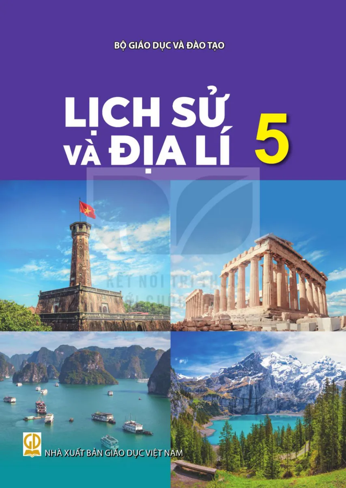
BỘ GIÁO DỤC VÀ ĐÀO TẠO
LICH SỬ
và ĐIA LI
NHÀ GIA@Ø DỤC
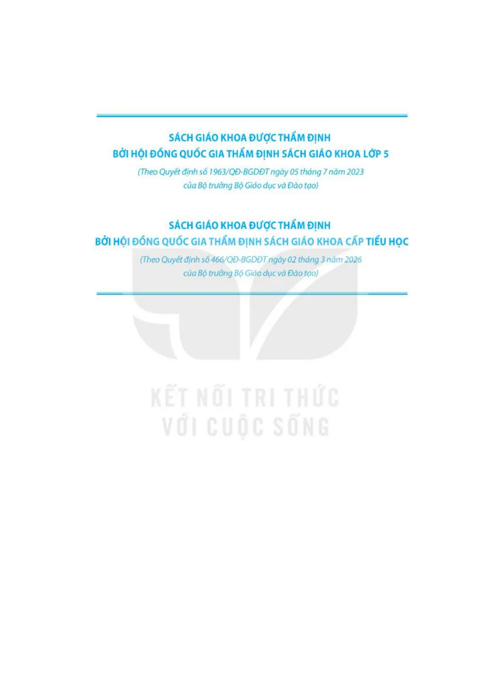
SÁCH GIÁO KHOA ĐƯỢC THẤM ĐỊNH
BỞI HỘI ĐỒNG QUỐC GIA THẦM ĐỊNH SÁCH GIÁO KHOA LỚP 5
(Theo Quyết định số 1963/QĐ-BGDĐT ngày 05 tháng 7 năm 2023
của Bộ trưởng Bộ Giáo dục và Đào tạo)
SÁCH GIÁO KHOA ĐƯỢC THẤM ĐINH
BỞI HỘI ĐỒNG QUỐC GIA THẤM ĐỊNH SÁCH GIÁO KHOA CẤP TIỂU HỌC
(Theo Quyết định số 466/QĐÐ-BGDĐT ngày 02 tháng 3 năm 2026
của Bộ trưởng Bộ Giáo dục và Đào tạo)
KẾT TRI THỨP
VI pUô0
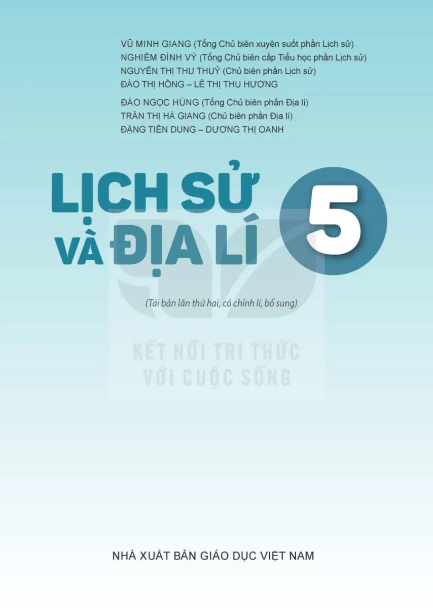
VŨ MINH GIANG (Tổng Chủ biên xuyên suốt phần Lịch sử)
NGHIÊM ĐÌNH VỲ (Tổng Chủ biên cấp Tiểu học phần Lịch sử)
NGUYÊN THỊ THU (Chủ biên phản Lịch sử)
ĐÀO THỊ HÒNG - LÊ THỊ HƯƠNG
ĐÀO NGỌC HÙNG (Tổng Chủ biên phần Địa lí)
TRẤN THỊ HÀ GIANG (Chủ biên phần Địa lí)
ĐẶNG TIÊN DUNG —~ DƯƠNG THỊ OANH
LICH SỬ
và ĐỊA LÍ
(Tái bản lân thứ hai, có chỉnh lí, bổ sung)
KẾT NŨI TRI THỨP
VữI 0U00
NHÀ XUÁT BẢN GIÁO DỤC VIỆT NAM
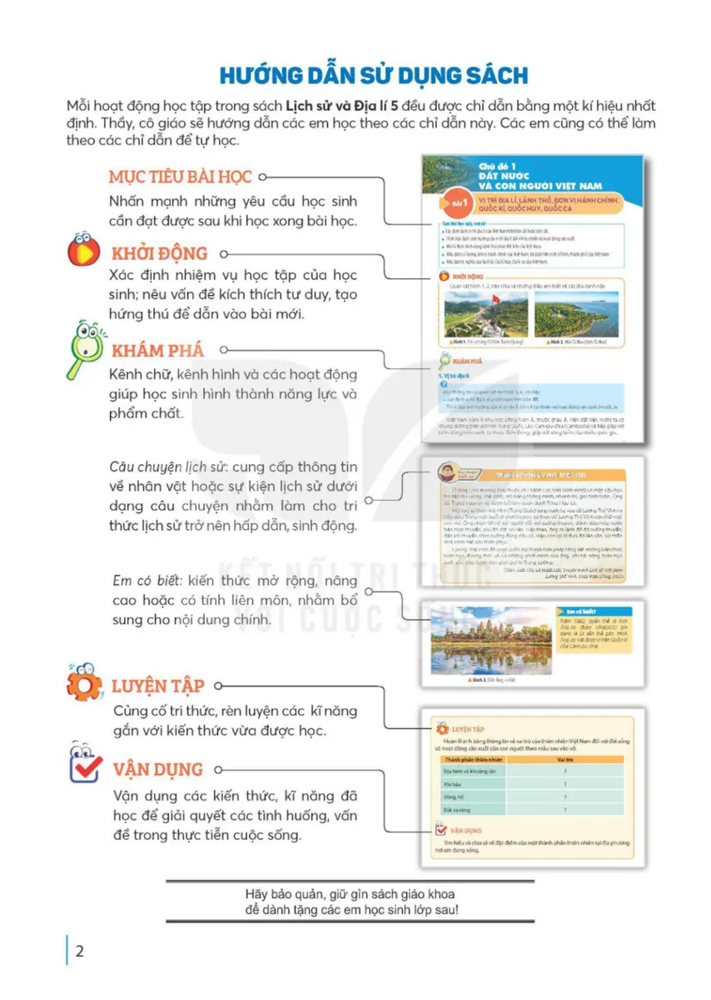
HƯỚNG DÂN SỬ DỤNG SÁCH
Mỗi hoạt động học tập trong séch Lịch sử và Địa lí 5 đều được chỉ dẫn bằng một kí hiệu nhết
định. Thầy, cô giáo sẽ hướng dẫn các em học theo các chỉ dẫn này. Các em cũng có thể làm
theo các chỉ dẫn để tự học.
Chủ đé T
ĐẤT NƯỚC
VÀ CON NGƯỜI VIÊT NAM
những yêu học sinh 'VỊ TRÍ ĐỊA LÍ, LÃNH THỐ, ĐƠNVỊ HÀNH CHỈNH
quốc qUỗ£ HUY,
cần đẹt được squ khi học xong bài học.
w la bán đi tuy tấm:
KHỞI ĐỘNG lrán rất đa Kiên
Nếu nghĩ của Quốc nla
Xúc định nhiệm vụ học tệp của học
tắt hành 1, chia tế rưững điêu biết VỆ các địa rdy,
sinh; nêu vến đề kích thích tư duy, tạo
hứng thú để dẫn vòo bài mới.
KHÁM PHÁ
Kênh chữ, kênh hình và các hoạt động
giúp học sinh hình thành năng lực và đan lát hành # em hãy:
Tĩnh: bấy ảnh tá ví || bểnhiêr huại đứng xuất ở In
phẩm chết.
năm Khu vực tầng Han Ã, thai 4. liên ta có
Câu chuuên lịch sử: cùng cốp thông tin
về nhân vệt hoặc sự kiện lịch sử dưới
dạng côu chuyện nhằm làm cho tri
sử mg nước lạ, xua cử Lưng Thể
thức lịch sử trở nên hếp dễn, sinh động.
_ vInh 49 tuân kết
Lượng Thể kirh
Em có biết: kiến thức mở rộng, nông
hoặc có tính liên môn, nhằm bổ
sung cho nội dung chính.
Củng cế tri thức, rèn luyện các kĩ năng
gắn với kiến thức vừa được học. ' LUYỆN TẬP
_ Hoàn thành bông thông bin về và trụ tủa thiên đế: với đời
Thành phần thiên nhiên:
VẬN DỤNG
“dự hậu
Vộn dụng cóc kiến thức, kĩ năng đã hệ
Biất và rừng
học để giỏi quyết các tình huống, vốn
đề trong thực tiễn cuộc sống.
Tìm hiểu và chia sẻ về đặt điềm của một nhiên nhện tai địa
Hãy bảo quản, giữ gìn sách giáo khoa
để dành tặng các em học sinh lớp sau!
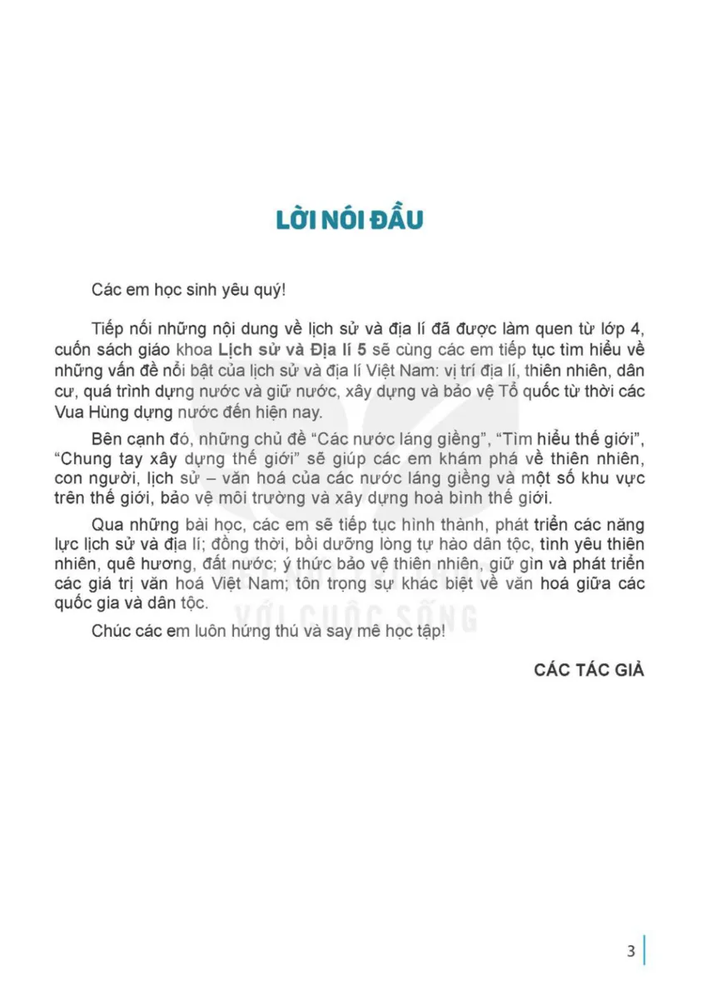
LỜI NÓI ĐẦU
Các em học sinh yêu quý!
Tiếp nối những nội dung về lịch sử và địa lí đã được làm quen từ lớp 4,
cuốn sách giáo khoa Lịch sử và Địa lí 5 sẽ cùng các em tiếp tục tìm hiểu về
những ván đề nỗi bật của lịch sử và địa lí Việt Nam: vị trí địa lí, thiên nhiên, dân
cư, quá trình dựng nước và giữ nước, xây dựng và bảo vệ Tô quôc từ thời các
Vua Hùng dựng nước đến hiện nay.
Bên cạnh đó, những chủ đề “Các nước láng giềng”, “Tìm hiểu thế giới”,
“Chung tay xây dụng thế giới” sẽ giúp các em khám phá về thiên nhiên,
con người, lịch sử - văn hoá của các nước láng giềng và một số khu vực
trên thê giới, bảo vệ môi trường và xây dựng hoà bình thê giới.
Qua những bài học, các em sẽ tiếp tục hình thành, phát triển các năng
lực lịch sử và địa lí; đông thời, bôi dưỡng lòng tự hào dân tộc, tình yêu thiên
nhiên, quê hương, đất nước; ý thức bảo vệ thiên nhiên, giữ gìn và phát triển
các giá trị văn hoá Việt Nam; tôn trọng sự khác biệt vê văn hoá giữa các
quốc gia và dân tộc.
Chúc các em luôn hứng thú và say mê học tập!
CÁC TÁC GIẢ
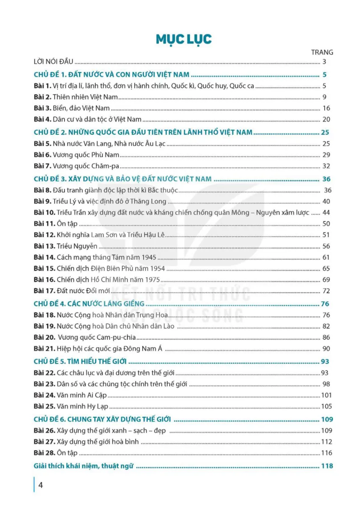
MUC LỤC
TRANG
LỜI NÓI ĐẦU.
CHỦ ĐỀ 1. ĐẤT NƯỚC VÀ CON NGƯỜI VIỆT NAM
Bài 1. Vị trí địa lí, lãnh thổ, đơn vị hành chính, Quốc kì, Quốc huy, Quốc ca..
Bài 2. Thiên nhiên Việt Nam.
Bài 3. Biển, đảo Việt Nam . TÔ
Bài 4. Dân cư và dân tộc ở Việt . 20
CHỦ ĐỀ 2. NHỮNG QUỐC GIA ĐẦU TIÊN TRÊN LÃNH THỔ VIỆT NAM. .25
Bài 5. Nhà nước Văn Lang, Nhà nước Âu Lạc.
Bài 6. Vương quốc Phù Nam... „9
Bài 7. Vương quốc Chăm-pa.... „32
CHỦ ĐỀ 3. XÂY DỰNG VÀ BẢO VỆ ĐẤT NƯỚC VIỆT NAM. 36
Bài 8. Đẫu tranh giành độc lập thời kì Bắc thuộc. 36
Bài 9. Triểu Lý và việc định đô ở Thăng Long . 40
Bài 10. Triều Trần xây dựng đất nước và kháng chiến chống quân Mông - Nguyên xâm lược ...... 44
Bài 11. Ôn tập ......... 50
Bài 12. Khởi nghĩa Lam Sơn và Triểu Hậu Lê. 51
Bài 13. Triều Nguyên „ ĐỒ
Bài 14. Cách mạng tháng Tám năm 1945, Bi
Bài 15. Chiến dịch Điện Biên Phủ năm 1954. .65
Bài 16. Chiến dịch Hồ Chí Minh năm „. 68
Bài 17. Đất nước Đổi mới... 2
CHỦ ĐỀ 4. CÁC NƯỚC LÃNG GIỀNG 76
Bài 18. Nước Cộng hoà Nhân dân Trung Hoa.... . #6
Bài 19. Nước Cộng hoà Dân chủ Nhân dân Lào .82
Bài 20. Vương quốc Cam-pu-chia.. ... ĐỒ
Bài 21. Hiệp hội các quốc gia Đông Nam Á . 90
CHỦ ĐỀ 5. TÌM HIỂU THẾ GIỚI 93
Bài 22. Các châu lục và đại dương trên thế giới .. 953
Bài 23. Dân số và các chủng tộc chính trên thế giới. „ 88
Bài 24. Văn minh Ai Cập. „ TÔT†
Bài 25. Văn minh Hy Lạp.... T05
CHỦ ĐỀ 6. CHUNG TAY XÂY DỰNG THẾ GIỚI . 109
Bài 26. Xây dựng thế giới xanh - sạch - đẹp „ T09
Bài 27. Xây dựng thế giới hoà bình ... mã | TẾ
Bài 28. Ôn tập .
Giải thích khái niệm, thuật ngữ 118
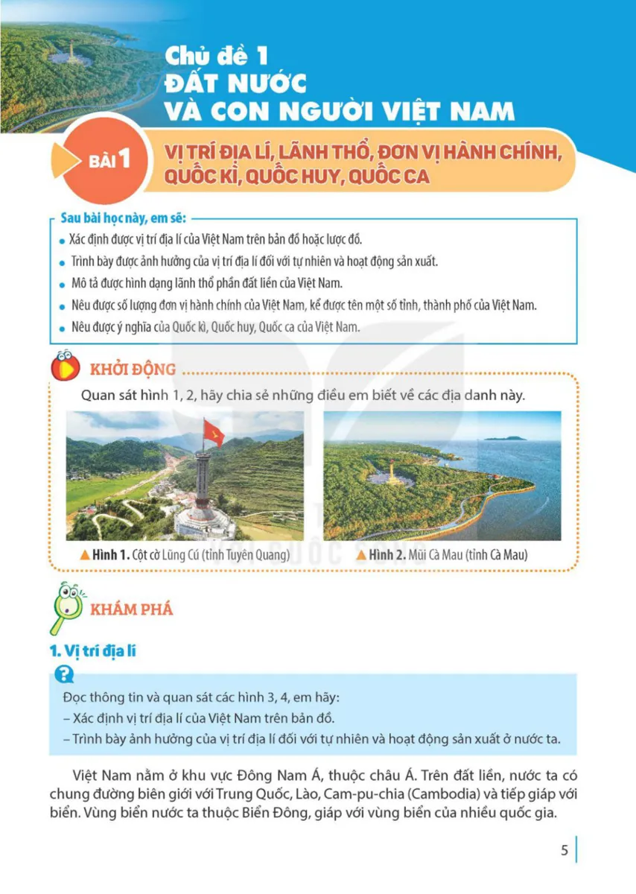
Chủ đề T
ĐẤT NƯỚC
VÀ CON NGƯƠI VIỆT NAM
VỊ TRÍ ĐỊA LÍ, LÃNH THỔ, ĐƠN VỊ HÀNH CHÍNH,
BÀI Ì
QUỐC KĨ, HUY, CA
Sau bài học này, em sẽ:
s Xác định được vị trí địa lí của Việt Nam trên bản đồ hoặc lược đô.
e_ Ïrình bày được ảnh hưởng của vị trí địa lí đối với tự nhiên và hoạt động sản xuất.
Mô tả được hình dạng lãnh thổ phân đất liền của Việt Nam.
Nêu được số lượng đơn vị hành chính của Việt Nam, kể được tên một số tỉnh, thành phố của Việt Nam.
s_ Nêu được ý nghĩa của Quốc kì, Quốc huy, Quốc ca của Việt Nam.
KHỞI ĐÔNG
Quan sát hình 1, 2, hãy chia sẻ những điều em biết về các địa danh này.
â Hình 1. Cột cờ Lũng Cú (tỉnh Tuyên Quang) Hình 2. Mũi (à Mau (tỉnh (à Mau)
KHÁM PHÁ
1. Vị trí địa lí
Đọc thông tin và quan sát các hình 3, 4, em hãy:
- Xác định vị trí địa lí của Việt Nam trên bản đồ.
- Trình bày ảnh hưởng của vị trí địa lí đối với tự nhiên và hoạt động sản xuất ở nước ta.
Việt Nam nằm ở khu vực Đông Nam Á, thuộc châu Á. Trên đất liền, nước ta có
chung đường biên giới với Trung Quốc, Lào, Cam-pu-chia (Cambodia) và tiếp giáp với
biển. Vùng biển nước ta thuộc Biển Đông, giáp với vùng biển của nhiều quốc gia.
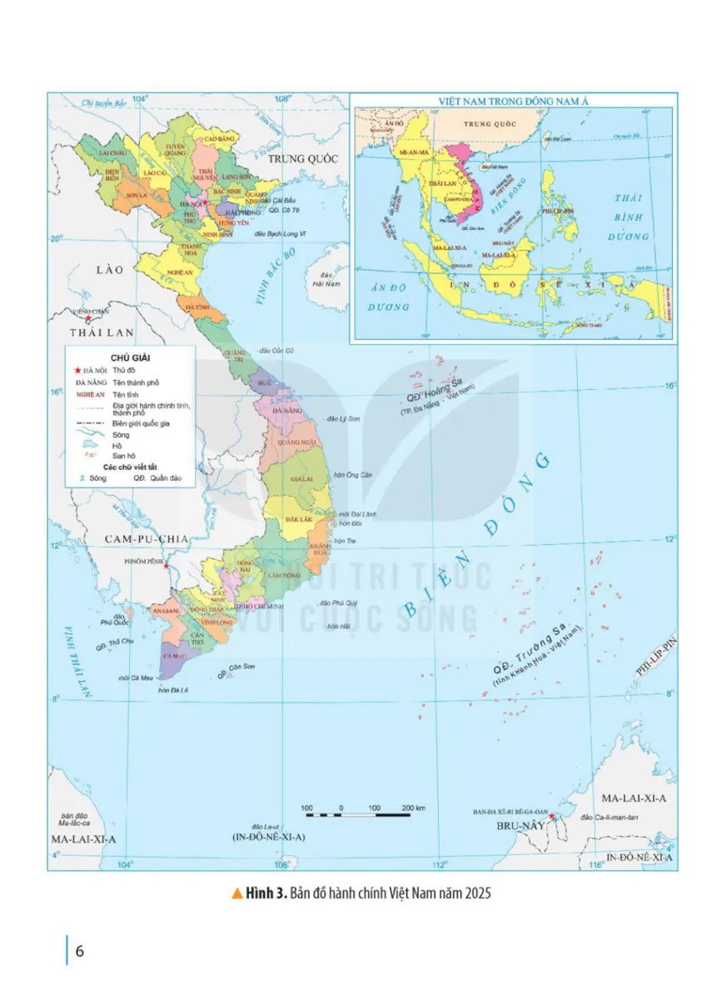
104”
Chỉ nền VIỆT NAM TRƠNG ĐÔNG NAM Á
BỘ TRUNG QUỐC
LAI ' TRUNG QUỐC
MI-AM-MA.
lam
THÁI LAM:
“QUẢNG: THÁT
SP BÌNH
đảo Bạch Long Vĩ DƯƠNG
MA-L.AI-XI-A.
LÀO `
Hãi Nam
ĐÓ
DƯƠNG
THÁI LAN:
CHỦ GIẢI đảo Có
TKHẢNÔL Thủ đề
HUẾ: 16'|
ĐÁ NÀNG Tên thành phổ
M NGHỆ AN Tên tỉnh
thành phổ.
- Lý Son
Biên giới quốc gia
Sống QUẬẢNG NGI `
San hỗ
Cặc chữ viết tất
$ Sông. , hón Ông Căn
QÐ. Quần đảo GIALAI
LẮK `: Đại ï
CAM-PU-CHIA Tre 18"
129
đáo Phú Quỹ
Phú Quốc \
H hẳn Hiải
2p CĂN:
_ Sơn
mũi Cá
MA-LAI-XI-A
100 100 _200 km
,bán đảo: BAN-BA XÊ-RI
Ma-lắc-ca đão Ca-li-man-tan
(IN-ĐÔ-NÊ-XI-A)
104° 112
108”
á. Hình 3. Bản đồ hành chính Việt Nam năm 2025
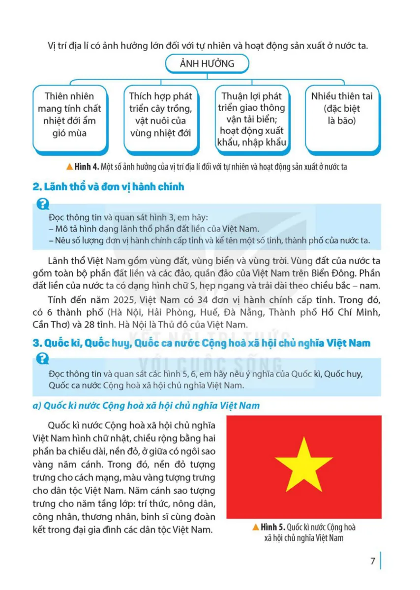
Vị trí địa lí có ảnh hưởng lớn đối với tự nhiên và hoạt động sản xuất ở nước ta.
ẢNH HƯỞNG
Thích hợp phát
Thiên nhiên Thuận lợi phát Nhiều thiên tai
triển cây trồng,
mang tính chất triển giao thông (đặc biệt
vận tải biển;
nhiệt đới ẩm vật nuôi của là bão)
gió mùa vùng nhiệt đới hoạt động xuất
khẩu, nhập khẩu
Hình 4. Một số ảnh hưởng của vị trí địa lí đối với tự nhiên và hoạt động sản xuất ở nước ta
2. Lãnh thổ và đơn vị chính
Đọc thông tin và quan sát hình 3, em hãy:
= Mô tả hình dạng lãnh thổ phần đất liên của Việt Nam.
— Nêu số lượng đơn vị hành chính cấp tỉnh và kể tên một số tỉnh, thành phố của nước ta.
Lãnh thổ Việt Nam gồm vùng đất, vùng biển và vùng trời. Vùng đất của nước ta
gồm toàn bộ phần đất liền và các đảo, quần đảo của Việt Nam trên Biển Đông. Phần
đất liền của nước ta có dạng hình chữ S, hẹp ngang và trải dài theo chiều bắc - nam.
Tính đến năm 2025, Việt Nam có 34 đơn vị hành chính cấp tỉnh. Trong đó,
có 6 thành phố (Hà Nội, Hải Phòng, Huế, Đà Nẵng, Thành phố Hồ Chí Minh,
Cần Thơ) và 28 tỉnh. Hà Nội là Thủ đô của Việt Nam.
3. Quốc kì, Quốc huu, ca nước Cộng hoà xã hội chủ nghĩa Việt Nam
Đọc thông tin và quan sát các hình 5, 6, em hãy nêu ý nghĩa của Quốc kì, Quốc huy,
Quốc ca nước Cộng hoà xã hội chủ nghĩa Việt Nam.
a) Quốc kì nước Cộng hoà xã hội chủ nghĩa Việt Nam
Quốc kì nước Cộng hoà xã hội chủ nghĩa
Việt Nam hình chữ nhật, chiều rộng bằng hai
phần ba chiều dài, nền đỏ, ở giữa có ngôi sao
vàng năm cánh. Trong đó, nền đỏ tượng
trưng cho cách mạng, màu vàng tượng trưng
cho dân tộc Việt Nam. Năm cánh sao tượng
trưng cho năm tầng lớp: trí thức, nông dân,
công nhân, thương nhân, binh sĩ cùng đoàn
kết trong đại gia đình các dân tộc Việt Nam. â Hình 5. Quốc kì nước Cộng hoà
xã hội chủ nghĩa Việt Nam
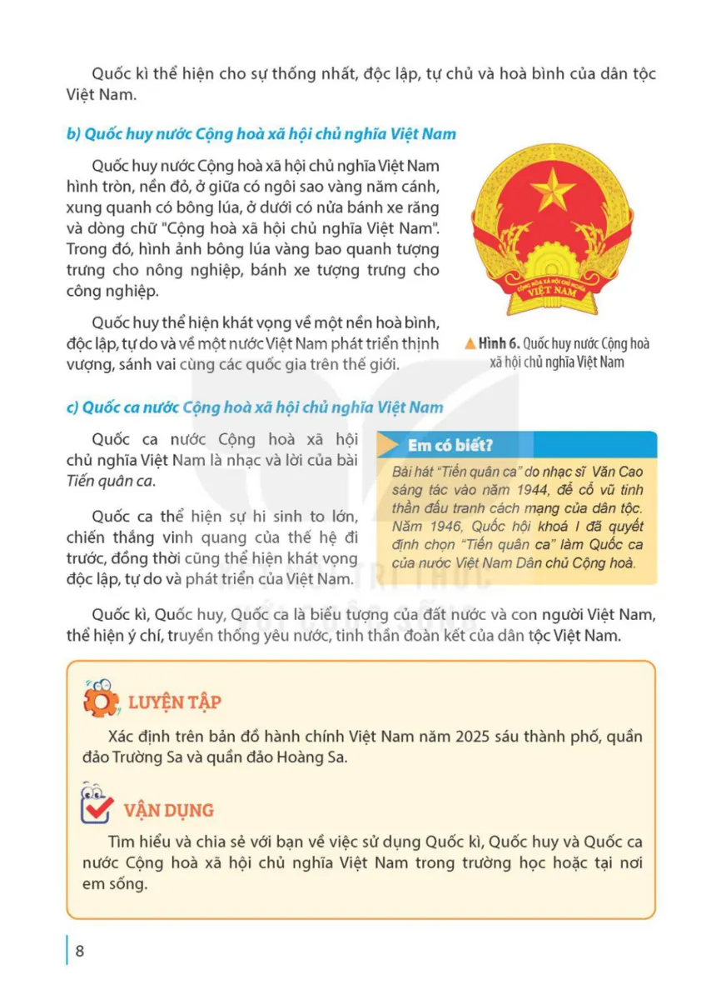
Quốc kì thể hiện cho sự thống nhất, độc lập, tự chủ và hoà bình của dân tộc
Việt Nam.
b) Quốc huy nước Cộng hoà xã hội chủ nghĩa Việt Nam
Quốc huy nước Cộng hoà xã hội chủ nghĩa Việt Nam
hình tròn, nền đỏ, ở giữa có ngôi sao vàng năm cánh,
xung quanh có bông lúa, ở dưới có nửa bánh xe răng
và dòng chữ "Cộng hoà xã hội chủ nghĩa Việt
Trong đó, hình ảnh bông lúa vàng bao quanh tượng
trưng cho nông nghiệp, bánh xe tượng trưng cho
công nghiệp.
Quốc huy thể hiện khát vọng về một nền hoà bình,
độc lập, tự do và về một nước Việt Nam phát triển thịnh ¿ Hình 6. Quốc huy nước Cộng hoà
vượng, sánh vai cùng các quốc gia trên thế giới. xã hội chủ nghĩa Việt Nam
c) Quốc ca nước Cộng hoà xã hội chủ nghĩa Việt Nam
Quốc ca nước Cộng hoà xã hội Em có biết?
chủ nghĩa Việt Nam là nhạc và lời của bài
Bài hát “Tiễn quân ca” do nhạc sĩ Văn Cao
Tiến quân ca.
sáng tác vào năm 1944, đề cỗ vũ tinh
Quốc ca thể hiện sự hi sinh to lớn,
thân đầu tranh cách mạng của dân tộc.
Năm 1946, Quốc hội khoá ! đã quyết
chiến thắng vinh quang của thế hệ đi
định chọn “Tiễn quân ca” làm Quốc ca
trước, đồng thời cũng thể hiện khát vọng của nước Việt Nam Dân chủ Cộng hoà.
độc lập, tự do và phát triển của Việt Nam.
Quốc kì, Quốc huy, Quốc ca là biểu tượng của đất nước và con người Việt Nam,
thể hiện ý chí, truyền thống yêu nước, tỉnh thần đoàn kết của dân tộc Việt Nam.
Xác định trên bản đồ hành chính Việt Nam năm 2025 sáu thành phố, quân
đảo Trường Sa và quần đảo Hoàng Sa.
VẬN DỤNG
Tìm hiểu và chia sẻ với bạn về việc sử dụng Quốc kì, Quốc huy và Quốc ca
nước Cộng hoà xã hội chủ nghĩa Việt Nam trong trường học hoặc tại nơi
em sống.
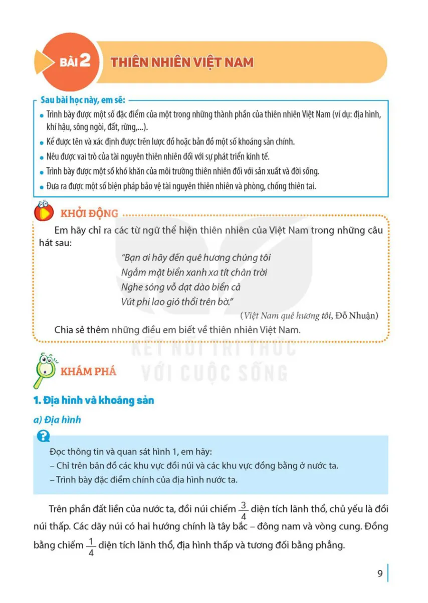
THIÊN NHIÊN VIET NAM
Sau bài học này, em sẽ:
ø Trình bày được một số đặc điểm của một trong những thành phần của thiên nhiên Việt Nam (ví dụ: địa hình,
khí hậu, sông ngòi, đất, rừng,...).
ø Kể được tên và xác định được trên lược đồ hoặc bản đồ một số khoáng sản chính.
ø Nêu được vai trò của tài nguyên thiên nhiên đối với sự phát triển kinh tế.
e lrình bày được một số khó khăn của môi trường thiên nhiên đối với sản xuất và đời sống.
e Đưa ra được một số biện pháp bảo vệ tài nguyên thiên nhiên và phòng, chống thiên tai.
Em hãy chỉ ra các từ ngữ thể hiện thiên nhiên của Việt Nam trong những câu
hát sau:
“Bạn ơi hãy đến quê hương chúng tôi
Ngắm mặt biển xanh xa tít chân trời
Nghe sóng vỗ dạt dào biển cả
Vút phi lao gió thổi trên bờ.”
(Việt Nam quê hương tôi, Đỗ Nhuận)
Chia sẻ thêm những điều em biết về thiên nhiên Việt Nam.
KHÁM PHÁ VữI 0U00 SỮNG
1. Địa hình và khoáng sản
a) Địa hình
Đọc thông tin và quan sát hình 1, em hãy:
~ Chỉ trên bản đồ các khu vực đổi núi và các khu vực đồng bằng ở nước ta.
- Trình bày đặc điểm chính của địa hình nước ta.
Trên phần đất liền của nước ta, đồi núi chiếm diện tích lãnh thổ, chủ yếu là đồi
núi thấp. Các dãy núi có hai hướng chính là tây bắc - đông nam và vòng cung. Đồng
bằng chiếm diện tích lãnh thổ, địa hình thấp và tương đối bằng phẳng.
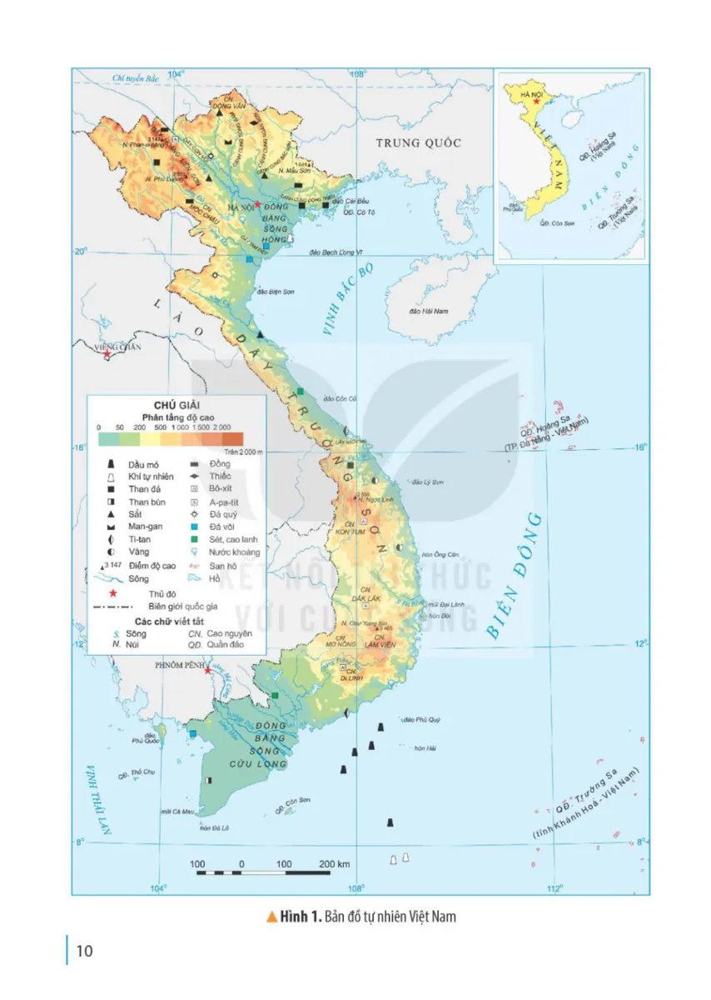
CÀI tuyền Bắc. 104”
HÀ NỘI
EM
DÔNG VĂN
TRUNG QUỐC
Phủ
Cái Bằu
8. Có Tả
cô:
SÔNG ` Ủữ. Cận Sơn
Bạch Long WT
`
` đảo Biện Son
š đảa Hải Nam
CHÚ GIẢI đảo Gắn Cả
Phản tẳng độ cao
5B 200 B00 1000 1500 2009
“Trên -18"
Dầu mỏ Đằng
Khi tự nhiên Thiếc
Bả-xÍt
Than đá
Linh
Than hủn A-pa-lil
Sắt Đá qUý
Man-gan Đá vôi
Ti-tan Sẻt, can lanh
f° KÓN C
Vàng Nước khoảng hiên Ông Cân
F— 1ã7 Điểm độ cao San hô HUP
Hồ
_ Bằng
Thủ đã
M
Biên giới quốc gia
Các chữ viết tắt thân Đại
3
CN. Cao nguyên
Sông
N. Núi. MƠNÔNG VIÊN 12”
Quần đảo
PHNÔM PÊNH
s ĐÔNG: Phú Quý
BẰNG
Phú Quốc'
Mau... o6.
hòn Đá Lễ
,.Bˆ
km
100 100:
104” 108°
¿ Hình 1. Bản đồ tự nhiên Việt Nam
10
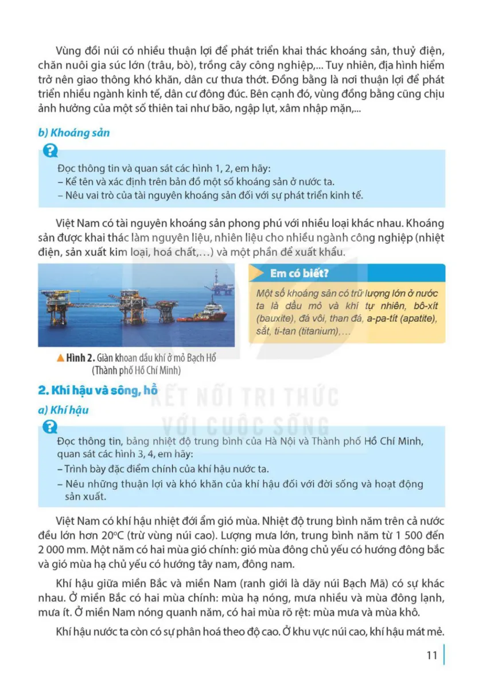
Vùng đồi núi có nhiều thuận lợi để phát triển khai thác khoáng sản, thuỷ điện,
chăn nuôi gia súc lớn (trâu, bò), trồng cây công nghiệp,... Tuy nhiên, địa hình hiểm
trở nên giao thông khó khăn, dân cư thưa thớt. Đồng bằng là nơi thuận lợi để phát
triển nhiều ngành kinh tế, dân cư đông đúc. Bên cạnh đó, vùng đồng bằng cũng chịu
ảnh hưởng của một số thiên tai như bão, ngập lụt, xâm nhập mặn,...
b) Khoáng sản
Đọc thông tin và quan sát các hình 1, 2, em hãy:
- Kể tên và xác định trên bản đồ một số khoáng sản ở nước ta.
~ Nêu vai trò của tài nguyên khoáng sản đối với sự phát triển kinh tế.
Việt Nam có tài nguyên khoáng sản phong phú với nhiều loại khác nhau. Khoáng
sản được khai thác làm nguyên liệu, nhiên liệu cho nhiều ngành công nghiệp (nhiệt
điện, sản xuất kim loại, hoá chất,...) và một phần để xuất khẩu.
Em có biết?
Một số khoáng sản có trữ lượng lớn ở nước
ta là dâu mỏ và khí tự nhiên, bô-xít
(bauxite), đá vôi, than đá, a-pa-fít
Sắt, ti-tan (tanium)....
â Hình 2. Giàn khoan dầu khí ở mỏ Bạch Hồ
(Thành phố Hồ Chí Minh)
ẾT TRỊ THỨP
2. Khí hậu và sông, hồ )
a) Khí hâu
Đọc thông tin, bảng nhiệt độ trung bình của Hà Nội và Thành phố Hồ Chí Minh,
quan sát các hình 3, 4, em hãy:
- Trình bày đặc điểm chính của khí hậu nước ta.
- Nêu những thuận lợi và khó khăn của khí hậu đối với đời sống và hoạt động
sản xuất.
Việt Nam có khí hậu nhiệt đới ẩm gió mùa. Nhiệt độ trung bình năm trên cả nước
đều lớn hơn 20°C (trừ vùng núi cao). Lượng mưa lớn, trung bình năm từ 1 500 đến
2 000 mm. Một năm có hai mùa gió chính: gió mùa đông chủ yếu có hướng đông bắc
và gió mùa hạ chủ yếu có hướng tây nam, đông nam.
Khí hậu giữa miền Bắc và miền Nam (ranh giới là dãy núi Bạch Mã) có sự khác
nhau. Ở miền Bắc có hai mùa chính: mùa hạ nóng, mưa nhiều và mùa đông lạnh,
mưa ít. Ở miền Nam nóng quanh năm, có hai mùa rõ rệt: mùa mưa và mùa khô.
Khí hậu nước ta còn có sự phân hoá theo độ cao. Ở khu vực núi cao, khí hậu mát mẻ.
11
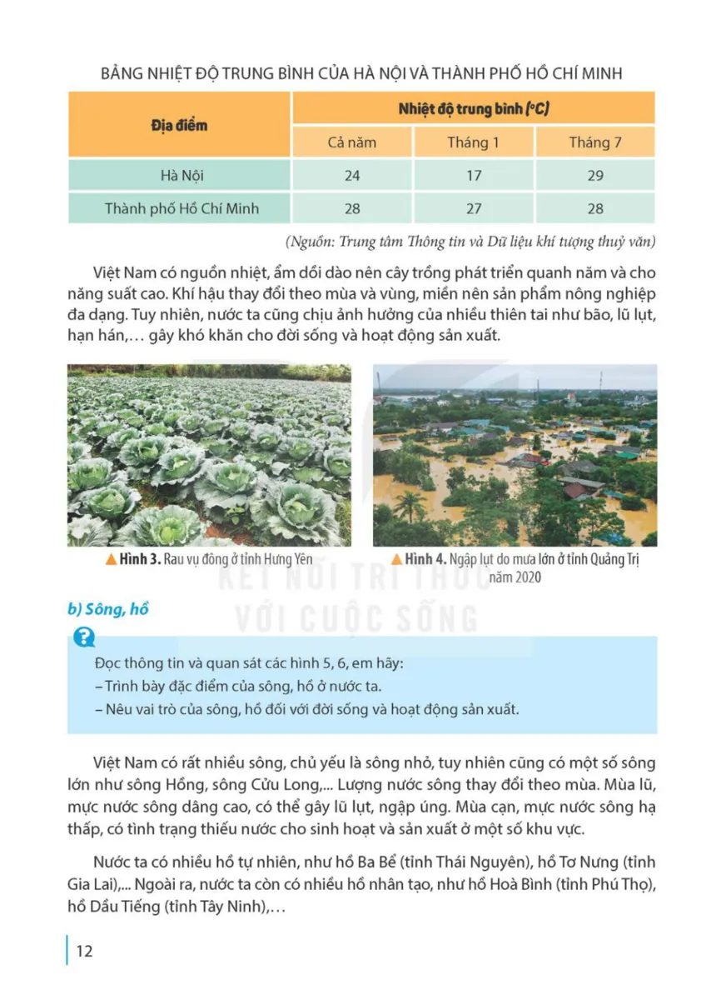
BẢNG NHIỆT ĐỘ TRUNG BÌNH CỦA HÀ NỘI VÀ THÀNH PHỐ HỒ CHÍ MINH
Nhiệt độ trung bình ƒ°C}
Địa điểm
Tháng l1
Cả năm Tháng 7
Hà Nội 24 17 29
Thành phố Hồ Chí Minh 28 28
27
(Nguồn: Trung tâm Thông tin và Dữ liệu khí tượng thuỷ văn)
Việt Nam có nguồn nhiệt, âm dồi dào nên cây trồng phát triển quanh năm và cho
năng suất cao. Khí hậu thay đổi theo mùa và vùng, miền nên sản phẩm nông nghiệp
đa dạng. Tuy nhiên, nước ta cũng chịu ảnh hưởng của nhiều thiên tai như bão, lũ lụt,
hạn hán,... gây khó khăn cho đời sống và hoạt động sản xuất.
á Hình 3. Rau vụ đông ở tỉnh Hưng Yên ¿. Hình 4. Ngập lụt do mưa lớn ở tỉnh Quảng Trị
năm 2020
b) Sông, hồ VữI
Đọc thông tin và quan sát các hình 5, 6, em hãy:
- Trình bày đặc điểm của sông, hồ ở nước ta.
- Nêu vai trò của sông, hồ đối với đời sống và hoạt động sản xuất.
Việt Nam có rất nhiều sông, chủ yếu là sông nhỏ, tuy nhiên cũng có một số sông
lớn như sông Hồng, sông Cửu Long,... Lượng nước sông thay đổi theo mùa. Mùa lũ,
mực nước sông dâng cao, có thể gây lũ lụt, ngập úng. Mùa cạn, mực nước sông hạ
thấp, có tình trạng thiếu nước cho sinh hoạt và sản xuất ở một số khu vực.
Nước ta có nhiều hồ tự nhiên, như hồ Ba Bể (tỉnh Thái Nguyên), hồ Tơ Nưng (tỉnh
Gia Lai),... Ngoài ra, nước ta còn có nhiều hồ nhân tạo, như hồ Hoà Bình (tỉnh Phú Thọ),
hồ Dầu Tiếng (tỉnh Tây Ninh),...
12
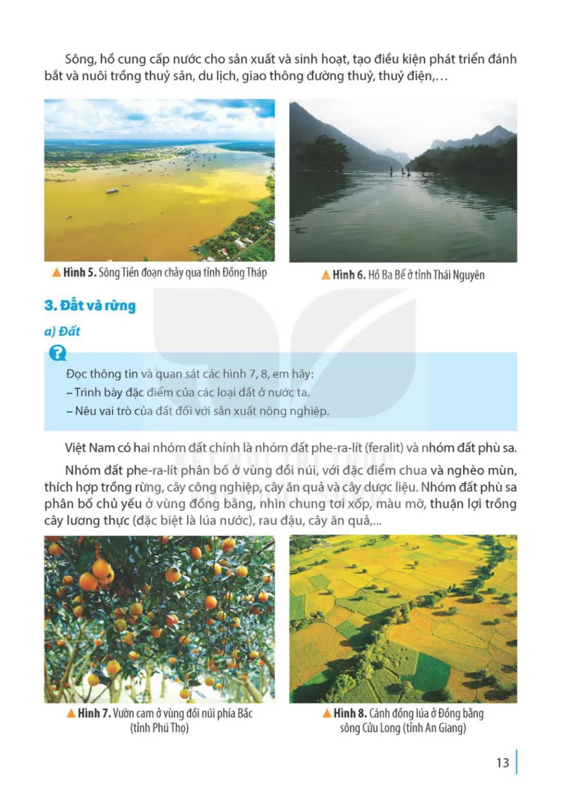
Sông, hồ cung cấp nước cho sản xuất và sinh hoạt, tạo điều kiện phát triển đánh
bắt và nuôi trồng thuỷ sản, du lịch, giao thông đường thuỷ, thuỷ điện,...
â Hình 5. Sông Tiền đoạn chảy qua tỉnh Đồng Tháp ¿ Hình 6. Hồ Ba Bể ở tỉnh Thái Nguyên
3. Đất và rừng
a) Đất
Đọc thông tin và quan sát các hình 7, hãy:
- Trình bày đặc điểm của các loại đất ở nước ta.
— Nâu vai trò của đất đối với sản xuất nông nghiệp.
Việt Nam có hai nhóm đất chính là nhóm đất phe-ra-lít (feralit) và nhóm đất phù sa.
Nhóm đất phe-ra-lít phân bố ở vùng đổi núi, với đặc điểm chua và nghèo mùn,
thích hợp trồng rừng, cây công nghiệp, cây ăn quả và cây dược liệu. Nhóm đất phù sa
phân bố chủ yếu ở vùng đồng bằng, nhìn chung tơi xốp, màu mỡ, thuận lợi trồng
cây lương thực (đặc biệt là lúa nước), rau đậu, cây ăn quả,..
á. Hình 7. Vườn cam ở vùng đổi núi phía Bắc Hình 8. Cánh đồng lúa ở Đồng bằng
(tỉnh Phú Thọ) sông Cửu Long (tỉnh An Giang)
13
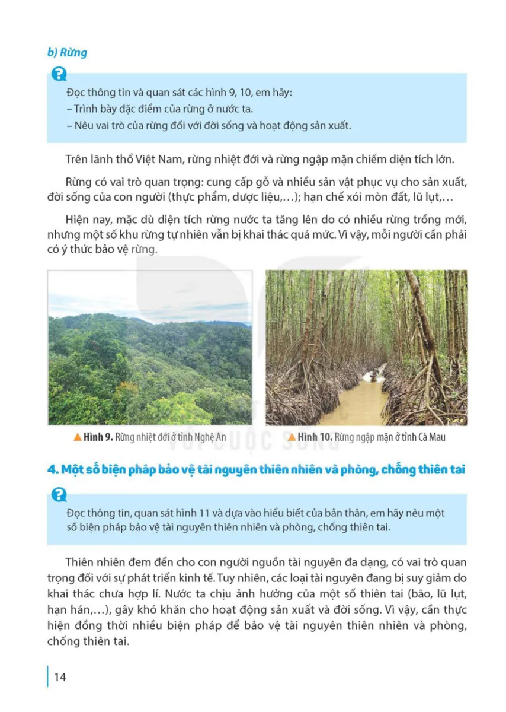
Rừng
Đọc thông tin và quan sát các hình 9, 10, em hãy:
— Trình bày đặc điểm của rừng ở nước ta.
~ Nêu vai trò của rừng đối với đời sống và hoạt động sản xuất.
Trên lãnh thổ Việt Nam, rừng nhiệt đới và rừng ngập mặn chiếm diện tích lớn.
Rừng có vai trò quan trọng: cung cấp gỗ và nhiều sản vật phục vụ cho sản xuất,
đời sống của con người (thực phẩm, dược liệu,...); hạn chế xói mòn đất, lũ lụt,...
Hiện nay, mặc dù diện tích rừng nước ta tăng lên do có nhiều rừng trồng mới,
nhưng một số khu rừng tự nhiên vẫn bị khai thác quá mức. Vì vậy, mỗi người cần phải
có ý thức bảo vệ rừng.
â Hình 9. Rừng nhiệt đới ở tỉnh Nghệ An ¿ Hình 10. Rừng ngập mặn ở tỉnh Cà Mau
4. Một sô biện pháp bảo vệ tải nguuên thiên nhiên vâ phông, chỗng thiên tai
Đọc thông tin, quan sát hình 11 và dựa vào hiểu biết của bản thân, em hãy nêu một
số biện pháp bảo vệ tài nguyên thiên nhiên và phòng, chống thiên tai.
Thiên nhiên đem đến cho con người nguồn tài nguyên đa dạng, có vai trò quan
trọng đối với sự phát triển kinh tế. Tuy nhiên, các loại tài nguyên đang bị suy giảm do
khai thác chưa hợp lí. Nước ta chịu ảnh hưởng của một số thiên tai (bão, lũ lụt,
hạn hán,...), gây khó khăn cho hoạt động sản xuất và đời sống. Vì vậy, cần thực
hiện đồng thời nhiều biện pháp để bảo vệ tài nguyên thiên nhiên và phòng,
chống thiên tai.
14
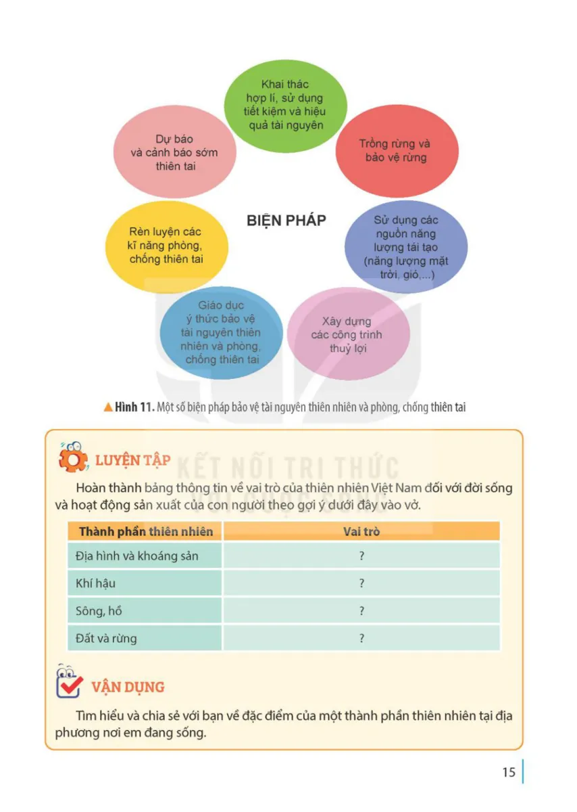
Khai thác
hợp lí, sử dụng
tiết kiệm và hiệu
quả tài nguyên
Dự báo Trồng rừng và
và cảnh báo sớm
bảo vệ rừng
thiên tai
BIỆN PHÁP Sử dụng các
Rèn luyện các nguôn năng
kĩ năng phòng, lượng tái tạo
chồng thiên tai (năng lượng mặt
trời,
Giáo dục
ý thức bảo vệ Xây dụng
tài nguyên thiên các công trình
nhiên và phòng, thuỷ lợi
chống thiên tai
â Hình 11. Một số biện pháp bảo vệ tài nguyên thiên nhiên và phòng, chống thiên tai
LUYỆN TẬP KẾT THƯỨP
Hoàn thành bảng thông tin về vai trò của thiên nhiên Việt Nam đối với đời sống
và hoạt động sản xuất của con người theo gợi ý dưới đây vào vở.
Thành phần thiên nhiên Vai trò
Địa hình và khoáng sản
Khí hậu
Sông, hồ
Đất và rừng
Tìm hiểu và chia sẻ với bạn về đặc điểm của một thành phần thiên nhiên tại địa
phương nơi em đang sống.
1Ô
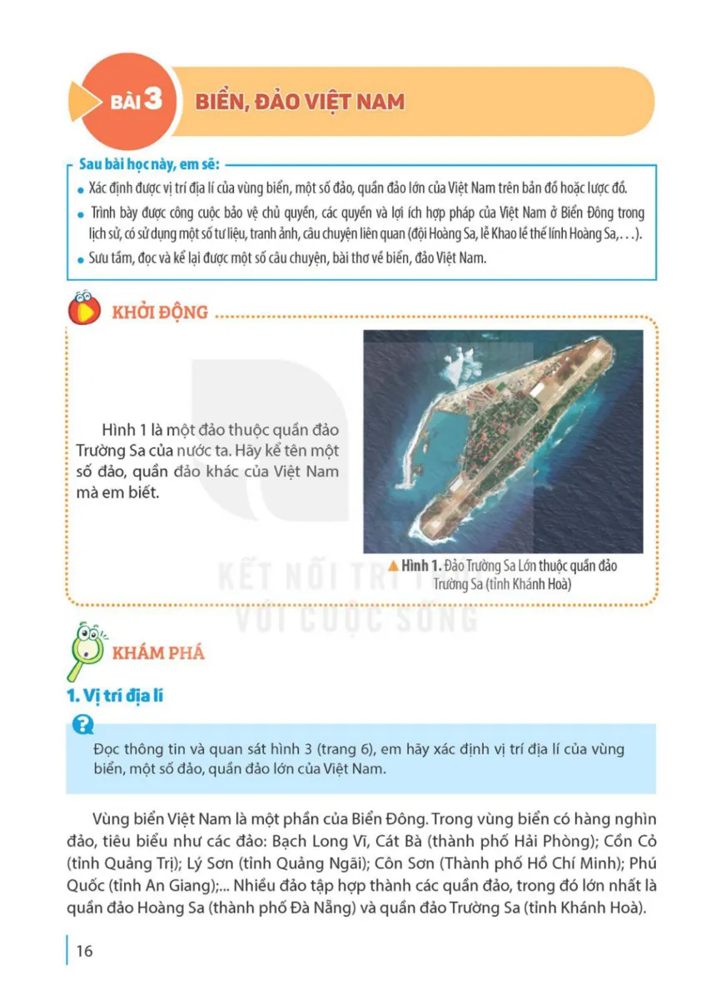
BIỂN, ĐẢO VIỆT NAM
Sau bài học này, em sẽ:
e Xác định được vị trí địa lí của vùng biển, một số đảo, quần đảo lớn của Việt Nam trên bản đồ hoặc lược đồ.
e lrình bày được công cuộc bảo vệ chủ quyền, các quyền và lợi hợp pháp của Việt Nam ở Biển Đông trong
lịch sử, có sử dụng một số tư liệu, tranh ảnh, câu chuyện liên quan (đội Hoàng Sa, lễ Khao lề thế lính Hoàng
Sưu tầm, đọc và kể lại được một số câu chuyện, bài thơ về biển, đảo Việt Nam.
KHỞI ĐỘNG.
Hình 1 là một đảo thuộc quần đảo
Trường Sa của nước ta. Hãy kể tên một
số đảo, quần đảo khác của Việt Nam
mà em biết.
À |
á Hình 1. Đảo Trường Sa Lớn thuộc quấn đảo
Trường Sa (tỉnh Khánh Hoà)
KHÁM PHÁ
1. Vị trí địa lí
Đọc thông tin và quan sát hình 3 (trang 6), em hãy xác định vị trí địa lí của vùng
biển, một số đảo, quần đảo lớn của Việt Nam.
Vùng biển Việt Nam là một phần của Biển Đông. Trong vùng biển có hàng nghìn
đảo, tiêu biểu như các đảo: Bạch Long Vĩ, Cát Bà (thành phố Hải Phòng); Côn Cỏ
(tỉnh Quảng Trị); Lý Sơn (tỉnh Quảng Ngãi); Côn Sơn (Thành phố Hồ Chí Minh); Phú
Quốc (tỉnh An Giang);... Nhiều đảo tập hợp thành các quần đảo, trong đó lớn nhất là
quần đảo Hoàng Sa (thành phố Đà Nẵng) và quần đảo Trường Sa (tỉnh Khánh Hoà).
16
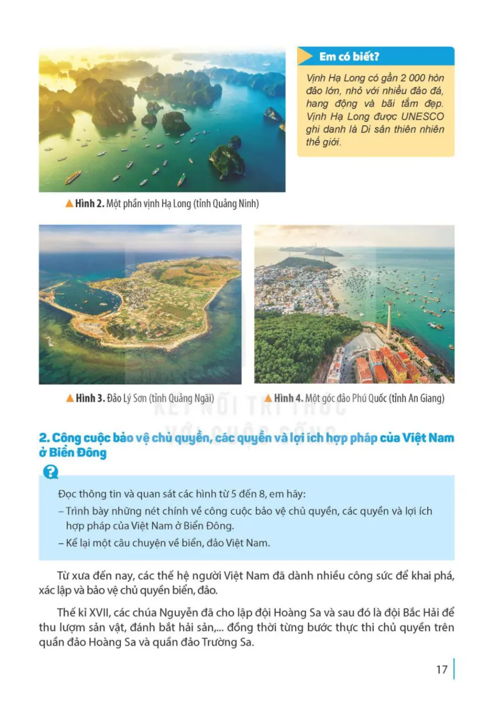
Em có biết?
Vịnh Hạ Long có gân 2 000 hòn
đảo lớn, nhỏ với nhiêu đảo đá,
hang động và bãi tắm đẹp.
Vịnh Hạ Long được UNESCO
ghi danh là Di sản thiên nhiên
thế giới.
Hình 2. Một phần vịnh Hạ Long (tỉnh Quảng Ninh)
¿ Hình 3. Đảo Lý Sơn (tỉnh Quảng Ngãi) â Hình 4. Một góc đảo Phú Quốc (tỉnh An 6iang)
2. Công cuộc bảo vệ chủ quuên, các quuên và lợi ích hợp pháp của Việt Nam
ở Biển Đông
Đọc thông tin và quan sát các hình từ 5 đến 8, em hãy:
- Trình bày những nét chính về công cuộc bảo vệ chủ quyển, các quyển và lợi ích
hợp pháp của Việt Nam ở Biển Đông.
- Kể lại một câu chuyện về biển, đảo Việt Nam.
Từ xưa đến nay, các thế hệ người Việt Nam đã dành nhiều công sức để khai phá,
xác lập và bảo vệ chủ quyền biển, đảo.
Thế kỉ XVII, các chúa Nguyễn đã cho lập đội Hoàng Sa và sau đó là đội Bắc Hải để
thu lượm sản vật, đánh bắt hải sản,... đồng thời từng bước thực thi chủ quyền trên
quần đảo Hoàng Sa và quần đảo Trường Sa.
17
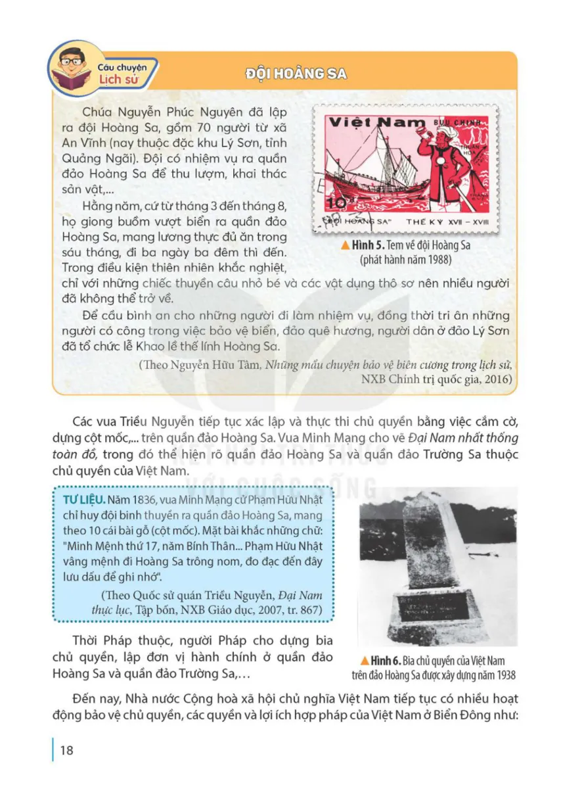
chuyện. ĐÔI HOANG SA
Lịch sử
Chúa Nguyễn Phúc Nguyên lập
ra đội Hoàng So, gồm 7O người từ xð Viet
An Vĩnh (nay thuộc đặc khu Lý Sơn, tỉnh
Quẻng Ngỡi). Đội có nhiệm vụ ra quồn
đẻo Hoàng Sa để thu lượm, khơi thác
sản vột,...
Hằng năm, cứ từ thóng 3 đến thóng 8,
họ giong buồm vượt biển ra đẻo THỂ KỶY XVI — XVII
Hoàng Sơ, mơng lương thực đủ ăn trong
â Hình 5. Iem về đội Hoàng 5a
sáu thóng, đi ba ngày ba đêm thì đến.
(phát hành năm 1988)
Trong điều kiện thiên nhiên khốc nghiệt,
chỉ với những chiếc thuyền câu nhỏ bé và các vột dụng thô sơ nên nhiều người
đã không thể trở về.
Để cầu bình an cho những người đi lòm nhiệm vụ, đồng thời tri ân những
người có công trong việc bỏo vệ biển, đảo quê hương, người dôn ở đỏẻo Lý Sơn
tổ chức lễ Khơo lề thế lính Hoàng So.
(Theo Nguyễn Hữu Tâm, Những trâu chuyện bảo vệ biên cương trong lịch sử,
NXB Chính trị quốc gia, 2016)
Các vua Triều Nguyễn tiếp tục xác lập và thực thi chủ quyền bằng việc cắm cờ,
dựng cột mốc,„... trên quần đảo Hoàng Sa. Vua Minh Mạng cho vẽ Đại Nam nhất thống
toàn đồ, trong đó thể hiện rõ quần đảo Hoàng Sa và quần đảo Trường Sa thuộc
chủ quyền của Việt Nam.
Nữ
TƯ LIỆU. Năm 1836, vua Minh Mạng cử Phạm Hữu Nhật
chỉ huy đội binh thuyền ra quân đảo Hoàng Sa, mang
theo 10 cái bài gỗ (cột mốc). Mặt bài khắc những chữ:
"Minh Mệnh thứ 17, năm Bính Thần... Phạm Hữu Nhật
vâng mệnh đi Hoàng Sa trông nom, đo đạc đến đây
lưu dấu để ghi
(Theo Quốc sử quán Triều Nguyễn, Đại Nam
thực lục, Tập bốn, Giáo dục, 2007, tr. 867)
Thời Pháp thuộc, người Pháp cho dựng bia
chủ quyền, lập đơn vị hành chính ở quân đảo ¿ Hình 6. Bia chủ quyền của Việt Nam
Hoàng Sa và quần đảo Trường Sa,... trên đảo Hoàng Sa đượcXây dựng năm 1938
Đến nay, Nhà nước Cộng hoà xã hội chủ nghĩa Việt Nam tiếp tục có nhiều hoạt
động bảo vệ chủ quyền, các quyền và lợi ích hợp pháp của Việt Nam ở Biển Đông như:
18
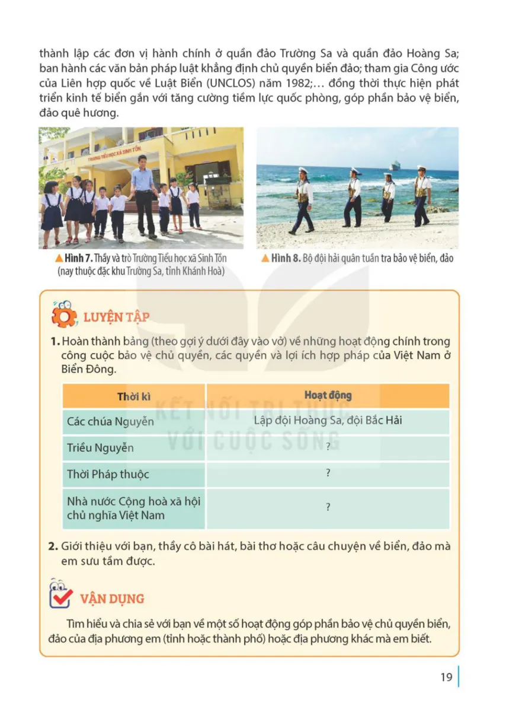
thành lập các đơn vị hành chính ở quần đảo Trường Sa và quần đảo Hoàng Sa;
ban hành các văn bản pháp luật khẳng định chủ quyền biển đảo; tham gia Công ước
của Liên hợp quốc về Luật Biển (UNCLOS) năm 1982;... đồng thời thực hiện phát
triển kinh tế biển gắn với tăng cường tiềm lực quốc phòng, góp phần bảo vệ biển,
đảo quê hương.
Hình 7. Thây và trò Trường Tiểu học xã Sinh Hình 8. Bộ đội hải quân tuần tra bảo vệ biển, đảo
(nay thuộc đặc khu Sa, tỉnh Khánh Hoà)
LUYỆN TẬP
1. Hoàn thành bảng (theo gợi ý dưới đây vào vở) về những hoạt động chính trong
công cuộc bảo vệ chủ quyển, các quyền và lợi ích hợp pháp của Việt Nam ở
Biển Đông.
Thời kì Hoạt động
Các chúa Nguyễn Lập đội Hoàng Sa, đội Bắc Hải
SUN¿:
Triêu Nguyễn
Thời Pháp thuộc
Nhà nước Cộng hoà xã hội
chủ nghĩa Việt Nam
2. Giới thiệu với bạn, thầy cô bài hát, bài thơ hoặc câu chuyện về biển, đảo mà
em sưu tầm được.
VẬN DỤNG
Tìm hiểu và chia sẻ với bạn về một số hoạt động góp phần bảo vệ chủ quyền biển,
đảo của địa phương em (tỉnh hoặc thành phố) hoặc địa phương khác mà em biết.
19
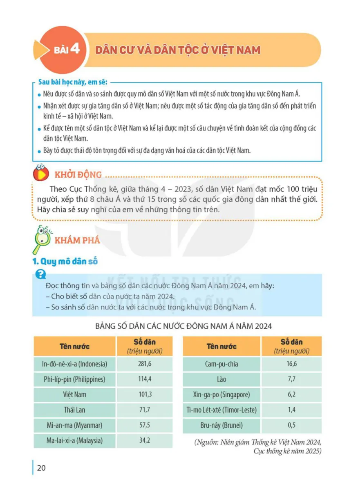
DÂN CƯ VÂ DÂN TÔC Ở VIỆT NAM
Sau bài học này, em sẽ:
e Nêu được số dân và so sánh được quy mô dân số Việt Nam với một số nước trong khu vực Đông Nam Á.
Nhận xét được sự gia tăng dân số ở Việt Nam; nêu được một số tác động của gia tăng dân số đến phát triển
kinh tế — xã hội ở Việt Nam.
e Kế được tên một số dân tộc ở Việt Nam và kể lại được một số câu chuyện về tình đoàn kết của cộng đồng các
dân tộc Việt Nam.
» Bày tỏ được thái độ tôn trong đối với sự đa dạng văn hoá của các dân tộc Việt Nam.
KHỞI ĐỘNG
Theo Cục Thống kê, giữa tháng 4 - 2023, số dân Việt Nam đạt mốc 100 triệu
người, xếp thứ 8 châu Á và thứ 15 trong số các quốc gia đông dân nhất thế giới.
Hãy chia sẻ suy nghĩ của em về những thông tin trên.
KHÁM PHÁ
1. Quụ mô dân sô
Đọc thông tin và bảng số dân các nước Đông Nam Á năm 2024, em hãy:
— Cho biết số dân của nước ta năm 2024.
~ So sánh số dân nước ta với các nước trong khu vực Đông Nam Á.
BẢNG SỐ DÂN CÁC NƯỚC ĐÔNG NAM Á NĂM 2024
Số dân. Số dân
Tên nước Tên nước
(triệu người) (friệu người)
281,6
In-đô-nê-xi-a (Indonesia) (am-pu-chia 16,6
114A lào
Phi-líp-pin (Philippines)
Việt Nam 101,3 Xin-ga-po (Singapore) 6,2
Thái Lan 71/7 Ti-mo Lét-x†ê (Timor-Leste) 1A
Mi-an-ma (Myanmar) 57,5 Bru-nây (Brunei) 0,5
Ma-lai-xi-a (Malaysia) 34,2 (Nguồn: Niên giám Thống kê Việt Nam 2024,
Cục thống kê năm 2025)
20
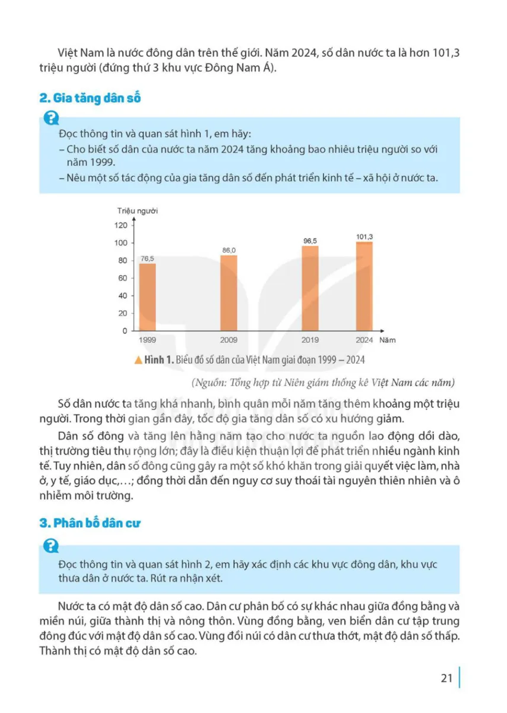
Việt Nam là nước đông dân trên thế giới. Năm 2024, số dân nước ta là hơn 101,3
triệu người (đứng thứ 3 khu vực Đông Nam Á).
2. Gia tăng dân số
Đọc thông tin và quan sát hình 1, em hãy:
- Cho biết số dân của nước ta năm 2024 tăng khoảng bao nhiêu triệu người so với
năm 1999.
— Nêu một số tác động của gia tăng dân số đến phát triển kinh tế - xã hội ở nước ta.
Triệu người
120
98.5
100-
101,3
86,0
80 ¡85
60
40
20
1999 2009 2019 2024 Năm
Hình 1. Biểu đồ số dân của Việt Nam giai đoạn 1999 — 2024
(Nguồn: Tổng hợp tử Niên giám thống kê Việt Nam các năm)
Số dân nước ta tăng khá nhanh, bình quân mỗi năm tăng thêm khoảng một triệu
người. Trong thời gian gần đây, tốc độ gia tăng dân số có xu hướng giảm.
Dân số đông và tăng lên hằng năm tạo cho nước ta nguồn lao động dồi dào,
thị trường tiêu thụ rộng lớn; đây là điều kiện thuận lợi để phát triển nhiều ngành kinh
tế. Tuy nhiên, dân số đông cũng gây ra một số khó khăn trong giải quyết việc làm, nhà
ở, y tế, giáo dục,...; đồng thời dẫn đến nguy cơ suy thoái tài nguyên thiên nhiên và ô
nhiễm môi trường.
3. Phân bô dân cư
Đọc thông tin và quan sát hình 2, em hãy xác định các khu vực đông dân, khu vực
thưa dân ở nước ta. Rút ra nhận xét.
Nước ta có mật độ dân số cao. Dân cư phân bố có sự khác nhau giữa đồng bằng và
miền núi, giữa thành thị và nông thôn. Vùng đồng bằng, ven biển dân cư tập trung
đông đúc với mật độ dân số cao. Vùng đổi núi có dân cư thưa thớt, mật độ dân số thấp.
Thành thị có mật độ dân số cao.
21
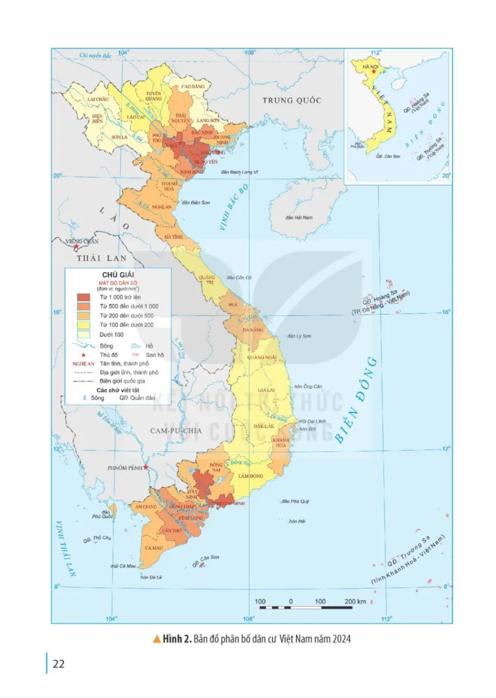
408
Chỉ nuyễn Hắc. 104”
HÀ NỘI
`
THYÊN
TRUNG QUỐC
LAI
NGUYÊN”
HIẾN
PHÙ:
Cân Sơm
đân Bạch Larlg Vĩ
?ữ:
HOÁ.
Biện Sơn
Ÿ đáo Hỏi Nam
HÀ TĨNH:
THÁI LAN
CHỦ GIẢI. đảo Cân Cô
TRỊ
(đơn vị:
Từ 1 000 trở lên
Từ 500 đến dưới 1 000
Từ 200 đến dưới 500
-16”
Tử 100 đến dưới 200
Dưới 100 đn Lự Sim
£>. Hỗ
Sũng
Thủ đã San hỗ QUẢNG NHẤT
` Tên lĩnh, thảnh phố
Địa giới lĩnh, thành phố
Biên quốc qia
Các chữ viết tất „ hôn Ông Căn
# Sông QØ. Quản đảo HUP
Dại Lãnh
LÁK
KHÁNH:
12)
PHNÔM PÉNI
,đân Phú
Phủ Quốc)
ñ hủn Hải
3 THỨ
Thổ Chu.
CÀ MAU.
thũi Cả Mau -
nón Để Lẻ
1ñ0
100 km ¿
104° 108° 4122
Hình 2. Bản đồ phân bố dân cư Việt Nam năm 2024
22
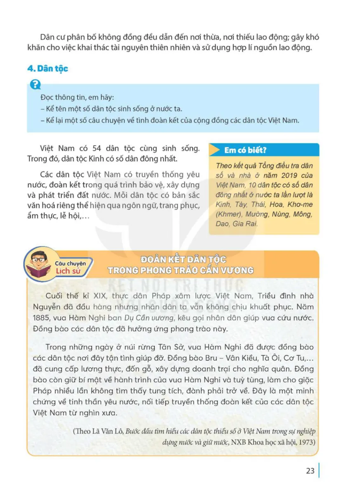
Dân cư phân bố không đồng đều dẫn đến nơi thừa, nơi thiếu lao động; gây khó
khăn cho việc khai thác tài nguyên thiên nhiên và sử dụng hợp lí nguồn lao động.
4. Dân tộc
Đọc thông tin, em hãy:
- Kể tên một số dân tộc sinh sống ở nước ta.
- Kể lại một số câu chuyện về tình đoàn kết của cộng đồng các dân tộc Việt Nam.
Việt Nam có 54 dân tộc cùng sinh sống. Em có biết?
Trong đó, dân tộc Kinh có số dân đông nhất.
Theo kết quả Tông điêu tra dân
Các dân tộc Việt Nam có truyền thống yêu số và nhà ở năm 2019 của
nước, đoàn kết trong quá trình bảo vệ, xây dựng Việt Nam, 10 dân tộc có số dân
và phát triển đất nước. Mỗi dân tộc có bản sắc đông nhất ở nước ta lần lượt là
văn hoá riêng thể hiện qua ngôn ngữ, trang phục, kính, Tày, Thái, Hoa, Kho-me
ẩm thực, lễ hội,... (Khmer), Mường, Nùng, Mông,
Dao, Gia
Côu chuyện
Lịch sử TRONG PHONG CAN VƯƠNG
Cuối thế kỉ XIX, thực dên Phóp xêm lược Việt Nam, Triểu đình nhà
Nguyễn đã đều hòng nhưng nhân dôn to vẫn không chịu khuốt phục. Năm
1885, vua Hàm Nghi ban Dụ Cần uương, kêu gọi nhân dôn giúp vua cứu nước.
Đồng bèo cóc dên tộc đố hưởng ứng phong tròo nòy.
Trong những ngòy ở núi rừng Tôn Sở, vua Hàm Nghỉ đã được đồng bào
cóc dên tộc nơi đêy tên tình giúp đỡ. Đồng bèo Bru - Kiểu, Tà Ôi, Cơ Tu,...
đð cung lương thực, đến gỗ, xây dựng doanh trại cho nghĩa quên. Đồng
bòo còn giữ bí mệt về hònh trình của vua Hàm Nghi và tuỳ tùng, làm cho giặc
Pháp nhiều lần không tìm thấy tung tích, đành phổi trở về. Đây là một minh
chứng về tỉnh thần yêu nước, nối tiếp truyền thống đoòn kết của cóc dôn tộc
Việt Nam từ nghìn xưa.
(Theo Lã Văn Lô, Bước đầu tìm hiểu các dân tộc thiểu số ở Việt Nam trong sự
dựng nước và giữ nước, NXB Khoa học xã hội, 1973)
23
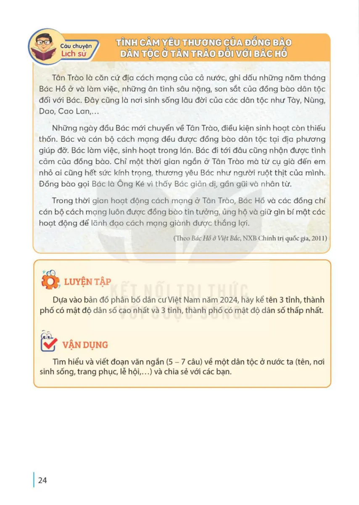
Câu chuyện DÂN TỘC Ơ TÂN TRÀO ĐÔI VỚI BÁC HỒ
Tên Tròo là căn cứ địa cách mạng của cỏ nước, ghi dếu những năm thóng
Bác Hồ ở và làm việc, những ôn tình sôu năng, son sốt của đồng bào dân tộc
đối với Đây cũng là nơi sinh sống lâu đời của céc dôn tộc như Tòy, Nùng,
Ddo, Cdơo
Những ngày đầu Béc mới chuyển về Tân Tròo, điều kiện sinh hoạt còn thiếu
thốn. Bác vò cén bộ cách mạng đều được đồng bòo dâên tộc tợi địa phương
giúp đỡ. Bác làm việc, sinh hoạt trong Bác tới đâu cũng nhộn được tình
cảm của đồng bào. Chỉ một thời gian ngắn ở Tên Trào mà từ cụ giò đến em
nhỏ di cũng hết sức kính trọng, thương yêu Bóc như người ruột thịt của mình.
Đồng bèo gọi Bóc là Ông Ké vì thấy Bác giỏn di, gần gũi vò từ.
Trong thời gian hoạt động cách ở Tên Trào, Bác Hồ và cóc đồng chí
cán bộ cách luôn được đồng bèo tin tưởng, ủng hộ và giữ gìn bí một các
hoạt động để lõnh đạo mọơng giònh được thống lợi.
(Theo Bác Hồ ở Việt Bắc, NXB Chính trị quốc gia, 2011)
TẬP
Dựa vào bản đồ phân bố dân cư Việt Nam năm 2024, hãy kể tên 3 tỉnh, thành
phố có mật độ dân số cao nhất và 3 tỉnh, thành phố có mật độ dân số thấp nhất.
VẬN DỤNG
Tìm hiểu và viết đoạn văn ngắn (5 - 7 câu) về một dân tộc ở nước ta (tên, nơi
sinh sống, trang phục, lễ hội,...) và chia sẻ với các bạn.
24
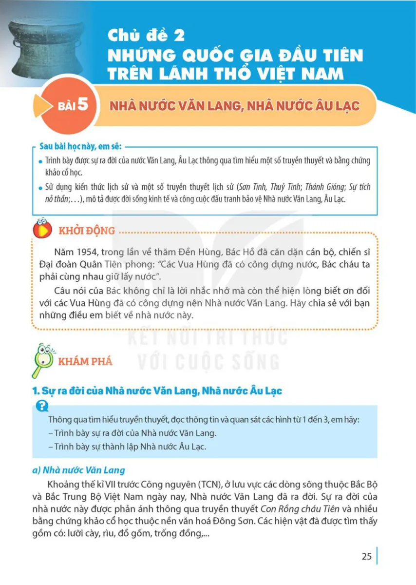
Chủ đề 2
NHỮNG QUỐC GIA ĐẦU TIÊN
TRÊN LANH THÔ NAM
NHÀ NƯỚC VĂN LANG, NHÀ NƯỚC ÂU LẠC
Sau bài học này, em sẽ:
e Trình bày được sự ra đời của nước Văn Lang, Âu Lạc thông qua tìm hiểu một số truyền thuyết và bằng chứng
khảo cổ học.
e Sử dụng kiến thức lịch sử và một số truyền thuyết lịch sử (Sơn Tỉnh, Thuỷ Tinh; Thánh Gióng; Sự tích
nỏ thân;. ..), mô tả được đời sống kinh tễ và công cuộc đấu tranh bảo vệ Nhà nước Văn Lang, Âu Lạc.
KHỞI ĐỘNG .
Năm 1954, trong lần về thăm Đền Hùng, Bác Hồ đã căn dặn cán bộ, chiến sĩ
Đại đoàn Quân Tiên phong: “Các Vua Hùng đã có công dựng nước, Bác cháu ta
phải cùng nhau giữ lấy nước”.
Câu nói của Bác không chỉ là lời nhắc nhở mà còn thể hiện lòng biết ơn đối
với các Vua Hùng đã có công dựng nên Nhà nước Văn Lang. Hãy chia sẻ với bạn
những điều em biết về nhà nước này.
KHÁM PHÁ VữI SũNG6
1. Sự ra đời của Nhà nước Văn Lang, Nhà nước Âu Lạc
Thông quatìm hiểu truyền thuyết, đọc thông tin và quan sát các hình từ 1 đến 3,em hãy:
~ Trình bày sự ra đời của Nhà nước Văn
~ Trình bày sự thành lập Nhà nước Âu Lạc.
a) Nhà nước Văn Lang
Khoảng thế kỉ VII trước Công nguyên (TCN), ở lưu vực các dòng sông thuộc Bắc Bộ
và Bắc Trung Bộ Việt Nam ngày nay, Nhà nước Văn Lang đã ra đời. Sự ra đời của
nhà nước này được phản ánh thông qua truyền thuyết Con Rồng cháu Tiên và nhiều
bằng chứng khảo cổ học thuộc nền văn hoá Đông Sơn. Các hiện vật đã được tìm thấy
gồm có: lưỡi cày, rìu, đồ gốm, trống đồng,...
25
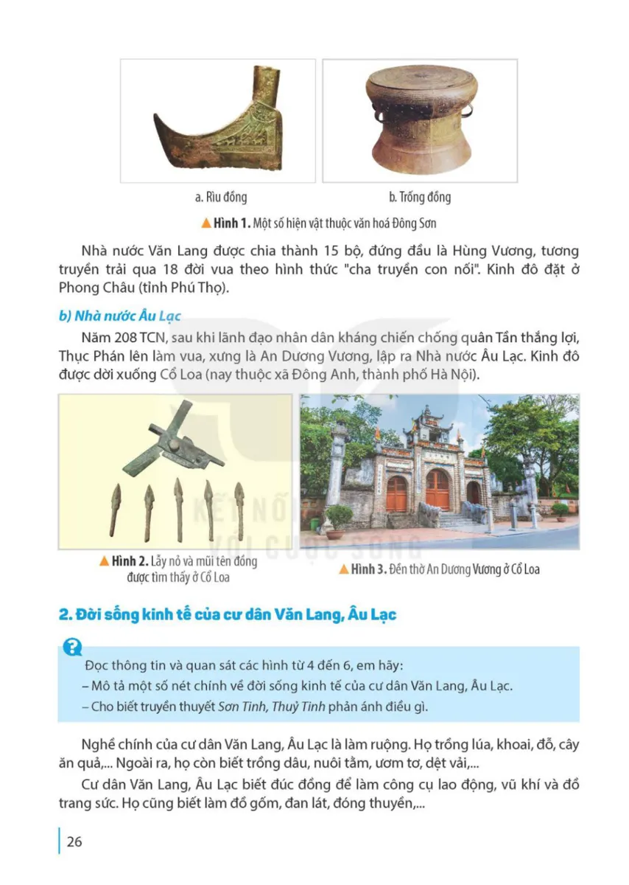
a. Rìu đồng b. Trống đồng
â Hình 1. Một số hiện vật thuộc văn hoá Đông Sơn
Nhà nước Văn Lang được chia thành 15 bộ, đứng đầu là Hùng Vương, tương
truyền trải qua 18 đời vua theo hình thức "cha truyền con nổi” Kinh đô đặt ở
Phong Châu (tỉnh Phú Thọ).
b) Nhà nước Âu Lạc
Năm 208 TCN, sau khi lãnh đạo nhân dân kháng chiến chống quân Tần thắng lợi,
Thục Phán lên làm vua, xưng là An Dương Vương, lập ra Nhà nước Âu Lạc. Kinh đô
được dời xuống Cổ Loa (nay thuộc xã Đông Anh, thành phố Hà Nội).
Nữ
Hình 2. Lẫy nỏ và mũi tên đồng Hình 3. Đền thờ An Dương Vương ở Cổ Loa
được tìm thấy ở Cổ Loa
2. Đời sông kinh tê của cư dân Văn Lang, Âu Lạc
Đọc thông tin và quan sát các hình từ 4 đến 6, em hãy:
— Mô tả một số nét chính về đời sống kinh tế của cư dân Văn Lang, Âu Lạc.
- Cho biết truyền thuyết Sơn Tỉnh, Thuỷ Tỉnh phản ánh điều qì.
Nghề chính của cư dân Văn Lang, Âu Lạc là làm ruộng. Họ trồng lúa, khoai, đỗ, cây
ăn quả,... Ngoài ra, họ còn biết trồng dâu, nuôi tằm, ươm tơ, dệt vải,...
Cư dân Văn Lang, Âu Lạc biết đúc đồng để làm công cụ lao động, vũ khí và đồ
trang sức. Họ cũng biết làm đồ gốm, đan lát, đóng thuyền,...
26
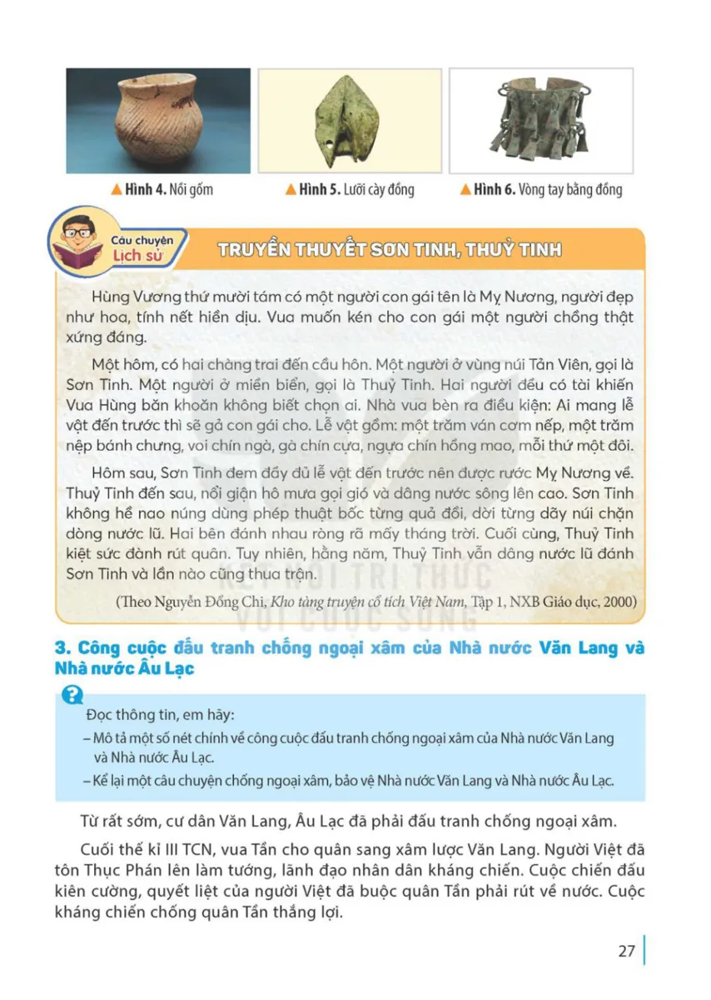
¿ Hình 4. Nổi gỗm Hình 5. Lưỡi cày đồng ¿ Hình 6. Vòng tay băng đồng
SƠN TÍNH; THỦY: TINH
Câu chuyên
Lịch sử
Hùng Vương thứ mười tám có một người con gói tên là My Nương, người đẹp
như hoa, tính nết hiền dịu. Vua muốn kén cho con gói một người chống thột
xứng
Một hôm, có hơi chàng trơi đến cầu hôn. Một người ở vùng núi Tản Viên, gọi lò
Sơn Tinh. Một người ở miền biển, gọi là Thuỷ Tỉnh. Hơi người đều có tòi khiến
Vua Hùng băn khoăn không biết chọn ơi. Nhà vua bèn ra điều kiện: Ai mang lễ
vột đến trước thì sẽ gỏ con gói cho. Lễ vệt gồm: một trăm ván cơm nếp, một trăm
Hôm sœu, Sơn Tỉnh đem đầy đủ lễ vệt đến trước nên được rước My Nương về.
Thuỷ Tỉnh đến sou, nổi giên hô mưa gọi gió và dâng nước sông lên cao. Sơn Tỉnh
không hề nao núng dùng phép thuật bốc từng quỏ đổi, dời từng dãy núi chặn
dòng nước lũ. Hơi bên đónh ròng rõ mấy thóng trời. Cuối cùng, Thuỷ Tỉnh
kiệt sức đònh rút quôn. Tuy nhiên, hằng năm, Thuỷ Tinh vễn dâng nước lũ đónh
Sơn Tinh và lần nào cũng thua trên.
(Theo Nguyễn Chỉ, Kho tàng truyện cổ tích Việt Nam, Tập 1, ÌNXB Giáo dục, 2000)
3. Công cuộc đâu tranh chông ngoại xâm của Nhà nước Văn Lang vâ
Nhâ nước Âu Lạc
Đọc thông tin, em hãy:
= Mô tả một số nét chính về công cuộc đấu tranh chống ngoại xâm của Nhà nước Văn Lang
và Nhà nước Âu Lạc.
~ Kể lại một câu chuyện chống ngoại xâm, bảo vệ Nhà nước Văn Lang và Nhà nước Âu Lạc.
Từ rất sớm, cư dân Văn Lang, Âu Lạc đã phải đấu tranh chống ngoại xâm.
Cuối thế kỉ III TCN, vua Tân cho quân sang xâm lược Văn Lang. Người Việt đã
tôn Thục Phán lên làm tướng, lãnh đạo nhân dân kháng chiến. Cuộc chiến đấu
kiên cường, quyết liệt của người Việt đã buộc quân Tần phải rút về nước. Cuộc
kháng chiến chống quân Tần thắng lợi.
27
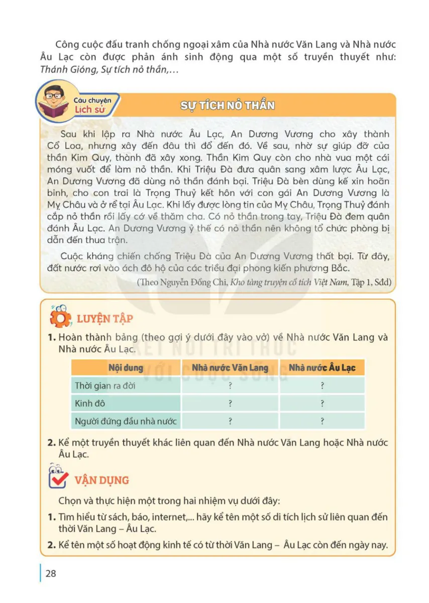
Công cuộc đấu tranh chống ngoại xâm của Nhà nước Văn Lang và Nhà nước
Âu Lạc còn được phản ánh sinh động qua một số truyền thuyết như:
Thánh Gióng, Sự tích nỏ thần,...
Cau chuyện SỬ TÍCH NO THÂN
Lịch sử
Sau khi lập ra Nhà nước Âu Lọc, An Dương Vương cho xôy thònh
Cổ Loa, nhưng xây đến đêu thì đổ đến đó. Về sau, nhờ sự giúp đỡ
thần Kim Quy, thành đã xêy xong. Thồn Kim Quy còn cho nhà vua một cới
móng vuốt để làm nô thần. Khi Triệu Đà đưa quên sang xâm lược Âu Lợc,
An Dương Vương đã dùng nỏ thần Triệu Đà bèn dùng kể xin
binh, cho con troi là Trọng Thuỷ kết hôn với con gói An Dương Vương lò
My Chêu và ở rể tợi Âu Lạc. Khi lếy được lòng tin của My Chêu, Trọng Thuỷ đónh
cắp nỏ thần rồi lốếy cớ về thăm chơ. Có nỏ thần trong toy, Triệu Đà đem quên
đónh Âu Lạc. An Dương Vương ÿ thế có nỏ thần nên không tổ chức phòng bị
dẫn đến thua trộn.
Cuộc khóng chiến chống Triệu Đò của Ấn Dương Vương thốt bợi. Từ đôy,
đốt nước rơi vòo ách đô hộ của các triều đợi phong kiến phương Bắc.
(Theo Nguyễn Đổng Chỉ, Kho tàng truyện cổ tích Việt Nam, Tập 1, Sảd)
LUYỆN TẬP
1. Hoàn thành bảng (theo gợi ý dưới đây vào vở) về Nhà nước Văn Lang và
Nhà nước Âu Lạc.
Nội dung Nhâ nước Văn Lang Nhà nước Âu Lạc
Thời gian ra đời
Kinh đô
Người đứng đầu nhà nước
2. Kể một truyền thuyết khác liên quan đến Nhà nước Văn Lang hoặc Nhà nước
Âu Lạc.
VẬN DỤNG
Chọn và thực hiện một trong hai nhiệm vụ dưới đây:
1. Tìm hiểu từ sách, báo, internet,... hãy kể tên một số di tích lịch sử liên quan đến
thời Văn Lang - Âu Lạc.
2. Kể tên một số hoạt động kinh tế có từ thời Văn Lang - Âu Lạc còn đến ngày nay.
28
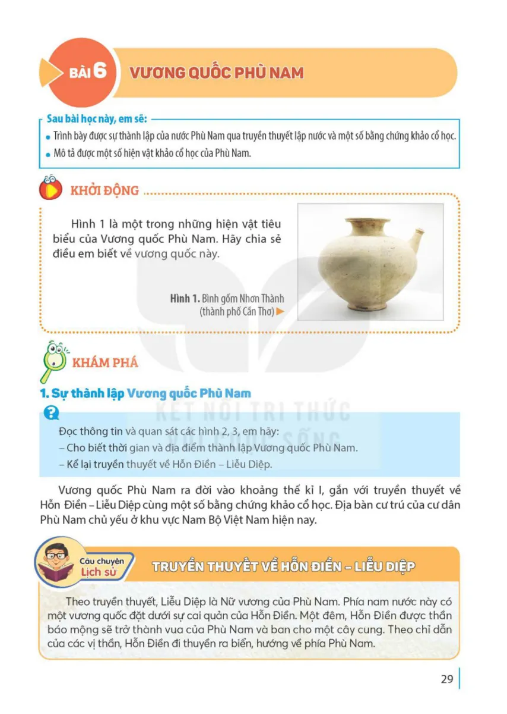
VƯƠNG QUỐC PHÙ NAM
Sau bài học này, em sẽ:
ø Trình bày được sự thành lập của nước Phù Nam qua truyền thuyết lập nước và một số bằng chứng khảo cổ học.
Mô tả được một số hiện vật khảo cổ học của Phù Nam.
KHỞI ĐÔNG
Hình 1 là một trong những hiện vật tiêu
biểu của Vương quốc Phù Nam. Hãy chia sẻ
điều em biết về vương quốc này.
Hình 1. Bình gốm Nhơn Thành
(thành phố Cần Thơ)
KHÁM PHÁ
1. Sự thành lập Vương quôc Phù Nam
Đọc thông tin và quan sát các hình 2, 3, em hãy:
- Cho biết thời gian và địa điểm thành lập Vương quốc Phù Nam.
- Kể lại truyền thuyết về Hỗn Điền - Liễu Diệp.
Vương quốc Phù Nam ra đời vào khoảng thế kỉ I, gắn với truyền thuyết về
Hỗn Điền - Liễu Diệp cùng một số bằng chứng khảo cổ học. Địa bàn cư trú của cư dân
Phù Nam chủ yếu ở khu vực Nam Bộ Việt Nam hiện nay.
Côu chuyên TRUYÊN VỀ HỒN LIÊU DIỆP
Lịch sử
Theo truyền thuyết, Liễu Diệp là Nữ vương của Phù Nam. Phía nam nước nòy có
một vương quốc đặt dưới sự coi quẻn củo Hỗn Điền. Một đêm, Hỗn Điền được thần
bóo mộng sẽ trở thành vuo của Phù Nam vò bœn cho một côy cung. Theo chỉ dẫn
củc cóc vị thần, Hỗn Điền đi thuyền ro biển, hướng về phía Phù Nam.
29
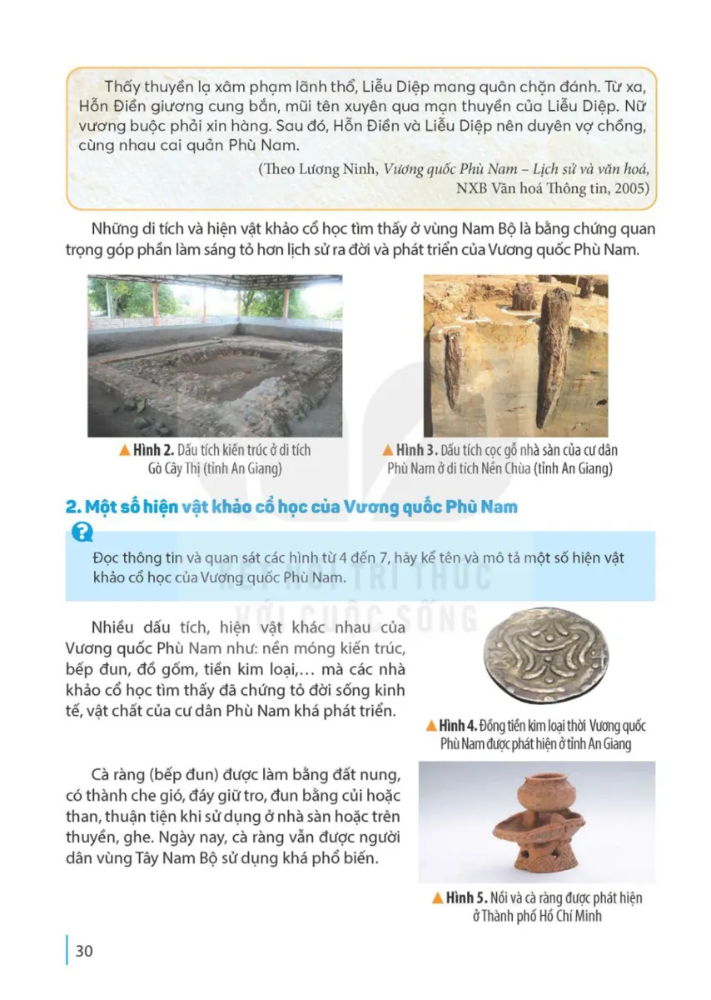
Thấy thuyền lạ xâm phạm lõnh thổ, Liễu Diệp mang quên chặn đónh. Từ xo,
Hỗn Điền giương cung bắn, mũi tên xuyên quơ mọn thuyền củo Liễu Diệp. Nữ
vương buộc phải xin hàng. Sau đó, Hỗn Điền và Liễu Diệp nên duyên vợ chồng,
cùng cdơi quỏn Phù Nam.
(Theo Lương Ninh, Vương quốc Phù Nam - Lịch sử và văn hoá,
NXB Văn hoá Thông tin, 2005)
Những di tích và hiện vật khảo cổ học tìm thấy ở vùng Nam Bộ là bằng chứng quan
trọng góp phần làm sáng tỏ hơn lịch sử ra đời và phát triển của Vương quốc Phù Nam.
á Hình 2. Dấu tích kiến trúc ở di tích Hình 3. Dấu tích cọc gỗ nhà sàn của cư dân
Gò Cây Thị (tỉnh An Giang) Phù Nam ở di tích Nền Chùa (tỉnh An Giang)
2. Một số hiện vật khảo cổ học của Vương quốc Phù Nam
Đọc thông tin và quan sát các hình từ 4 đến 7, hãy kể tên và mỏ tả một số hiện vật
khảo cổ học của Vương quốc Phù Nam.
INB
Nhiều dấu tích, hiện vật khác nhau của
Vương quốc Phù Nam như: nền móng kiến trúc,
bếp đun, đồ gốm, tiền kim loại,... mà các nhà
khảo cổ học tìm thấy đã chứng tỏ đời sống kinh
tế, vật chất của cư dân Phù Nam khá phát triển.
á. Hình 4. Đồng tiền kim loại thời Vương quốc
Phù Nam được phát hiện ởtỉnh An Giang
Cà ràng (bếp đun) được làm bằng đất nung,
có thành che gió, đáy giữ tro, đun bằng củi hoặc
than, thuận tiện khi sử dụng ở nhà sàn hoặc trên
thuyền, ghe. Ngày nay, cà ràng vẫn được người
dân vùng Tây Nam Bộ sử dụng khá phổ biến.
â Hình 5. Nôi và cà ràng được phát hiện
ở Thành phố Hồ Chí Minh
30
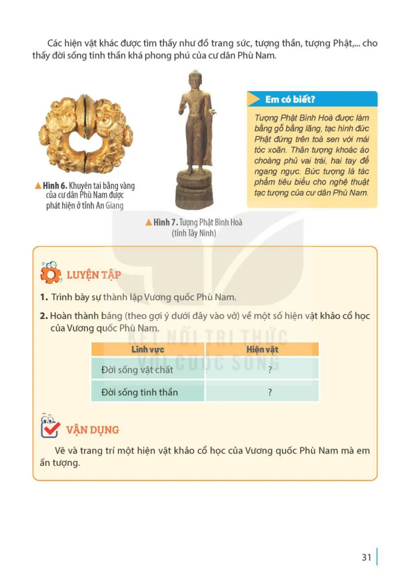
Các hiện vật khác được tìm thấy như đồ trang sức, tượng thần, tượng Phật,... cho
thấy đời sống tinh thần khá phong phú của cư dân Phù Nam.
Em có biết?
Tượng Phật Bình Hoà được làm
bằng gỗ bằng lăng, tạc hình đức
Phật đúng trên toà sen với mái
tóc xoăn. Thân tuọng khoác áo
choàng phủ vai trái, hai tay để
ngang ngực. Bức tượng là tác
â Hình 6. Khuyên tai băng vàng phâm tiêu biêu cho nghệ thuật
của cư dân Phù Nam được tạc tượng của cư dân Phù Nam.
phát hiện ở tỉnh An 6iang
Hình 7. lượng Phật Bình Hoà
(tinh lây Ninh)
LUYỆN TẬP
1. Trình bày sự thành lập Vương quốc Phù Nam.
2. Hoàn thành bảng (theo gợi ý dưới đây vào vở) về một số hiện vật khảo cổ học
của Vương quốc Phù Nam.
Lĩnh vực Hiện vật
Đời sống vật chất
Đời sống tinh thần
VẬN DỤNG
Vẽ và trang trí một hiện vật khảo cổ học của Vương quốc Phù Nam mà em
ấn tượng.
3]
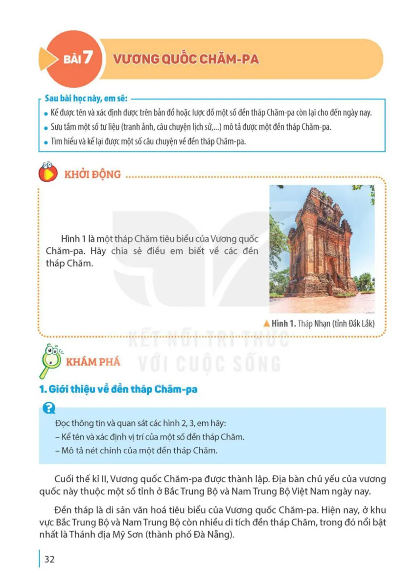
VƯƠNG QUỐC CHĂM-PA
Sau bài học này, em sẽ:
e Kể được tên và xác định được trên bản đồ hoặc lược đồ một số đền tháp Chăm-pa còn lại cho đến ngày nay.
ø 5ưU tầm một số tư liệu (tranh ảnh, câu chuyện lịch sử,...) mô tả được một đền tháp Chăm-pa.
Tìm hiểu và kể lại được một số câu chuyện về đền tháp Chăm-pa.
KHỞI ĐỘNG
Hình 1 là một tháp Chăm tiêu biểu của Vương quốc
Hãy chia sẻ điều em biết về các đến
tháp Chăm.
â. Hình 1. [háp Nhạn (tỉnh Đắk Lắk)
KHÁM
PHÁ VữI puUñ0
1. Giới thiệu về đến tháp Chăm-pa
Đọc thông tin và quan sát các hình 2, hãy:
~ Kế tên và xác định vị trí của một số đến tháp Chăm.
~ Mô tả nét chính của một đền tháp Chăm.
Cuối thế kỉ quốc Chăm-pa được thành lập. Địa bàn chủ yếu của vương
Đền tháp là di sản văn hoá tiêu biểu của Vương quốc Chăm-pa. Hiện nay, ở khu
vực Bắc Trung Bộ và Nam Trung Bộ còn nhiều di tích đền tháp Chăm, trong đó nổi bật
nhất là Thánh địa Mỹ Sơn (thành phố Đà Nẵng).
32
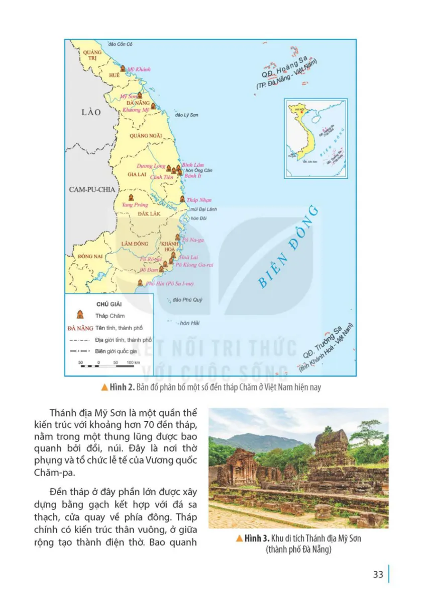
'đáo Côn Cỏ
\ QUẢNG)`
TRỊ.
Khánh
HUẾ.
ĐÀ NẴNG,
LÀO Mỹ'
QUẢNG NGÃI
: hỏn Ông Căn
GIÁ LAI Cành Tiên.
CAM-PU-CHIA
Tháp Nhạn
ĐẮK LẮK
mũi Đại Lãnh
LẮM ĐÔNG
HOÀ
ĐỒNG NAI đloà Lai
Klong Ga-rai “
's đáo Phú Quý
CHỦ GIẢI
Tháp Chăm
- hỏn Hải
ĐÀ NẴNG Tên tỉnh, thành phố
Địa giới tỉnh, thành phố ' NŨI TRI THỨP
Biên giới quốc gia
TÔ km
A Hình 2. Bản đồ phân bố một số đến tháp Chăm ở Việt Nam hiện nay
Thánh địa Mỹ Sơn là một quần thể
kiến trúc với khoảng hơn 70 đền tháp,
nằm trong một thung lũng được bao
quanh bởi đổi, núi. Đây là nơi thờ
phụng và tổ chức lễ tế của Vương quốc
Chăm-pa.
Đền tháp ở đây phần lớn được xây
dựng bằng gạch kết hợp với đá sa
thạch, cửa quay về phía đông. Tháp
chính có kiến trúc thân vuông, ở giữa
rộng tạo thành điện thờ. Bao quanh â Hình 3. Khu di tích Thánh địa Mỹ Sơn
(thành phố Đà Nẵng)
33
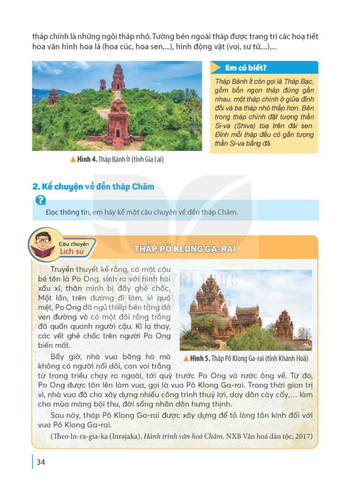
tháp chính là những ngôi tháp nhỏ. Tường bên ngoài tháp được trang trí các hoạ tiết
hoa văn hình hoa lá (hoa cúc, hoa sen,...), hình động vật (voi, sư tử,...),...
Em có biết?
Tháp Bánh Ít còn gọi là Tháp Bạc,
gỗm bôn ngọn tháp đứng gân
nhau, một tháp chính ở giữa đỉnh
đôi và ba tháp nhỏ thâp hơn. Bên
trong tháp chính đặt tuọng thân
Si-va (Shiva) toạ trên đài sen.
Đỉnh mỗi tháp đều có gắn tượng
thân Si-va bằng đá.
â Hình 4. [háp Bánh Ít (tỉnh Gia Lai)
2. Kể chuuện về đền tháp Chăm
Đọc thông tin, em hãy kể một câu chuyện về đền tháp Chăm.
Câu chuyên THẤP POKUONG GA-RAI
Truyền thuyết kể rằng, có một cậu
bé tên là Po Ong, sinh ra với hình hài
xếu xí, thân mình bị đầy ghẻ chốc.
Một lần, trên đường đi lòm, vì qué
mệt, Po Ong đố ngủ thiếp bên tảng đó
ven đường vè có một đôi rồng trắng
đã quốn quanh người cậu. Kì lạ thoy,
các vết ghẻ chốc trên người Po Ong
biến
Bấy giờ, nhà vua băng hà mà â Hình 5. Tháp Pô Klong 6a-rai (tỉnh Khánh Hoà)
không có người nối dõi, con voi trắng
từ trong triều chạy ra ngoòi, tới quỳ trước Po Ong vò rước ông về. Từ đó,
Po được tôn lên làm vug, gọi là vua Pô Klong Go-roi. Trong thời gian trị
vì, nhà vua đã cho xây dựng nhiều công trình thuỷ lợi, dạy dân cày cấy,... làm
cho mùa màng bội thu, đời sống nhân dên hưng thịnh.
Squ này, thép Pô Klong Ga-roi được xêy dựng để tỏ lòng tôn kính đếi với
vud Pô Klong Ga-roi.
(Theo In-ra-gia-ka (Inrajaka), Hành trình văn hoá Chăm, NXB Văn hoá dần tộc, 2017)
34
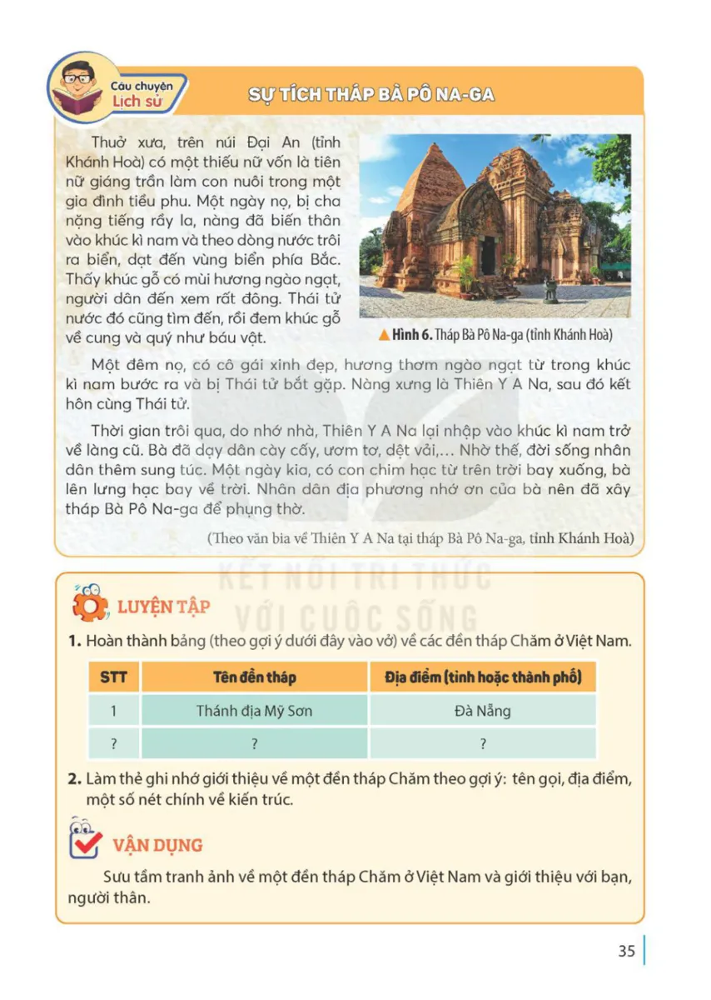
Cáu chuyện SỬ TÍCH THAPBAPONA-GA
Lịch sử
Thuở xưo, trên núi Đợi An (tỉnh
Khánh Hoà] có một thiếu nữ vốn lờ tiên
nữ gióng trần làm con nuôi trong một
gio đình tiểu phu. Một ngòy nọ, bị chơ
nặng tiếng rấy lq, nàng đã biến thôn
vòo khúc kì nam vò theo dòng nước trôi
ra biển, dạt đến vùng biển phía Bắc.
Thếy khúc gỗ có mùi hương ngòo ngọt,
người dôn đến xem rốt đông. Thói tử
nước đó cũng tìm đến, rồi đem khúc gỗ
về cung vò quý như báu vột. Hình 6. [háp Bà Pô Na-da (tỉnh Khánh Hoà)
Một đêm nọ, có cô gói xinh đẹp, hương thơm ngòo ngọt từ trong khúc
kì nam bước ro vò bị Thái tử bắt gặp. Nòng xưng lò Thiên Y A No, sau đó kết
hôn cùng Thói tử.
Thời gian trôi do nhớ nhà, Thiên Y A No lợi nhập vào khúc kì nam trở
về làng cũ. Bà đã dạy dân cày cấy, ươm tơ, dệt vỏi,... Nhờ thế, đời sống nhân
dôn thêm sung túc. Một ngòy có con chim từ trên trời bay xuống, bò
lên lưng học boy về trời. Nhân dôn địa phương nhớ ơn của bà nên đỗ xây
tháp Bò Pô để phụng thờ.
(Theo văn bia về Thiên Y A Na tại tháp Bà Pô Na-ga, tỉnh Khánh Hoà)
LUYỆN TẬP VfI SñNR
1. Hoàn thành bảng (theo gợi ý dưới đây vào vở) về các đền tháp Chăm ở Việt Nam.
Tên đền tháp Địa điểm (tỉnh hoặc thành phô]
STT
Thánh địa Mỹ Sơn Đà Nẵng
2. Làm thẻ ghi nhớ giới thiệu về một đền tháp Chăm theo gợi ý: tên gọi, địa điểm,
một số nét chính về kiến trúc.
VẬN DỤNG
Sưu tầm tranh ảnh về một đền tháp Chăm ở Việt Nam và giới thiệu với bạn,
người thân.
35
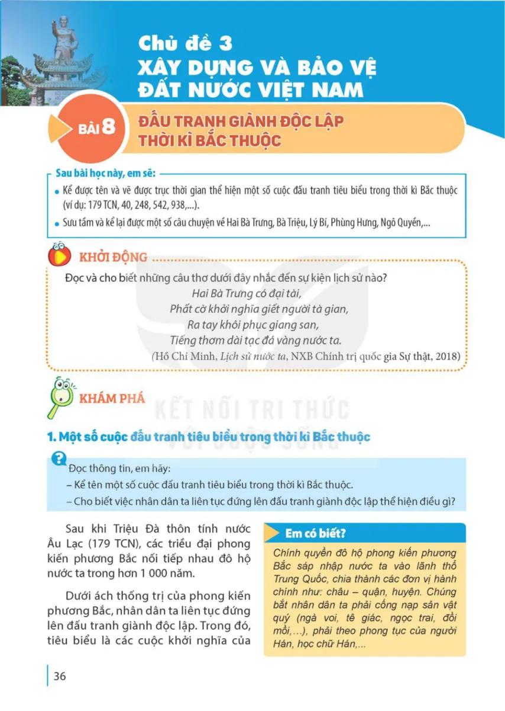
Chủ đề 3
XÂY DƯNG VÀ BAO VẼ
ĐẤT NƯỚC VIỆT NAM
ĐẦU TRANH GIÀNH ĐỘC LẬP
THỜI KỈ BẮC THUÔC
Sau bài học này, em sẽ:
e Kể được tên và vẽ được trục thời gian thể hiện một số cuộc đấu tranh tiêu biểu trong thời kì Bắc thuộc
(ví dụ: 179 TLN, 40, 248, 542, 936,...).
» Sưu tầm và kể lại được một số câu chuyện về Hai Bà Irưng, Bà Iriệu, Lý Bí, Phùng Hưng, Ngô Quyền,...
KHƠI ĐỘNG
Đọc và cho biết những câu thơ dưới đây nhắc đến sự kiện lịch sử nào?
Hai Bà Trưng có đại tài,
Phất cờ khởi nghĩa giết người tà gian,
Ra tay khôi phục giang san,
Tiếng thơm dài tạc đá vàng nước ta.
(Hồ Chí Minh. Lịch sử nước ta, NXB Chính trị quốc gia Sự thật, 2018)
KHÁM PHÁ KẾT NỔI TRI THỨP
1. Một sô cuộc đầu tranh tiêu biểu trong thời kì Bắc thuộc
'Đọc thông tin, em hãy:
~ Kể tên một số cuộc đấu tranh tiêu biểu trong thời kì Bắc thuộc.
- Cho biết việc nhân dân ta liên tục đứng lên đấu tranh giành độc lập thể hiện điều gì?
Sau khi Triệu Đà thôn tính nước
Em có biết?
Âu Lạc (179 TCN), các triều đại phong
Chính quyên đô hộ phong kiến phương
kiến phương Bắc nối tiếp nhau đô hộ
Bắc sáp nhập nước ta vào lãnh thỗ
nước ta trong hơn 1 000 năm.
Trung Quốc, chia thành các đơn vị hành
Dưới ách thống trị của phong kiến chính như: châu — quận, huyện. Chúng
phương Bắc, nhân dân ta liên tục đứng
bắt nhân dân ta phải công nạp sản vật
quý (ngà VOI, tê giác, ngọc trai, đồi
lên đấu tranh giành độc lập. Trong đó, môi,...), phải theo phong tục của người
tiêu biểu là các cuộc khởi nghĩa của Hán. học chữ Hián,...
36
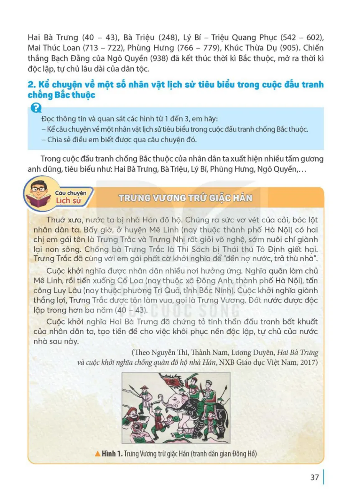
Hai Bà Trưng (40 - 43), Bà Triệu (248), Lý Bí - Triệu Quang Phục (542 - 602),
Mai Thúc Loan (713 - 722), Phùng Hưng (766 - 779), Khúc Thừa Dụ (905). Chiến
thắng Bạch Đằng của Ngô Quyền (938) đã kết thúc thời kì Bắc thuộc, mở ra thời kì
độc lập, tự chủ lâu dài của dân tộc.
2. Kể chuuện về một số nhân vật lịch sử tiêu biểu trong cuộc đâu tranh
chồng Bắc thuộc
Đọc thông tin và quan sát các hình từ 1 đến 3, em hãy:
~ Kể câu chuyện về một nhân vật lịch sử tiêu biểu trong cuộc đấu tranh chống Bắc thuộc.
- Chia sẻ điều em biết được qua câu chuyện đó.
Trong cuộc đấu tranh chống Bắc thuộc của nhân dân ta xuất hiện nhiều tấm gương
anh dũng, tiêu biểu như: Hai Bà Trưng, Bà Triệu, Lý Bí, Phùng Hưng, Ngô Quyền,...
Củu chuyện TRỪNG VƯƠNG TRỪ
Thuở xưo, nước ta bị nhà Hón đô hộ. Chúng ra sức vơ vét của cỏi, bóc lột
nhôn dên Bếy giờ, ở huyện Mê Linh (nay thuộc thành phố Hà Nội) có hoi
chị em gói tên là Trưng Trắc và Trưng Nhị rốt giỏi võ nghệ, sớm nuôi chí giành
lại non sông. Chồng bò Trưng Trốc lờ Thi Sóch bị Thới thú Tô Định giết hại.
Trưng Trắc cùng với em gói phốt cờ khởi nghĩa để “đền nợ nước, trỏ thù nhò”.
Cuộc khởi nghĩa được nhên dên nhiều nơi hưởng ứng. Nghĩa quên làm chủ
Mê Linh, rồi tiến xuống Cổ Loa (ngay thuộc xẽ Đông Anh, thành phố Hà Nội), tấn
công Luy Lêu (nay thuộc phường Trí Quả, tỉnh Bốc Ninh). Cuộc khởi nghĩa giành
thắng lợi, Trưng Trắc được tôn làm vuø, gọi là Trưng Vương. Đốt nước được độc
lập trong hơn ba năm (40 - 43).
Cuộc khởi nghĩa Hai Bà Trưng đỗ chứng tỏ tinh thần đếu tranh bất khuốt
của nhôên dên to, tạo tiền đề cho việc khôi phục nền độc lập, tự chủ của nước
nhà sau nòy.
(Theo Nguyễn Thi, Thành Nam, Lương Duyên, Hai Bà Trưng
và cuộc khởi nghĩa chống quân đô hộ nhà Hán, ÄNXB Giáo dục Việt Nam, 2017)
Hình 1. Irưng Vương trừ giặc Hán (tranh dân gian Đông Hổ)
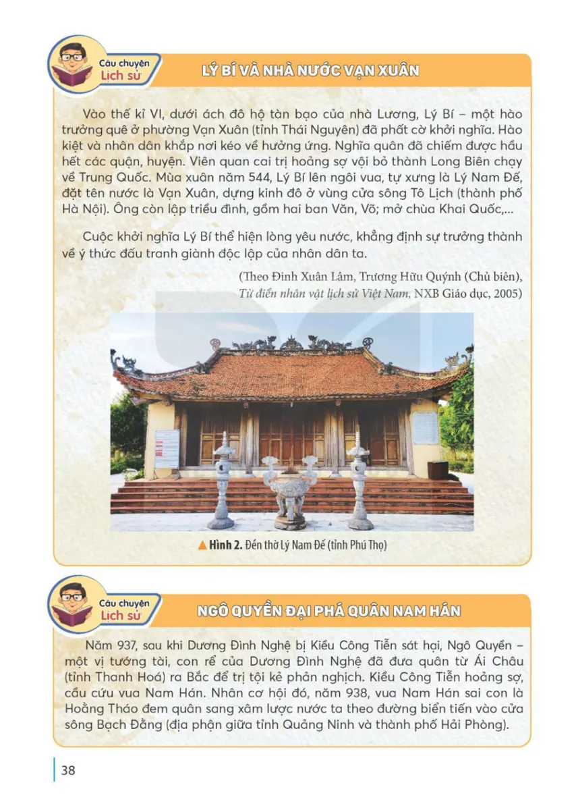
Cau chuyện LÝ.BÍ NHÀ NƯỚC VẤN XUÂN
Lịch sử:
Vào thế kỉ VI, dưới ách đô hộ tòn bạo của Lương, Lý Bí - một hào
trưởng quê ở phường Vợn Xuên (tỉnh Thái Nguyên) đã phết cờ khởi nghĩa. Hào
kiệt và nhân dân khắp nơi kéo về hưởng ứng. Nghĩa quên đã chiếm được
hết các quộn, huyện. Viên quan coi trị hoồng sợ vội bỏ thònh Long Biên chạy
về Trung Quốc. Mùa xuên năm 544, Lý Bí lên ngôi vua, tự xưng là Lý Nam Đế,
đặt tên nước là Vạn Xuôn, dựng kinh đô ở vùng sông Tô Lịch (thành phố
Hà Nội). Ông còn lộp triều đình, gồm hai Văn, Võ; mở chùa Quốc,...
Cuộc khởi nghĩa Lý Bí thể hiện lòng yêu nước, khẳng định sự trưởng thành
về ý thức đếu tranh giònh độc lập của nhôn dân ta.
(Theo Định Xuân Lâm, Trương Hữu Quýnh (Chủ biên),
Từ điển nhân vật lịch sử Việt Nam, NXB Giáo dục, 2005)
â Hình 2. Đền thờ Lý Nam Đế (tỉnh Phú Thọ)
Cau chuyện
Lịch sử.
Năm 937, sau khi Dương Đình Nghệ bị Kiều Công Tiễn sét hợi, Ngô Quyền -
một vị tướng tòi, con rể của Dương Đình Nghệ đã đưa quên từ Ái Châu
(tỉnh Thanh Ho4é) ra Bắc để trị tội kẻ phỏn nghịch. Kiều Công Tiễn hoảng sợ,
cầu cứu vua Nam Hón. Nhân cơ hội đó, năm 938, vua Nam Hón soi con lò
Hoằng Théo đem quên lược nước ta theo đường biển tiến vào cửa
sông Bạch Đẳng (địa phận giữa tỉnh Quảng Ninh vò thành phế Hải Phòng).
38
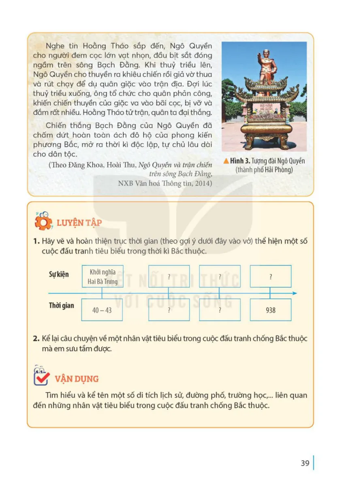
Nghe tin Hoằng Thóo sắp đến, Ngô Quyền
cho người đem cọc lớn vợt nhọn, đều bịt sắt đóng
ngầm trên sông Bạch Đằng. Khi thuỷ triều lên,
Ngô Quyền cho thuyền ra khiêu chiến rồi giỏ vờ thua
vò rút chạy để dụ quên giặc vòo trộn địa. Đợi lúc
thuỷ triều xuống, ông tổ chức cho quôn phỏn công,
khiến chiến thuyền của giặc vơ vèo bối cọc, bị vỡ và
đắm rốt nhiều. Hoằng Thóo tử trộn, quôn to đợi thắng.
Chiến thắng Bạch Đằng của Ngô Quyền đã
chấm dứt hoàn toàn óch đô hộ của phong kiến
phương Bắc, mở rd thời kì độc lệp, tự chủ lêu dời
cho tộc.
¿ Hình 3. Tượng đài Ngô Quyền
(Theo Đăng Khoa, Hoài Thu, Ngô Quyền và trận chiến
(thành phố Hải Phòng)
trên sông Bạch Đằng,
NXB Văn hoá Thông tin, 2014)
LUYỆN TẬP
1. Hãy vẽ và hoàn thiện trục thời gian (theo gợi ý dưới đây vào vở) thể hiện một số
cuộc đấu tranh tiêu biểu trong thời kì Bắc thuộc.
Sựkiện Khởi nghĩa
Hai Bà Irưng
Thời gian
40—43 038
2. Kể lại câu chuyện về một nhân vật tiêu biểu trong cuộc đấu tranh chống Bắc thuộc
mà em sưu tầm được.
VẬN DỤNG
Tìm hiểu và kể tên một số di tích lịch sử, đường phố, trường học,... liên quan
đến những nhân vật tiêu biểu trong cuộc đấu tranh chống Bắc thuộc.
39
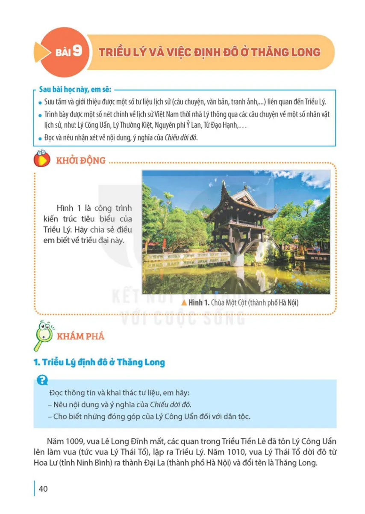
Sau bài học này, em sẽ:
ø Sưu tầm và giới thiệu được một số tư liệu lịch sử (câu chuyện, văn bản, tranh ảnh,...) liên quan đến Triều Lý.
s bày được một số nét chính về lịch sử Việt Nam thời nhà Lý thông qua các câu chuyện về một số nhân vật
lịch sử, như: Lý Công Uẩn, Lý Thường Kiệt, Nguyên phi Ÿ Lan, Từ Đạo Hạnh,....
» Đọc và nêu nhận xét về nội dung, ý nghĩa của Chiếu đời đô.
KHỞI ĐỘNG
Hình 1 là công trình
kiến trúc tiêu biểu của
Triều Lý. Hãy chia sẻ điều
em biết về triều đại này.
KẾT á Hình 1. Chùa Một Cột (thành phố Hà Nội)
KHÁM PHÁ
1. Triều Lúũ định đô ở Thăng Long
Đọc thông tin và khai thác tư liệu, em hãy:
- Nêu nội dung và ý nghĩa của Chiếu đời đô.
- Cho biết những đóng góp của Lý Công Uẩn đối với dân tộc.
Năm 1009, vua Lê Long Đĩnh mất, các quan trong Triều Tiền Lê đã tôn Lý Công
lên làm vua (tức vua Lý Thái Tổ), lập ra Triều Lý. Năm 1010, vua Lý Thái Tổ dời đô từ
Hoa Lư (tỉnh Ninh Bình) ra thành Đại La (thành phố Hà Nội) và đổi tên là Thăng Long.
40
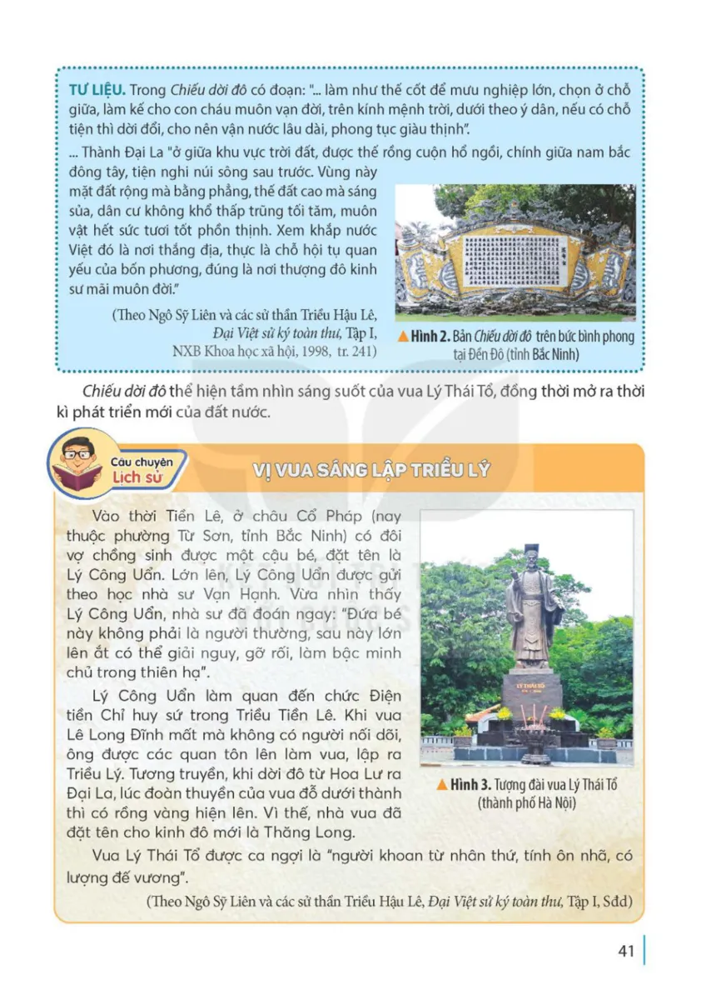
TƯ LIỆU. Trong Chiếu đời đô có đoạn: ".. làm như thế cốt để mưu nghiệp lớn, chọn ở chỗ
giữa, làm kế cho con cháu muôn vạn đời, trên kính mệnh trời, dưới theo ý dân, nếu có chỗ
tiện thì dời đổi, cho nên vận nước lâu dài, phong tục giàu thịnh”
.. Thành Đại La "ở giữa khu vực trời đất, được thế rồng cuộn hổ ngồi, chính giữa nam bắc
đông tây, tiện nghỉ núi sông sau trước. Vùng này
mặt đất rộng mà bằng phẳng, thế đất cao mà sáng
sủa, dân cư không khổ thấp trũng tối tăm, muôn
vật hết sức tươi tốt phồn thịnh. Xem khắp nước
Việt đó là nơi thẳng địa, thực là chỗ hội tụ quan
yếu của bốn phương, đúng là nơi thượng đô kinh
sự mãi muôn đời”
(Theo Ngô Sỹ Liên và các sử thần Triểu Hậu Lê,
Đại Việt sử ký toàn Tập T, ¿. Hình 2. Bản (hiếu đời đô trên bức bình phong
NXB Khoa học xã hội, 1998, tr. 241) tại Đên Đô (tinh Bác Ninh)
Chiếu đời đô thể hiện tầm nhìn sáng suốt của vua Lý Thái Tổ, đồng thời mở ra thời
kì phát triển mới của đất nước.
Vị VŨA SANG LẬP TRIÊU LÝ.
Câu chuyên
Lịch sử
Vòo thời Tiền Lê, ở châu Cổ Phép
thuộc phường Từ Sơn, tỉnh Bắc Ninh} có đôi
vợ chống sinh được một cậu bé, đặt tên lò
Lý Công Uốn. Lớn lên, Lý Công Uẩn được gửi
theo học nhà sư Vọn Vừa nhìn thếy
Lý Công Uẩn, nhà sư đã đoén ngoy: "Đứo bé
này không phải lờ người thường, sau này lớn
lên ắt có thể giỏi nguy, gỡ rối, làm bộc minh
chủ trong thiên hạ”.
LÝ THÁI TỔ
Lý Công Uẩn làm quœn đến chức Điện
tiền Chỉ huy sứ trong Triểu Tiền Lê. Khi
Lê Long Đĩnh mốt mà không có người nối dõi,
ông được cóc quœn tôn lên làm vuo, lệp rd
Lý. Tương khi dời đô từ Hoa Lư rơ
Hình 3. lượng đài vua Lý Thái Tổ
Đại La, lúc đoàn thuyền của vua đỗ dưới thònh
(thành phố Hà Nội)
thì có rồng vòng hiện lên. Vì thế, nhà vua đõ
đặt tên cho kinh đô mới lờ Thăng Long.
Vuo Lý Thói Tổ được cd ngợi là “người khoan từ nhôn thứ, tính ôn có
lượng đế vương”.
(Theo Ngô Sỹ Liên và các sử thần Triều Hậu Lê, Đại Việt sử ký toàn Tập Sảd)
41
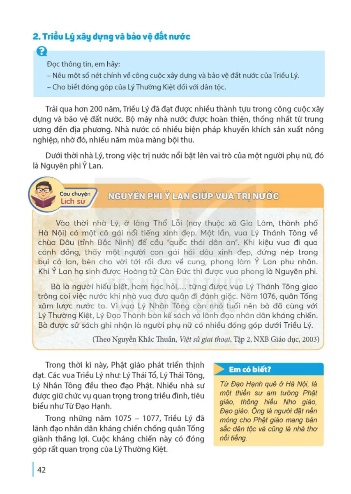
2. Triều Lũ xâu dựng vả bảo vệ nước
Đọc thông tin, em hãy:
= Nêu một số nét chính về công cuộc xây dựng và bảo vệ đất nước của Triều Lý.
~ Cho biết đóng góp của Lý Thường Kiệt đối với dân tộc.
Trải qua hơn 200 năm, Triều Lý đã đạt được nhiều thành tựu trong công cuộc xây
dựng và bảo vệ đất nước. Bộ máy nhà nước được hoàn thiện, thống nhất từ trung
ương đến địa phương. Nhà nước có nhiều biện pháp khuyến khích sản xuất nông
nghiệp, nhờ đó, nhiều năm mùa màng bội thu.
Dưới thời nhà Lý, trong việc trị nước nổi bật lên vai trò của một người phụ nữ, đó
là Nguyên phi Ý Lan.
Côu chuyện
chuyện.
Lịch sử:
Vào thời nhà Lý, ở làng Thổ Lỗi thuộc xõ Gia Lâm, phố
Hà Nội) có một cô gói nổi tiếng xinh đẹp. Một lần, vua Lý Thénh Tông về
chùa Dêu (tỉnh Bắc Ninh) để cầu “quốc thói dân œn”. Khi kiệu vua đi qua
cánh đồng, thấy một người con gói hói dâu xinh đẹp, đứng nép trong
bụi cỏ lan, bèn cho vời tới rồi đưa về cung, phong làm Ÿ Lan phu nhôn.
Khi Ỷ Lan hạ sinh được Hoàng tử Còn Đức thì được vua phong là Nguyên phi.
Bè là người hiểu biết, ham học hỏi,... từng được vuo Lý Thánh Tông giao
trông coi việc nước khi nhờ vua đưoc quên đi đánh giặc. Năm 1076, quên Tống
xâm lược nước tơ. Vì vua Lý Nhôn Tông còn nhỏ tuổi nên bà đố cùng với
Lý Thường Kiệt, Lý Đọo bòn kế sách và lỡnh đạo nhôn dân khóng chiến.
Bà được sử sách ghi nhận lò người phụ nữ có nhiều đóng góp dưới Triều Lý.
(Theo Nguyễn Khắc Thuần, Việt sử giai thoại, Tập 2, NXB Giáo dục, 2003)
Trong thời kì này, Phật giáo phát triển thịnh
Em có biết?
đạt. Các vua Triêu Lý như: Lý Thái Tổ, Lý Thái Tông,
Lý Nhân Tông đều theo đạo Phật. Nhiều nhà sư Từ Đạo Hạnh quê ở Hà Nội, là
được giữ chức vụ quan trọng trong triều đình, tiêu một thiên sư am tường Phật
biểu như Từ Đạo Hạnh.
giáo, thông hiểu Nho giáo,
Đạo giáo. Ông là người đặt nên
Trong những năm 1075 - 1077, Triểu Lý đã móng cho Phật giáo mang bản
lãnh đạo nhân dân kháng chiến chống quân Tống sắc dân tộc và cũng là nhà thơ
giành thắng lợi. Cuộc kháng chiến này có đóng nỗi tiễng.
góp rất quan trọng của Lý Thường Kiệt.
42
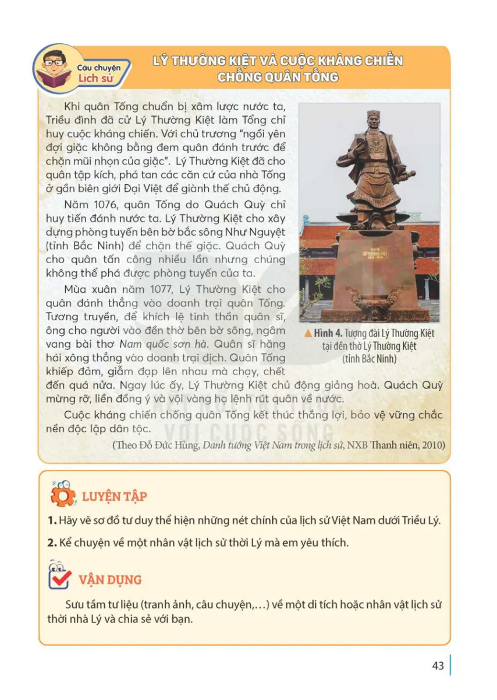
LÝ. THƯỜNG KIỆT VÀ CUỦÔC KHANG CHIẾN
Câu chuyện
CHÔNG QUAN
Lịch sử
Khi quên Tống bị xâm lược nước to,
Triều đình đã cử Lý Thường Kiệt làm Tổng chỉ
huy cuộc khóng chiến. Với chủ trương “ngổi yên
đợi giặc không bằng đem quôn đónh trước để
chặn mũi nhọn giặc”. Lý Thường Kiệt đỡ cho
quên tập kích, phó tan các căn cứ của nhà Tống
ở gần biên giới Đợi Việt để giành thế chủ động.
Năm 1076, quên Tống do Quách Quỳ chỉ
huy tiến nước tơ. Lý Thường Kiệt cho xây
dựng phòng tuyến bên bờ bắc sông Như Nguyệt
(tỉnh Bắc Ninh) để chặn thế giặc. Quỳ
cho quôn tốn công nhiều lốn nhưng chúng
không thể phé được phòng tuyến củc ta.
Mùa xuân năm 1077, Lý Thường Kiệt cho
quôn đénh thẳng vòo dodnh trợi quên Tống.
Tương truyền, để khích lệ thần quôn sĩ,
ông cho người vào đền thờ bên bờ sông, ngâm á. Hình 4. lượng đài Lý [hường Kiệt
vong bài thơ Nam quốc sơn hà. Quôn sĩ hăng tại đền thờ Lý Thường Kiệt
hói xông thẳng vèo doonh trại địch. Quên Tống (tỉnh Bắc Ninh)
khiếp đảm, giỗm đọp lên nhau chạy, chết
đến quá nửa. Ngoy lúc ấy, Lý Thường Kiệt chủ động hoà. Quách Quỳ
mừng rỡ, liền đồng ý và vội vòng họ lệnh rút quên về nước.
Cuộc khóng chiến chống quên Tống kết thúc thống lợi, bảo vệ vững chắc
nền độc lộp dôn tộc.
(Theo Đỗ Đức Hùng, Danh tướng Việt Nam trơng lịch sử, NXB Thanh niên, 2010)
LUYỆN TẬP
1. Hãy vẽ sơ đồ tư duy thể hiện những nét chính của lịch sử Việt Nam dưới Triều Lý.
2. Kể chuyện về một nhân vật lịch sử thời Lý mà em yêu thích.
VẬN DỤNG
Sưu tầm tư liệu (tranh ảnh, câu chuyện,...) về một di tích hoặc nhân vật lịch sử
thời nhà Lý và chia sẻ với bạn.
43
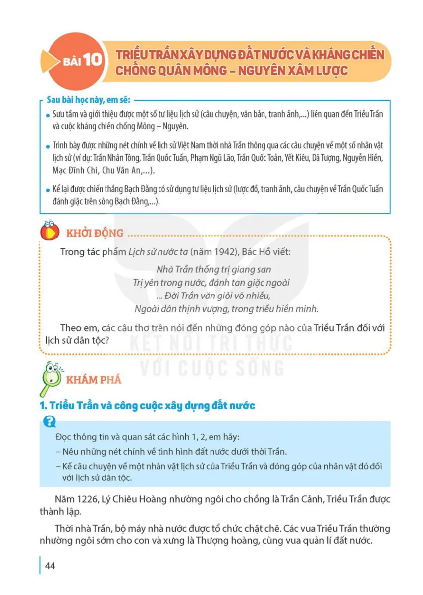
CHỒNG QUẦN MÔNG - NGUYÊN XÂM LƯƠC
Sau bài học này, em sẽ:
Sưu tầm và giới thiệu được một số tư liêu lịch sử (câu chuyện, văn bản, tranh ảnh,...) liên quan đến Triều Trân
và cuộc kháng chiến chống Mông — Nguyên.
Trình bày được những nét chính về lịch sử Việt Nam thời nhà Trần thông qua các câu chuyện về một số nhân vật
lịch sử (ví dụ: Trân Nhân Tông, Trân Quốc Tuấn, Phạm Ngũ Lão, Trân Quốc Toản, Yết Kiêu, Dã Tượng, Nguyễn Hiên,
Mạc Đĩnh Chị, Chu Văn Ân,...).
» Kể lại được chiến thắng Bạch Đằng có sử dụng tư liệu lịch sử (lược đồ, tranh ảnh, câu chuyện về Trần Quốc Tuấn
đánh giặc trên sông Bạch Đằng,...).
Trong tác phẩm Lịch sử nước ta (năm 1942), Bác Hồ viết:
Nhà Trần thống trị giang san
Trị yên trong nước, đánh tan giặc ngoài
.. Đời Trần văn giỏi võ nhiêu,
Ngoài dân thịnh vượng, trong triều hiền minh.
Theo em, các câu thơ trên nói đến những đóng góp nào của Triều Trần đối với
lịch sử dân tộc?
VữI SũñNÊ
KHÁM PHÁ
1. Triều Trần vã công cuộc xâu dựng đất nước
Đọc thông tin và quan sát các hình 1, 2, em hãy:
~ Nêu những nét chính về tình hình đất nước dưới thời Trần.
- Kể câu chuyện về một nhân vật lịch sử của Triều Trần và đóng góp của nhân vật đó đối
với lịch sử dân tộc.
Năm 1226, Lý Chiêu Hoàng nhường ngôi cho chồng là Trần Cảnh, Triều Trần được
thành lập.
Thời nhà Trần, bộ máy nhà nước được tổ chức chặt chẽ. Các vua Triều Trần thường
nhường ngôi sớm cho con và xưng là Thượng hoàng, cùng vua quản lí đất nước.
44
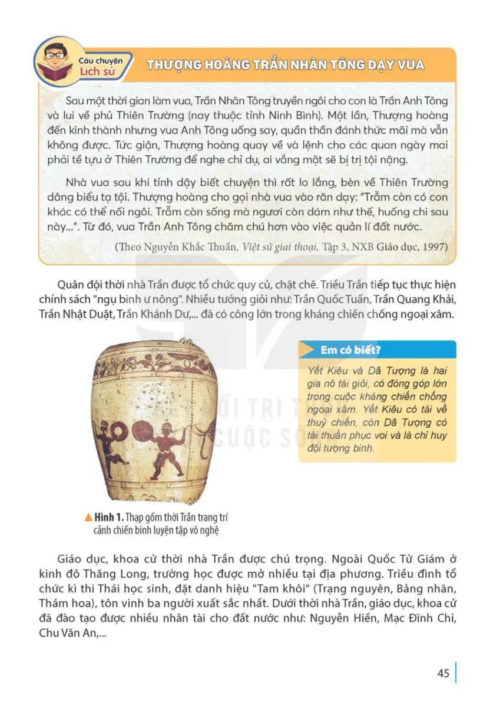
Cau chuyện THƯỜNG HOÀNG TRẤN NHÂN TÔNG
Lịch sử
Sau một thời gian làm vug, Trần Nhân Tông truyền ngôi cho con lò Trần Anh Tông
vò lui về phủ Thiên Trường (nay thuộc tỉnh Ninh Bình). Một lần, Thượng hoàng
đến kinh thành nhưng Anh Tông uống soy, quần thần đónh thức mãi mò vẫn
không được. Tức giên, Thượng hoàng quoy về và lệnh cho cóc quơn moi
tề tựu ở Thiên Trường để nghe chỉ dụ, di vắng mặt sẽ bị trị tội nặng.
Nhà vua sou khi tỉnh dộy biết chuyện thì rốt lo lắng, bèn về Thiên Trường
dêng biểu tợ tội. Thượng hoàng cho gọi nhờ vòo răn dọy: “Trẫm còn có con
khác có thể nối ngôi. Trẫm còn sống mò ngươi còn dám như thế, huống chỉ sau
nòy...". Từ đó, vua Trần Anh Tông chăm chú hơn vòo việc lí đết nước.
(Theo Nguyễn Khắc Thuần, Việt sử giai thoại, Tập 3, NXB Giáo dục, 1997)
Quân đội thời nhà Trần được tổ chức quy củ, chặt chẽ. Triều Trần tiếp tục thực hiện
chính sách "ngụ binh ư nông". Nhiều tướng giỏi như: Trần Quốc Tuấn, Trần Quang Khải,
Trần Nhật Duật, Trần Khánh Dư,... đã có công lớn trong kháng chiến chống ngoại xâm.
Em có biết?
Yết Kiêu và Dã Tượng là hai
gia nô tài giỏi, có đóng góp lớn
| trong cuộc kháng chiên chỗng
ngoại xâm. Yết Kiêu có tài về
thuỷ chiến, còn Dã Tượng có
| tài thuần phục voi và là chỉ huy
đội tượng bình.
¿ Hình 1. Thạp gốm thời Trần trang trí
cảnh chiến binh luyện tập võ nghệ
Giáo dục, khoa cử thời nhà Trần được chú trọng. Ngoài Quốc Tử Giám ở
kinh đô Thăng Long, trường học được mở nhiều tại địa phương. Triều đình tổ
chức kì thi Thái học sinh, đặt danh hiệu "Tam khôi” (Trạng nguyên, Bảng nhãn,
Thám hoa), tôn vinh ba người xuất sắc nhất. Dưới thời nhà Trần, giáo dục, khoa cử
đã đào tạo được nhiều nhân tài cho đất nước như: Nguyễn Hiền, Mạc Đĩnh Chị,
Chu Văn An,...
45
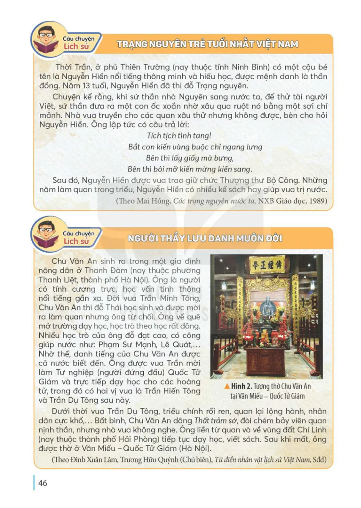
Cau chuyện. TRĂNG NGUYÊN TRE TUỔI NHẬT
Thời Trấn, ở phủ Thiên Trường (noy thuộc tỉnh Ninh Bình) có một cậu bé
tên là Nguyễn Hiền nổi tiếng thông minh và hiếu học, được mệnh danh là thần
đồng. Năm 13 tuổi, Nguyễn Hiền thi đỗ Trạng nguyên.
Chuyện kể rằng, khi sứ thần nhà Nguyên sơng nước to, để thử tòi người
Việt, sứ thần ra một con ốc xoắn nhờ xêu ruột nó bằng một sợi chỉ
mỏnh. Nhà vua truyền cho các quơn xêu thử nhưng không được, bèn cho hỏi
Nguyễn Hiền. Ông lệp tức có côu trẻ lời:
Tích tịch tình tang!
Bắt con kiến uàng buộc chỉ ngang lưng
Bên thì lấu giấu mà bưng,
Bên thì bôi mỡ kiến mừng kiến sang.
Squ đó, Nguyễn Hiền được vud trao giữ chức Thượng thư Bộ Công. Những
năm làm quơn trong triều, Nguyễn Hiền có nhiều kế sách hoy giúp vua trị nước.
(Theo Mai Hồng, Các trạng nguyên nước ta, NXB Giáo dục, 1989)
Câu chuyên NGƯỜI THAY. LƯU DANH MUÔN ĐỜI
Lịch sử
Chu Văn An sinh ra trong một gia đình #1#%
nông ở Thanh Đàm thuộc phường
Thơnh Liệt, thành phố Hè Nội). Ông lờ người
có tính cương trực, học vến tỉnh thông
nổi tiếng gồn xạ. Đời vua Trần Minh Tông,
Chu Văn An thi đỗ Thói học sinh vờ được mời
ra làm nhưng ông từ chối. Ông về quê
mở trường dạy học, học trò theo học rốt đông.
Nhiều học trò của ông đỗ đọt cdo, có công
giúp nước như: Phạm Sư Mạnh, Lê
Nhờ thế, danh tiếng của Chu Văn An được
cỏ nước biết đến. Ông được vud Trền mời
làm Tư nghiệp (người đứng đều) Quốc Tử
Giám vò trực tiếp dọy học cho các hoàng
tử, trong đó có hơi vị là Trần Hiến Tông â Hình 2. Tượng thờ Chu Văn An
vò Trần Dụ Tông này. tại Văn Miếu - Quốc Tử
Dưới thời vua Trần Dụ Tông, triểu chính rối ren, quơn lợi lộng hành, nhân
dôn cực khổ,... Bết bình, Chu Văn An dông Thất trảm sớ, đòi chém bảy viên quan
ninh thồn, nhưng nhà VUO không nghe. Ông liền từ quan vò về vùng đết Chí Linh
(nay thuộc thònh phố Hải Phòng) tiếp tục dọy học, viết sách. khi mết, ông
được thờ ở Văn Miếu - Quốc Tử Gióm (Hà Nội).
(Theo Đinh Xuân Lâm, Trương Hữu Quýnh (Chủ biên), Từ điển nhân vật lịch sử Việt Nam, Sảd)
46
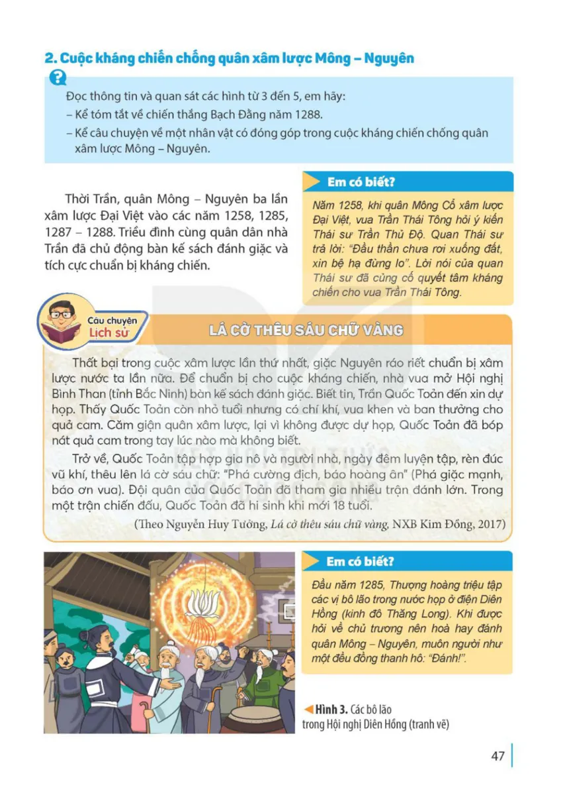
2. Cuộc kháng chiên chồng quân xâm lược Mông - Nguuên
Đọc thông tin và quan sát các hình từ 3 đến 5, em hãy:
- Kể tóm tắt về chiến thắng Bạch Đằng năm 1288.
- Kể câu chuyện về một nhân vật có đóng góp trong cuộc kháng chiến chống quân
xâm lược Mông - Nguyên.
Em có biết?
Thời Trần, quân Mông - Nguyên ba lẫn
Năm 1258, khi quân Mông Cô xâm luưọc
xâm lược Đại Việt vào các năm 1258, 1285, Đại Việt, vua Trần Thái Tông hỏi ý kiến
1287 - 1288. Triều đình cùng quân dân nhà Thái sự Trần Thủ Độ. Quan Thái sư
Trần đã chủ động bàn kế sách đánh giặc và trả lời: “Đâu thần chưa rơi xuống đất,
tích cực chuẩn bị kháng chiến. xin bệ hạ đừng lo”. Lời nói của quan
Thái sư đã củng cố quyết tâm kháng
chiến cho vua Trần Thái Tông.
Cau chuyên LA CỜ THEU SAU CHƯ VANG
Thết bợi trong cuộc xâm lược lần thứ nhết, giặc Nguyên réo riết chuẩn bị xâm
lược nước ta lần nữa. Để chuẩn bị cho cuộc khóng chiến, nhà vua mở Hội nghị
Bình Thơn (tỉnh Bắc Ninh) bòn kế sóch đánh giặc. Biết tin, Trần Quốc Toản đến xin dự
họp. Thấy Quốc Toản còn nhỏ tuổi nhưng có chí khí, vua khen và ban thưởng cho
quổ cam. Căm giên quôn xâm lược, lợi vì không được dự họp, Quốc Toản đỗ bóp
nót quỏ cơm trong toy lúc nờo không biết.
Trở về, Quốc Toản tập hợp gia nô và người nhà, ngày đêm luyện tộp, rèn đúc
vũ khí, thêu lên ló cờ sáu chữ: “Phó cường địch, báo hoàng ôn” (Phó giặc mọnh,
bóo ơn vuo). Đội quôn của Quốc Toẻn đỡ tham gia nhiều trên đánh lớn. Trong
một trên chiến đấu, Quốc Toản đã hi sinh khi mới 18 tuổi.
(Iheo Nguyễn Huy Tưởng, Lá cờ thêu sáu chữ vàng, ÄNXB Kim Đồng, 2017)
Em có biết?
Đầu năm 1285, Thượng hoàng triệu tập
các vị bô lão trong nuóc họp ở điện Diên
Hồng (kinh đô Thăng Long). Khi được
hỏi vê chủ trương nên hoà hay đánh
quân Mông - Nguyên, muôn người như
một đều đồng thanh hô: “Đánh!”
Hình 3. Các bô lão
trong Hội nghị Diên Hồng (tranh vẽ)
47
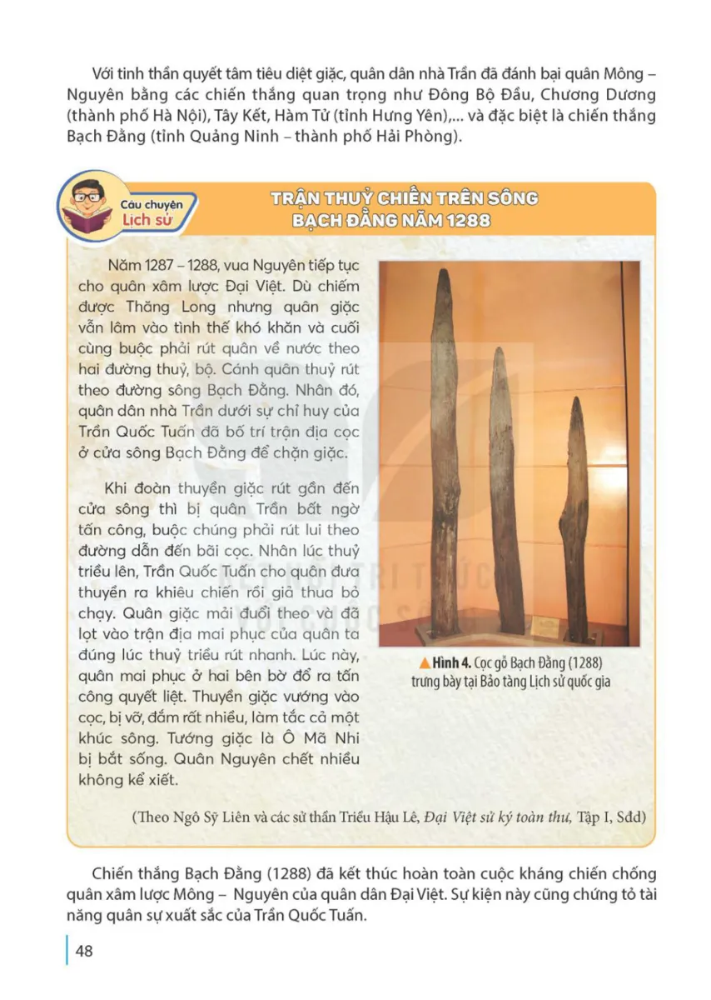
Với tinh thân quyết tâm tiêu diệt giặc, quân dân nhà Trần đã đánh bại quân Mông -
Nguyên bằng các chiến thắng quan trọng như Đông Bộ Đầu, Chương Dương
(thành phố Hà Nội), Tây Kết, Hàm Tử (tỉnh Hưng Yên),... và đặc biệt là chiến thắng
Bạch Đằng (tỉnh Quảng Ninh - thành phố Hải Phòng).
Cau chuyện
Lịch sử
Năm 1287 - 1288, vua Nguyên tiếp tục
cho xêm lược Đợi Việt. Dù chiếm
được Thăng Long nhưng quên giặc
vẫn lâm vòo tình thế khó khăn và cuối
cùng buộc phởi rút quên về nước theo
hơi đường thuỷ, bộ. Cónh quên thuỷ rút
theo đường sông Bọch Đằng. Nhân đó,
quên dôn nhà Trần dưới sự chỉ huy của
Trần Quốc Tuến đỗ bố trí trận địa cọc
ở cửa sông Bạch Đằng để chặn giặc.
Khi đoàn thuyền giặc rút gần đến
cửa sông thì bị quân Trần bết ngờ
tốn công, buộc chúng phỏi rút lui theo
đường dẫn đến bi cọc. Nhên lúc thuỷ
triều lên, Trần Quốc Tuến cho quôn đưa
thuyền ra khiêu chiến giả thuo bỏ
chạy. Quên giặc mới đuổi theo và đã
lọt vào trận địa mơi phục của quôn td
đúng lúc thuỷ triều rút nhanh. Lúc nòy, ¿ Hình 4. Cọc gỗ Bạch Đằng (1288)
quên mơi phục ở hơi bên bờ đổ tốn
trưng bày tại Bảo tàng Lịch sử quốc gia
công quyết liệt. Thuyền giặc vướng
cọc, bị vỡ, đăm rốt nhiều, làm tốc cổ một
khúc sông. Tướng giặc là Ô Mã Nhi
bị bắt sống. Quân Nguyên chết nhiều
không kể xiết.
(Theo Ngô Sỹ Liên và các sử thần Triểu Hậu Lê, Đại Việt sử ký toàn thư, Tập T, Sảd)
Chiến thắng Bạch Đằng (1288) đã kết thúc hoàn toàn cuộc kháng chiến chống
quân xâm lược Mông - Nguyên của quân dân Đại Việt. Sự kiện này cũng chứng tỏ tài
năng quân sự xuất sắc của Trần Quốc Tuấn.
48
Lsông Đã Bạc
Kênh
Trúc Động.
QUẢNG NINH
HẢI PHÒNG `
25-
25 5,0 km'
Đường rút lui của quân Nguyên Quân triều đinh tiếp ứng
Quân ta đánh nhữ địch vào trận địa Quân ta chặn đánh vả tiền công
Quãn ta mai phục, chặn đánh địch Bãi cọc ngầm
Hình 5. Lược đồ chiến thắng Bạch Đằng (1288)
LUYỆN TẬP
1. Hoàn thành bảng (theo gợi ý dưới đây vào vở) về một số nét chính của lịch sử
Việt Nam dưới Trần.
Lĩnh vực Nệt chính Nhân vật lịch sử tiêu biều
- Thực hiện chế độ
Chính tri Trần Nhân Tông,...
Thượng hoàng.
Quân đội
Giáo dục, khoa cử
Kháng chiến
2. Giới thiệu về một nhân vật thời nhà Trần và đóng góp của nhân vật đó đối với
lịch sử dân tộc thông qua tư liệu mà em sưu tâm được.
VẬN DỤNG
Sưu tầm tư liệu (tranh ảnh, câu chuyện,...) về một di tích lịch sử liên quan đến
Triều Trần còn lại đến ngày nay và chia sẻ với bạn.
49
TẬP
Câu 1. Hãy vẽ sơ đồ tư duy thể hiện các nội dung sau vào vở: vị trí địa lí, phạm vi lãnh
thổ và đơn vị hành chính, đặc điểm địa hình, đặc điểm khí hậu của Việt Nam.
Câu 2. Hoàn thành bảng (theo gợi ý dưới đây vào vở) về những quốc gia đầu tiên trên
lãnh thổ Việt Nam.
Tên nhà nước Địa bản chủ êu Hiện vật/công trình tiêu biêu
Văn Lang Bắc Bộ và Bắc Trung Bộ Trống đồng Đông Sơn
Câu 3. Hoàn thành bảng (theo gợi ý dưới đây vào vở) về các cuộc đấu tranh tiêu biểu
thời kì Bắc thuộc.
Tên cuộc đâu tranh
Thời gian Ý nghĩa
40 - 43 Hai Bà [Trưng
Câu 4. Lựa chọn thông tin cho phù hợp với Triều Lý và Triều Trần, sau đó ghì kết quả
Vào VỞ.
1. Định đô ở Thăng Long chiến chống quân Mông — Nguyên
3. Kháng chiến chống quân Tổng 4. Chiến thắng Bạch Đằng
5.Trần Quốc Tuấn 6. Lập Văn Miếu — Quốc Tử Giám
7. Lý Thường Kiệt 8. Vua Trần Nhân Tông
9. Nguyên phi Ỷ Lan 10. Vua Lý Thái Tổ
11.Nguyễn Hiển 12. Chu Văn An
50
> BÀI 12 KHỞI NGHĨA LAM SƠN VÀ TRIỀU HẦU LÊ
Sau bài học này, em sẽ:
ø Sưu tầm và giới thiệu được một số tư liệu lịch sử (câu chuyện, văn bản, tranh ảnh,...) liên quan đến khởi nghĩa
Lam Sơn và Triều Hậu Lê.
e Kể lại được một số nét chính về khởi nghĩa Lam Sơn thông qua các câu chuyện về một số nhân vật lịch sử
(ví dụ: Lê Lợi, Nguyễn Trãi, Lê Lai, Nguyễn Chích,...).
ø Kể lại được chiến thắng Chi Lăng có sử dụng tư liệu lịch sử (lược đồ, tranh ảnh, câu chuyện về ải Chi Lăng,
về Liễu Thăng,...).
ø Trình bày được những nét chính về lịch sử Việt Nam thời Hậu Lê thông qua các câu chuyện về một số nhân vật
lịch sử (ví dụ: vua Lê Thánh Tông, Lương Thế Vịnh, Ngô Sỹ Liên,...).
KHỞI ĐỘNG
Hình 1 là tượng đài anh hùng dân tộc Lê Lợi tại
Quảng trường Lam Sơn (tỉnh Thanh Hoá). Ông là
người đã lãnh đạo nhân dân khởi nghĩa chống quân
Minh giành thắng lợi, lập ra Triều Hậu Lê. Hãy chia sẻ
điều em biết về Lê Lợi và triều đại do ông sáng lập.
VữI pU00 â Hình 1. lượng đài anh hùng
dân tộc Lê Lợi
KHÁM PHÁ
1. Khởi nghĩa Lam Sơn (1418 - 1427)
a) Khái quát về khởi nghĩa Lam Sơn
Đọc thông tin, em hãy:
- Nêu một số nét chính về khởi nghĩa Lam Sơn.
- Kể câu chuyện về một nhân vật trong khởi nghĩa Lam Sơn.
Năm 1418, khởi nghĩa Lam Sơn do Lê Lợi lãnh đạo nổ ra tại vùng rừng núi Lam Sơn
(tỉnh Thanh Hoá). Trải qua 10 năm (1418 - 1427) chiến đấu gian khổ với nhiều trận
đánh ác liệt, cuộc khởi nghĩa Lam Sơn đã giành được thắng lợi hoàn toàn.
Cau chuyên
Lịch sử LÊ LƠI DỮNG CỜ KHƠI NGHĨA
Dưới éch thống trị tàn bạo của nhà Minh, nhân
dân phải chịu cảnh lm cơ cực. Lê Lợi - một hòo
trưởng ở vùng Lam Sơn (tỉnh Thanh Hoó) sớm nuôi
chí lớn đánh đuổi giặc ngoợi xâm.
Năm 141é, Lê Lợi cùng 18 anh hùng hòo kiệt tổ
chức Hội thể Lũng Nhoi, nguyện chung SỨC đồng lòng
đónh đuổi giặc Minh ro khỏi bờ cõi. Năm 1418, Lê Lợi
xưng là Bình Định Vương, dựng cờ khởi nghĩa ở vùng
rừng núi Lam Sơn. Ông khẳng định: “Ta cết quên
đónh giặc không phải lò có lòng ham muốn phú quý,
mà chính vì muốn để ngàn năm về người đời biết
ta không chịu làm tôi tớ cho bọn giặc tòn ngược”.
Cuộc khởi nghĩa đã thu hút nhiều người yêu nước và Hình 2. Lê Lợi và Nguyễn Trãi
trở thònh phong tròo dôn tộc rộng lớn. ở căn cứ Lam Sơn (tranh sơn dầu
(Theo Vũ Ngọc Khánh, Lê Lợi, Nguyễn Trãi
của hoạ sĩ Hoàng Mai Hoa)
và đất Lam Sơn, NXB Văn hoá dân tộc, 2018)
Thắng lợi của khởi nghĩa Em có biết?
Lam Sơn còn gắn với vai trò và
Trong khởi nghĩa Lam Son, Nguyễn Trãi đã dâng lên Lê Lợi
đóng góp quan trọng của bản "Bình Ngô sách” với phương châm chủ yếu là thu
nhiều nhân vật tiêu biểu khác phục lỏng người. Ông cũng viết nhiêu văn thư dụ hàng
như: Nguyễn Trãi, Lê Lai, Trần quân Minh. Đặc biệt, Nguyễn Trãi đã thay mặt Lê Lợi
Nguyên Hãn, Nguyễn Chích,... viết bảy bức thư gủi cho Vương Thông ở thành Đông
Quan, thậm chí sẵn sàng vào thành đề trao đồi con tin.
Cau ch Uyên.
Lịch sử. LÊ LAI QUÊN MÌNH CỨU CHÚA
Năm 1418, giặc Minh vây kín núi Chí Linh (thuộc vùng Lam Kinh, tỉnh Thanh Hoá).
Lê Lợi hỏi các tướng: “Ai có thể thay ta mặc đo hoòng bèo, xông ro giết giặc để
quôn tướng có đường thoót?”. Khi các tướng còn yên lăng, Lê Loơi bước lên
nói: “Thần nguyện làm điều đó”.
Lê Lai mặc áo bèo, cưỡi ngựa xông trận. Giặc tưởng Lê Lai là Lê Lợi vội
dồn hết quên vôêy bắt. Lê Lợi cùng nghĩa quôn nhân đó rút khỏi vòng vôy, su
đó từng bước khôi phục lực lượng, tiếp tục khởi nghĩa.
32
Nhớ ơn Lê Lai, Lê Lợi căn dặn: “Nếu to chết ngày nèo thì trước một ngày
là ngòy giỗ Lê Lai”. Ngòy 22 - 8 (ôm lịch), Lê Lợi băng hà. Nhớ lời căn dặn, hằng
năm nhên dôn to tổ chức giỗ Lê Lơi vào ngòy 21 - 8 (âm lịch). Vì thế mới có câu:
"Hăm mốt Lê hăm hai Lê Lợi”.
(Theo Lê Đình Hà, Những mẩu chuyện lịch sử, NXB Giáo dục, 2008)
b) Chiến thắng Chi Lăng
Đọc câu chuyện và quan sát hình 3, hãy kể lại chiến thắng Chi Lăng.
Trận Chi Lăng là một trong những trận đánh tiêu biểu và quyết định của khởi nghĩa
Lam Sơn.
Lịch sử | RẤN CHI LẶNG
Ái Chi Lăng thuộc địo Quãn Minh tiễn công
phôn xã Chi Lăng (tỉnh TRƯNG QUỐC
Lạng Sơn), lò một thung Quản ta chặn
Quân ta mai nhục, chận đánh địch
lũng nhỏ, dài khoảng hơn Nơi quân ta giảnh thẳng lợi
4 km, hơi bên là cóc dãy Của ái
Thành
núi đó rết hiểm trở. Biên giới gia ngày nay
_20 km
T0" KHÂU ÔN
Khi Lê Lợi kéo quôn ro
TRỊ THỊ
Bắc, bao vây thành Đông
(thành phố Hà Nội), LƯU
Minh lo sợ cử hơi đạo
viện binh kéo sang phé
vôy. Liễu Thăng cầm đều
CHI LẶNG:
một đợo quôn đónh vào
Lạng Sơn. Mờ sóng, quôn
Minh đến cửo ởi Chỉ Lăng. ê Hình 3. Lược đồ trận Chi Lăng
Ki binh nghĩa quên rơ
nghênh chiến, rồi giỏ thua để nhử quên Minh vòo trên địa. Khi ngựa củo chúng
đơng vượt quo cónh đồng lầy, bỗng nhiên một loạt phéo hiệu nổ vang như sếm.
Lập tức, từ hai bên sườn núi, những chùm tên, mũi lqo vun vút phóng xuống. Đội
kị binh giặc tối tăm mặt mũi. Liễu Thăng bị trúng một mũi lao, chết bên sườn núi
Mõ Yên. Hơn một vơn viện binh tỉnh nhuệ của giặc bị tiêu diệt. Nghe tin chủ tướng
tử trận, quên Minh vô cùng hoảng loạn tháo chọy. Mưu đồ cứu viện thành Đông
Quơn của nhà Minh thết bại.
(Theo Chiến thắng Chi Lăng, NXB Văn hoá dân tộc, Hà Nội, 1987)
53
2. Triều Hậu Lê vả công cuộc xâu dựng đât nước
Đọc thông tin, em hãy:
— Nêu một số nét chính về lịch sử Việt Nam Triều Hậu Lê.
— Kể lại câu chuyện về một nhân vật lịch sử tiêu biểu Triều Hậu Lê.
Năm 1428, Lê Lợi lên ngôi vua, lập ra Triều Hậu Lê, khôi phục Quốc hiệu Đại Việt,
đóng đô ở Đông Kinh (Thăng Long).
Dưới Triều Hậu Lê, bộ máy nhà nước được tổ chức quy củ, chặt chẽ. Nhà nước đặc
biệt coi trọng và khuyến khích phát triển nông nghiệp. Nhờ đó, sản xuất nông nghiệp
được phục hổi và phát triển, đời sống nhân dân ổn định. Đất nước thịnh đạt, nhất là
dưới thời trị vì của vua Lê Thánh Tông (1460 - 1497).
Câu chuyện
Lịch sử LÊ THANH TÔNG” NHÀ CHÍNH TRI TẠIBA
Vua Lê Théónh Tông là con của vua Lê Thói Tông và bà phi Ngô Thị Ngọc
lò vị vua trị vì lâu nhốt củo Triểu Hệộu Lê. Trong thời kì trị vì của mình, vua
Lê Thánh Tông đã tiến hành cỏi cách trên nhiều lĩnh vực, chú trọng bỏo vệ biên
cương, mở mong bờ cõi. Ông cho vẽ Hồng Đức bản đô, ban hành bộ Quốc triều
hình luật,... Vua còn cho tổ chức đều đặn céc khoa thi Tiến sĩ để tuyển chọn quơn
lợi, lập bia đó ở Văn Miếu - Quốc Tử Giám để vinh danh những người đỗ đọt.
Nhà vua cũng kiên quyết ngăn chặn những hành động xâm phạm biên giới
của nhà Minh, bảo vệ toàn vẹn lãnh thổ đết nước. Ông từng nói với quan phụ
trách việc bỏẻo vệ biên cương Lê Cảnh Huy rằng: “Một thước núi, một tốc sông
của td, lễ nào lợi tự tiện vứt bỏ đi được... Nếu ngươi dám đem một thước một
tốc đết của Thới Tổ làm mồi cho giặc thì tội phải tru di”.
Lê Thánh Tông được đónh gió lờ vị vua “anh quyết đoán, có hùng tòi
đọi lược, võ giỏi... Các sách kinh sử, các sóch lịch cói gì cũng tỉnh thông”.
(Theo Định Xuân Lâm, Trương Hữu Quýnh (Chủ biên),
Từ điển nhân vật lịch sử Việt Nam, Sảđ)
Em có biết?
Văn học và khoa học dưới Hậu Lê
cũng đạt được nhiều thành tựu với các tác gia
Ngô Sỹ Liên là một nhà sử học tiêu
biêu với tác phẩm "Đại Việt sử ký toàn
tiêu biểu như: Nguyễn Trãi, Ngô Sỹ Liên,
thư”, ghi lại lịch sử nước ta từ thời
Lương Thế Vinh,... Hùng Vương đền Hậu Lê.
54
Cau chuyện
Lịch sủ- TRANG LƯỜNG LƯƠNG THÊ VINH
Ở làng Hương (noy thuộc xẽ Thờnh Lợi, tỉnh Ninh Bình) có một cậu học
trò tên là Lương Thế Vinh, nổi tiếng thông minh, nhanh trí, giỏi tính toón. Ông
đỗ Trạng nguyên vò được bổ làm quan dưới Triều Hậu Lê.
Một lần, sứ thần nhà Minh (Trung Quốc) sang nước td, vua cử Lương Thế Vinh ro
tiếp đón. Trong một buổi đi chơi thuyền, sứ thần đố Lương Thế Vinh cân thử một
con voi. Ông nhện lời rồi soi người dắt voi xuống thuyền, đónh dếu mép nước
bên mẹn thuyền, sau đó dắt voi lên. Tiếp theo, ông ro lệnh đổ đé xuống thuyền,
đến khi thuyền chìm xuống đúng dếu cũ. Việc còn lợi là đưa đó lên cân. Sứ thần
nhà Minh hết sức thón phục.
Lương Thế Vinh đã soạn cuốn Đại thành toán pháp tổng kết những kiến thức
học đương thời vò cả những phót minh củog ông. Với tài năng toán học
xuốt sốc, ông được diên giơn gọi lò Trạng Lường.
(Theo Anh Chi, Lê Minh Hải, Truyện tranh Lịch sử Việt Nam:
Lương Thế Vĩnh, NXB Kim Đồng, 2023)
LUYỆN TẬP
1. Hoàn thành bảng (theo gợi ý dưới đây vào vở) về đóng góp của một số
nhân vật lịch sử tiêu biểu trong khởi nghĩa Lam Sơn và Triều Hậu Lê.
Nhân vật lịch sử
STT Đồng góp
Lê Lợi
2. Kể lại câu chuyện về một nhân vật liên quan đến khởi nghĩa Lam Sơn hoặc
Triều Hậu Lê mà em sưu tầm được.
VẬN DỤNG
Dựa vào thông tin trong sách, báo, internet,... hãy kể tên một số địa danh
(di tích lịch sử, đường phố, trường học,...) liên quan đến khởi nghĩa Lam Sơn
và Triều Hậu Lê.
55
> BÀI 13
Sau bài hoc này, em sẽ:
e Sưu tầm và giới thiệu được một số tư liệu lịch sử (câu chuyện, văn bản, tranh ảnh,...) liên quan đến
Triều Nguyễn.
e bày được những nét chính về lịch sử Việt Nam thời nhà Nguyễn thông qua các câu chuyện về một số
nhân vật lịch sử (ví dụ: vua Gia Long, vua Minh Mạng, Nguyễn Công Trứ, Nguyễn Trường Tộ, Hàm Nghị,
Phan Đình Phùng,.....
KHỞI ĐỘNG
Quan sát hình 1 và cho biết loại
hình nghệ thuật được giới thiệu liên
quan đến triểu đại nào trong lịch sử
dân tộc.
` Hình 1. Biểu diễn Nhã nhạc cung đình Huế
VữI pU00
KHÁM PHÁ
1. Triêu Nguuễn và công cuộc xâu dựng đất nước
a) Triều Nguyễn buổi đầu xây dựng đất nước
Đọc thông tin, em hãy:
~ Nêu sự thành lập Nguyễn.
~ Trình bày một số việc làm của Triều Nguyễn để xây dựng đất nước.
Năm 1802, Nguyễn Ánh lên ngôi Hoàng đế lập ra Triểu Nguyễn, định đô ở
Phú Xuân (thành phố Huế), lấy niên hiệu là Gia Long. Các vua Triểu Nguyễn đã từng
bước củng cố bộ máy nhà nước, cải cách hành chính, thống nhất đất nước,...
56
Vua Gia Long ban hành bộ Hoàng Việt luật lệ nhằm củng cố trật tự xã hội.
Trong những năm 1831 - 1832, vua Minh Mạng tiến hành cải cách hành chính, chia
cả nước thành 30 tỉnh và 1 phủ.
Các vị vua Triều Nguyễn tiếp tục các hoạt động thực thi chủ quyền biển, đảo,
đặc biệt là đối với quân đảo Hoàng Sa và quần đảo Trường Sa.
Câu chuyện
Lịch sử:
Minh Mẹng lè vị vua thứ hơi của Triều Nguyễn. Trong
thời trị vì của mình, vua Minh Mạng đã đề xuết nhiều biện
phóp cỏi cách như chia cổ nước thành cóc tỉnh và phủ,
cử quơœn chỉ đạo khai hoang ở vùng ven biển, cho mở lại
cóc kì thi Hội, thi Đình,...
Nhà vuo đặc biệt để cao sự nghiêm minh của
luột. Chuyện kể rằng, vào năm 1823, quon Lý Hữu Diệm
trộm hơn một lạng vòng và bị phót hiện. Theo luật
vud bơn, tội ăn trộm tiền của nhò nước dù lò ít hay nhiều
đều bị xử tội chết. Tuy nhiên, khi xét xử, Bộ Hình thấy
Lý Hữu Diệm có nhiều công trạng nên đã tha tội chết, chỉ
bắt đi đòy. Khi án được têu lên, vua Minh Mọng không á. Hình 2. Vua Minh Mạng
đồng ý, bơn lệnh cho Bộ Hình phỏi xử Lý Hữu Diệm theo (tranh vẽ}
đúng quy định để mọi người trông theo đó mè sửa mình.
Minh Mạng được đónh gió là vị vua tỉnh thông Nho học vò là nhà cỏi cách
lớn trong lịch sử Việt Nam.
(Theo Lê Thái Dũng, Những câu chuyện lí thú về hoàng đế Minh Mạng,
NXB Lao động, 2018)
b) Công cuộc khai hoang dưới Triều Nguyễn
Đọc thông tin và quan sát hình 3, em hãy:
- Nêu kết quả của công cuộc khai hoang dưới Triều Nguyễn.
- Kể chuyện về Nguyễn Công Trứ và nêu đóng góp của ông.
Nhiều vua Triều Nguyễn đã nỗ lực tổ chức khai hoang, mở rộng diện tích canh tác
ở vùng ven biển Bắc Bộ và đồng bằng Nam Bộ để ổn định đời sống nhân dân. Một số
quan lại đã có những đóng góp tích cực trong công cuộc khai hoang là:
Nguyên Công Trứ, Nguyễn Tri Phương,...
57
chuyên |
Lịch sử VÀ CÔNG CUOC KHAI HOANG LAN
Đầu thế kỉ XIX, nhiều nông dân không có ruộng còy cấy, phỏi bỏ lòng đi
phiêu tén vò nổi dậy chống triều đình. Trước tình hình đó, Nguyễn Công Trứ đã tâu
lên vua Minh Mạng cho khơi hoang để yên nghiệp dân nghèo. Nhè đồng ý vò cử
ông làm Doanh điền sứ chuyên coi việc khơi phá đốt hoang. thấy vùng duyên
hỏi Bắc Bộ còn nhiều đết đơi chưa được khơi phó, ông đẽ chiêu tập chúng
khai hoang lốn biển, lập nên huyện Tiền Hỏi (nay thuộc tỉnh Hưng Yên) và huyện
Kim Sơn (ngay thuộc tỉnh Ninh Bình|,...
Công cuộc khơi hoang lến biển của Nguyễn Công Trứ đð góp phần mở
rộng diện tích canh tác, ổn định xõ hội vò thúc đẩy nông nghiệp phát triển.
Với lòng thành kính và biết ơn, nhân dên cóc vùng khơi hoang đã lệp đền
thờ Nguyễn Công Trứ ngay khi ông còn sống. Hậu thế gọi ông với cới tên trìu
mến “Ông Tổ mở đốt".
(Theo Quốc sử quán Triều Nguyễn, Đại Nam chính biên liệt truyện, NXB Thuận Hoá, 1993)
á Hình 3. Đền thờ Nguyễn Công Trứ (xã Quang Thiện, tỉnh Ninh Bình)
c) Những đề nghị canh tân đất nước cuối thế kỉ XIX
Đọc thông tin, em hãy nêu những đóng góp của Nguyễn Trường Tộ đối với lịch sử
dân tộc.
Nửa cuối thế kỉ XIX, trong bối cảnh đất nước ngày càng khó khăn và đứng trước
nguy cơ mất nước, một số quan lại và trí thức yêu nước như: Phạm Phú Thứ,
58
Nguyễn Trường Tộ, Nguyễn Lộ Trạch,... đã đề xuất một số biện pháp cải cách. Họ gửi lên vua
Tự Đức các đề xuất chấn chỉnh bộ máy quan lại, mở mang thương nghiệp, củng cố quốc
phòng,... Iuy nhiên, hầu hết những đề nghị đó không được thực hiện.
Côu chuyện VONG CANH TẤN ĐẤT NƯỚC
Lịch sử:
Nguyễn Trường Tộ quê ở xẽ Yên Trung (tỉnh Nghệ An).
Từ nhỏ, ông sớm bộc lộ tư chết thông minh, học một
biết mười, được cd ngợi lò “Trạng Tộ". Thuở thiếu thời,
Nguyễn Trường Tộ được theo học các thồy giáo ở quê
nhờ. Sau đó, ông được học thêm tiếng Phóp vò cóc môn
khoa học khóc. Ông moy mắn được tiếp xúc trực tiếp với
nhiều thành tựu, kĩ nghệ phương Tôêy nên sớm có hoờòi
bẽo conh tên đết nước.
Sau chuyến đi Phóp và một số nước khóc ở châu Âu,
châu Á trở về, Nguyễn Trường Tộ đã đệ trình lên vuo
Tự Đức nhiều bản điều trần, bày tỏ mong muốn làm cho
¿Hình 4. Nguyễn Trường lộ
đết nước giàu mạnh. Ông đề nghị mở rộng quœn hệ với
nước ngoòi, mở cóc trường doy đóng tèu, đúc súng,... (tranh ve)
Trước những đề nghị của Nguyễn Trường Tô, cóc quœn
trong triều có nhiều ý kiến trói ngược nhou, do đó những để nghị của ông không
được thực hiện. Dù vậy, ông vẫn được coi là một đợi diện tiêu biểu cho trào lưu
conh tân đốt nước cuối thế kỉ XIX.
(Theo Nguyễn Đình Đầu, Nguyễn Trường Tộ với Triểu đình Tự Đúc, NXB Trẻ, 2013)
2. Phong trào Cần vương chỗng Pháp
Đọc thông tin, em hãy:
~ Cho biết những nét chính về phong trào Cần vương cuối thể kỉ XIX.
- Kể câu chuyện về Phan Đình Phùng và cuộc khởi nghĩa Hương Khê.
Năm 1884, Triều đình nhà Nguyễn kí
hiệp ước công nhận quyền đô hộ của thực
dân Pháp trên toàn bộ đất nước Việt Nam.
Tuy nhiên, một bộ phận quan lại thuộc
phái chủ chiến, đứng đầu là vua
Hàm Nghi, vẫn nêu cao tỉnh thần chống
Pháp, mong muốn khôi phục độc lập
á. Hình 5. Vua Hàm Nghị
dân tộc. Năm 1885, lấy danh nghĩa vua
.â Hình 6. lồn Thất Thuyết
(tranh về) (tranh vẽ}
59
Hàm Nghị, Tôn Thất Thuyết ban bố Dụ Cần vương, kêu gọi nhân dân đồng lòng giúp
vua cứu nước. Phong trào Cần vương bùng nổ và phát triển mạnh mẽ, gắn với tên
tuổi của một số nhân vật tiêu biểu như: Tôn Thất Thuyết, Nguyễn Thiện Thuật,
Phan Đình Phùng,...
Cau chuyện. ĐINH PHÙNG
Lịch sử: VÀ CUOC KHƠI NGHĨA HƯƠNG KHÊ
Cuối thế kỉ XIX, hưởng ứng lời kêu gọi cứu nước của
vud Hàm Nghi, Phan Đình Phùng một sĩ phu yêu nước
quê ở xẽ Đức Thọ (tỉnh Hà Tĩnh) đã đứng ro chiêu tộp lực
lượng chống Phóp.
Nghĩa quôn đã xôy dựng căn cứ chính tợi vùng
rừng núi Hương Khê (nay thuộc tỉnh Hò Tĩnh). Các
anh hùng, hào kiệt khắp bốn tỉnh Hoá, Nghệ An,
Hò Tĩnh, Quỏng Trị tự nguyên liên kết lực lượng dưới
quyền chỉ huy của Đình Phùng. Cuộc khởi nghĩa
kéo dài hơn mười năm, cho quên Phép nhiều thiệt
â Hình 7. Phan Đình Phùng
hợi. Cuối năm 1895, Phan Đình Phùng hi sinh trong một
(tranh vẽ)
trận chiến đếu chống quên Pháp. Cuộc khởi suy
yếu dồn rồi r.
Tuy thốt bại nhưng khởi nghĩa Hương Khê là cuộc khởi nghĩa tiêu biểu nhốt
trong phong Cổn vương.
(Theo Định Xuân Lâm, Trương Hữu Quýnh (Chủ biên), Từ điển nhân vật lịch sử Việt Nam, Sảd)
LUYỆN TẬP
1.Vẽ sơ đồ tư duy những nét chính về lịch sử Việt Nam dưới Triều Nguyễn.
2. Kể lại câu chuyện về một nhân vật lịch sử dưới thời nhà Nguyễn mà em sưu
tâm được. Câu chuyện đó giúp em biết được thông tin gì về lịch sử Việt Nam
thời nhà Nguyễn?
Sưu tầm tư liệu, tranh ảnh và giới thiệu về một di sản văn hoá của Triều Nguyễn.
60
CÁCH MANG THANG TÂM NAM 1945
'Sau bài học này, em sẽ:
e Sưu tầm một số tư liệu (câu chuyện, văn bản, tranh ảnh,...) kể lại được thắng lợi ở một số địa phương lớn:
Hà Nội, Huế, Sài 6òn,.... trong Cách mạng tháng Tám năm 1945.
e Kể lại được một số câu chuyện về Hồ Chí Minh khi hoạt động ở Pác Bó, lần Trào, khi viết và đọc Tuyên ngôn Đột lập;
chuyện về Kim Đồng, Võ Nguyên Giáp.
KHỞI ĐÔNG
Hình 1 gắn liên với hoạt động của
Bác Hồ trong những năm 1941 - 1945.
Hãy chia sẻ những điều em biết về địa
danh này và một số hoạt động của
Bác Hồ trong thời gian ở Pác Bó
(tỉnh Cao Bằng).
â Hình 1. Bàn đá bên bờ suối Lê-nin -
nơi Bác Hồ ngồi làm việc trong thời gian ở Pác Bó
KHÁM PHÁ VữI pU00
1. Một số thắng lợi tiêu biểu trong Cách mạng tháng Tám năm 1945
Đọc thông tin và quan sát hình 2, em hãy:
- Kể tên một số thắng lợi tiêu biểu trong Cách mạng tháng Tám năm 1945.
- Kế lại một sự kiện diễn ra trong Cách mạng tháng Tám ở Hà Nội, Huế hoặc Sài Gòn.
Sau khi Nhật Bản đầu hàng quân Đồng minh, Đảng và Bác Hồ đã kêu gọi toàn dân
đứng lên Tổng khởi nghĩa, giành chính quyền trong cả nước.
sáng 19 - 8 - 1945, nhân dân Hà Nội và các tỉnh lân cận đổ về quảng trường
Nhà hát Lớn dự cuộc mít tinh do Mặt trận Việt Minh tổ chức. Sau đó, quần chúng cách
mạng, có sự hỗ trợ của lực lượng tự vệ vũ trang lần lượt chiếm các cơ quan đầu não của
61
địch như: Phủ Khâm sai, Toà Thị
chính và các công sở khác,... Tối
cùng ngày, cuộc khởi nghĩa giành
chính quyền ở Hà Nội kết thúc
thắng lợi.
Tại Huế, ngày 23 —8, hàng vạn
nhân dân nội, ngoại thành đã
kéo về kinh thành Huế mít tỉnh,
sau đó chuyển thành biểu tình
vũ trang, toả đi chiếm các công
sở, giành lại chính quyền.
Tại Sài Gòn, sáng 25 -8, hàng
¿ Hình 2. Nhân dân Hà Nội chiếm Phủ Khâm sai (19 — 8 — 1945)
chục vạn nhân dân thành phố và
các tỉnh lân cận kéo về trung tâm
để tham dự mít tỉnh chào mừng thắng lợi của cuộc khởi nghĩa. Chính quyền
cách mạng ra mắt nhân dân.
Đến cuối tháng 8 - 1945, Tổng khởi nghĩa đã giành thắng lợi hoàn toàn trên phạm
vỉ cả nước.
2. Kể chuuện về một sô nhân vật lịch sử
Đọc thông tin,em hãy kể lại một trong các câu chuyện về Bác Hồ, Đại tướng Võ Nguyên Giáp,
anh Kim Đồng.
Cu chuyên THANH LAẤP.ĐOI
GIAI PHONG QUẦN
Ngày 22 - 12 - 1944, trong khu rừng đợi ngòn thuộc châu Bình Nguyên
(tỉnh Cao Bằng), đồng chí Võ Nguyên Giép đã tuyên bố thành lập Đội Việt Nam
Tuyên truyền Giải phóng quên gồm 34 chiến sĩ với chủ trương “chính trị trọng
hơn quên sự, tuyên truyền trọng hơn tóc chiến”. Đứng dưới cờ, toàn đội đồng
thanh đọc mười lời thề danh dự do Võ Nguyên Gióp soạn thỏo, xen kế là những
tiếng hô thể!” dðõng dạc, đơanh thép.
Đội Việt Nam Tuyên truyền Giỏi phóng quôn - tiển thân của Quôn đội
nhân dân Việt Nam đỗ ra đời. Võ Nguyên Gióp được tôn vinh như người
“anh cỏ” của Quôn đội dân Việt Nam.
(Theo Từ nhân dân mà ra, trích Tổng tập hồi kí của Đại tướng Võ Nguyên Giáp,
NXB Quân đội nhân dân, 2006)
62
¿ Hình 3. Bức phù điêu mô tả cảnh đồng chí Võ Nguyên Giáp giao nhiệm vụ
cho 34 chiến sĩ trong buổi lễ thành lập Đội Việt Nam Tuyên truyền Giải phóng quân
Câu chuyên NGƯỜI VIÊN MƯU TẾT,
Kim Đống tên thột lò Nông Văn Dền
(Nông Văn Dèn), người tộc Nùng quê
ở xã Trường Hè, tỉnh Cao Bằng. Năm 194Ị,
Đội Nhi đồng cứu quốc được thành lệp, Kim
Đồng lò Đội trưởng điểu tiên. Trong những lấn
làm nhiệm vụ gioo liên, đưo đón cón bộ,
Kim Đồng luôn thể hiện lò cậu bé mưu
trí và dũng cảm.
Một lồn, sau khi làm nhiệm vụ dễn cán
bộ vòo căn cứ, trên đường trở về nhà, bốt
ngờ Kim Đồng phát hiện địch phục kích chờ
bắt các cén bộ đang họp ở bên trong một
núi. Kim Đồng đã bình tĩnh, nhanh trí
phân công cho người bạn đi cùng về bóo Hình 4. [ương đài Anh hùng liệt sĩ
gốp cho cóc cón bộ còn mình sẽ đánh lạc Nông Văn Dền — Kim Đồng (tỉnh (ao Bằng)
hướng quên địch. Anh chọy vụt qua chỗ
chúng phục kích. Thốy có người, quên địch rượt đuổi theo và bắn li lịa. Nghe
tiếng súng nổ, các cón bộ của to đang họp kịp thời rút lui an toàn. Kim Đồng bị
trúng đẹn và hi sinh anh dũng khi mới tròn 14 tuổi.
Năm 1997, Kim Đồng được truy tặng danh hiệu Anh hùng Lực lượng vũ trang
nhân dân.
(Theo Tô Hoài, Kim Đồng, NXB Kim Đồng, 2019)
63
Cau chuyện. BÁC HÔ VỚI BẠN TUYEN ĐỌC LẬP
Lịch sử:
Ngày 22 - 8 - 1945, Bác Hồ rời Tên Trèo
(tỉnh Tuyên Quang) về Hà Nội. Chiểu 25 - 8,
Bác đến ở tợi ngôi nhà số 48 phố Hàng
Ngang. Đây lò của ông Trịnh Văn Bô -
một nhà tư sẵn yêu nước tạợi Hè Nội.
Trong căn phòng nhỏ trên tổng hoi,
Bóc đỗ tự tay viết và đónh móy bản
luuên ngôn Độc lập. Sau đó, Bóc mời một
số đồng chí đến trao đổi, góp ý cho bồn ¿ Hình 5. Bác Hồ đọc ngôn Độc lập
thảo, rồi Bóc bổ sung vò hoàn chỉnh.
Đúng 14 giờ ngày 2 - 9 - 1945, chính quyền cóch mọng ở Hà Nội tổ chức
một cuộc mít tỉnh lớn tại Quảng trường Ba Đình với hòng chục vạn đồng bào
tham giơ. Trên lễ đòi cao vò trang nghiêm, Chủ tịch Hồ Chí Minh đð đọc bản
Tuuên ngôn Độc lập, khoi sinh ra nước Việt Nam Dên chủ Cộng hoà.
(Theo Võ Nguyên Giáp, Những chặng đường lịch sử,
Hữu Mai thể hiện, NXB Chính trị quốc gia Sự thật, 2018)
LUYỆN TẬP
+ `Š " 1 b ¬
Lập bảng (hoặc trục thời gian) về những thắng lợi ở các địa phương (Hà Nội,
Huế, Sài Gòn,...) trong Cách mạng tháng Tám năm 1945.
VẬN DỤNG
1. Tìm hiểu và cho biết Đội Thiếu niên Tiền phong Hồ Chí Minh được thành lập
ngày nào?
2. Ngày 22 - 12 hằng năm là ngày kỉ niệm sự kiện nào của đất nước? Hãy chia
sẻ những điều em biết về ngày đó.
64
CHIẾN DICH ĐIÊN BIÊN PHỦ NĂM 1954
Sau bài học này, em sẽ:
e Kể lại được diễn biến chính của chiến dịch Điện Biên Phủ năm 1954 có sử dụng tư liệu lịch sử (lược đồ, tranh
ảnh và các câu chuyện về kéo pháo ở Điện Biên Phủ, chuyện bắt sống tướng Đờ Ca-xtơ-ri,....).
e và kể lại được chuyện về một sốanh hùng trong chiến dịch Điện Biên Phủ năm 1954như: Phan Đình Giót,
Tô Vĩnh Diện, Irần (an,...
KHỞI ĐỘNG
"Chín năm làm một Điện Biên
Nên vành hoa đỏ, nên thiên sử vàng!"
(Tố Hữu, Ba năm đời ta có Đảng)
Hai câu thơ trên nói đến sự kiện nào? Hãy chia sẻ những hiểu biết của em về
sự kiện đó.
KHÁM PHÁ
1. Diên biên chính chiên dịch Điên Biên Phú
Đọc thông tin và quan sát các hình
từ 1 đến 4,em hãy: PHÂN KHU BÁC.
~ Nêu diễn biến chính của chiến dịch
Điện Biên Phủ.
- Kể lại một câu chuyện về chiến dịch
Điện Biên Phủ.
TRUNG TÂM
Tháng 12 - 1953, Trung ương Đảng
họp và quyết định mở chiến dịch Điện Biên
Phủ. Chiến dịch diễn ra từ ngày 13 - 3 - 1954 chỉ huy của
Củ diễm của địch
đến ngày 7 - 5 - 1954, chia làm 3 đợt. Sản hay của dịch
tạ tiên công đợt 1
Quân tụ liền công đợt 2
thuận Tiên công đợt 3.
Em có biết?
Viãng vây của quân ta
Điện Biên Phủ là một thung lũng lòng chảo
PHÂN KHU NAM:
sau liên cũng dợi 1
vậy của quân ka
năm ở vùng núi Tây Băc, gân biên giới với sau liễn công đợi 2
Đường giao thông
Lào. Đây là địa điêm có vị trí chiên lược quan 1 km
trọng không chỉ đối với các nước ở Đông
Dương (Việt Nam, Lào, Cam-pu-chia) mà á Hình 1. Lược đồ chiến dịch
còn với cả khu Vực Đông Nam Á. Điện Biên Phủ
65
Đợt 1: Tiến công tiêu diệt cứ điểm Him Lam
từ ngày 13 — 3 —1954
đến ngày 17 — 3— 1954
và phân khu Bắc.
Đợt 2: Tiến công và chiếm các cứ điểm phía đông
từ ngày 30 — 3 —1954 phân khu Trung tâm.
đến ngày 26 - 4— 1954
- Tiến công vào trung tâm Mường Thanh
Đợt 3: và phân khu Nam.
từ ngày 1 — 5 1954 Chiếu 7 — 5, tướng Đờ (a-xtơ-ri (De (astries)
đến ngày 7 — 5 — 1954 và toàn bộ quân địch đầu hàng, chiến dịch
Điện Biên Phú kết thúc thắng lợi.
á. Hình 2. Sơ đồ diễn biến chính của chiến dịch Điên Biên Phủ
chuyện |
Lịch sử: KÉO PHÁO Ơ ĐIỆN BIÊN PHÙ
Với tỉnh thần “Tết cả để
chiến thẳng địch ở Điện Biên
Phủ”, bộ đội to đỗ dùng sức
người mở đường, kéo phóo
vào trận địa. Phỏi vượt qua
nhiều trọng điểm thường xuyên
bị máy bay vò phóo binh Phóp
bắn phó, rồi suối sâu, đèo cơo,
đường trơn trượt,... những cóc
đơn vị pháo binh vẫn kéo phéo
vòo trên địa đúng với dự kiến
Hình 3. Bộ đội ta kéo pháo trong chiến dịch Điện Biên Phủ
bơn đều, sẵn sòng chờ lệnh nổ
súng tốn công.
Khi vừa vào đến trên địa thì được lệnh phởi lui quên, kéo pháo ra để
đảm bảo cho chiến dịch chắc thắng. Kéo phéo vèo trên địo là một nhiệm vụ vô
cùng nguy hiểm thì kéo pháo lợi càng gian khổ nguy hiểm hơn. Trong quớ
trình kéo phóo roø, xuống cóc con dốc có độ nghiêng lớn lợi bị máy boy địch liên
tục bắn phá, pháo dễ có nguy cơ bị rơi xuống vực thẳm. Với quyết tâm “Thè hi
sinh, quyết bảo vệ phóo”, đã có nhiều tấm gương anh dũng hi sinh, tiêu biểu như
Tô Vĩnh Diện.
Nhờ những nỗ lực vò quyết tâm củo bộ đội phóo binh, nhiệm vụ kéo phéo
kéo phéo ra đều hoàn thành, góp phồn vào thẳng lợi của chiến dịch
Điện Biên Phủ năm 1954.
(Theo Pháo binh quân đội nhân dân Việt Nam
trong chiến dịch Điện Biên Phủ, ÑNXB Quân đội nhân dân, 2004)
66
Côu chuyện BẤT SÔNG TƯỜNG ĐỜ CA“XTƠ “RI
Chiều 7 - 5 - 1954, đồng chí
Tạ Quốc Luật được giao nhiệm vụ
dẫn đều tổ xung kích gồm năm
người chia nhau bao vây hầm sở
chỉ huy của tướng Đờ Ca-xtơ-ri.
Hầm sở chỉ huy của địch nằm
sôu dưới lòng đốt, rộng và rốt
kiên cố, có đủ chỗ cho toàn bộ
cơ quœn tổng chỉ huy của địch
¿ Hình 4. lướng Đờ (a-xtơ-ri và các sĩ quan cao cấp người
làm việc. Tổ xung kích xông vòo Pháp đầu hàng quân đội Việt Nam chiều 7 — 5 - 1954
hầm hô lớn: "Giơ tay lên!". Hai mươi ba sĩ quan Pháp từ trong hầm run rổy,
sợ sệt chui ra, đi đầu là tướng Đờ Ca-xtơ-ri thanh nói lớn: "Chúng tôi xin
hòng!”. Tướng Đờ Ca-xtơ-ri vò bộ bộ chỉ huy của quên Phép bị bắt sống.
Đến 17 giờ 30 phút ngòy 7 - 5 - 1954, lá cờ “Quyết chiến, quyết thắng”
tung bay trên nóc hầm Đờ Ca-xtơ-ri, đánh dấu sự sụp đổ hoèn toàn “pháo đời
quôn sự bất khỏ xôm phạm” củog quên Pháp tạợi Điện Biên Phủ.
(Theo Trần Quốc Hùng, 50 chiến thẳng lịch sử Điện Biên Phủ,
NXB Văn nghệ Thành phố Hồ Chí Minh, 2004)
2. Chuuên kề về những tâm qương anh hùng trong chiên dịch Điện Biên Phủ
Đọc thông tin, em hãy kể lại câu chuyện về một anh hùng trong chiến dịch Điện Biên Phủ
năm 1954. Em học được gì từ tấm gương anh hùng đó?
Để góp phần làm nên chiến thắng Điện Biên Phủ "lừng lẫy năm châu, chấn động
địa cầu”, đã có nhiều tấm gương chiến đấu anh dũng của bộ đội ta, tiêu biểu như:
Bế Văn Đàn, Tô Vĩnh Diện, Phan Đình Giót, Trần Can,...
Câu chuyện. BỀ VAN ĐÀN THÂN MÌNH LAM GIÁ SUNG
Lịch sử
Bế Văn Đèn sinh năm 1931, là người dên tộc Tòy, quê ở xõ Bế Văn Đèn,
(tỉnh Cao Bằng). Trong trận đónh ở Mường Pồn (tỉnh Điện Biên) cuối năm 1953,
chống lợi cuộc phỏn kích quyết liệt của quân Phóp, đơn vị của Bế Văn Đèờn đỗ bị
thương vong nhiều. Trong tình thế cếp bách, Bế Văn Đàn đã lao đến chỗ đồng
đội và quỳ xuống, cầm hoi chên đế của khẩu súng đặt lên vơi, giữ chặt và hô to:
"Bắn ngay!”. Nhờ có gió súng chính là thân mình của anh, đồng đội đã bóp cò,
67
trút lửa đạn về phía quên địch. chục tên bị hạ gục, đợt phản kích của
chúng bị bẻ gãy. Bế Văn Đèn đã hi sinh trong tư thế hơi tay vẫn ghì chặt súng
trên voi.
Năm 1955, Bế Văn Đèn được truy tặng donh hiệu Anh hùng Lực lượng vũ trang
dên và Huôn chương Quôn công hạng Nhì.
(Theo Anh hùng Lực lượng vũ trang nhân dân trong chiến dịch Điện Biên Phú,
Tập 1, NXB Quân đội nhân dân, 1996)
Cau chuyện. THÂN MÌNH LAP LO CHẦU MAI
Lịch sử:
Chiều 13 - 3 - 1954, cả cứ điểm Him Lam (tỉnh Điện Biên) rung chuyển mù
mịt sau nhiều loạt phóo. Cóc chiến sĩ Đợi đội 58 của Phan Đình Giót lao lên mở
đường, liên tiếp đónh đến tám quỏ bộc phó. Phan Đình Giót đónh quỏ thứ chín và
hoẻỏ lực trút đẹọn như mươ xuống trộn địa. Bộ đội ta bị thương vong rốt nhiều.
Lòng căm thù quên giặc lên cao, Phan Đình Giót lao lên đónh liên tiếp hơi
quỏ bộc phé nữo, phó toang hòng ròo cuối cùng, mở thông đường để đồng
đội tiến lên. Đẹn củo giặc từ lỗ châu mơi bắn ra nhiều khiến bộ đội ta không
dễ dàng xông lên phíc trước. Phơn Đình Giót dù bị thương năng nhưng anh
đð dùng sức lực còn lợi nêng tiểu liên lên bắn mạnh vào lỗ châu moi và hét to:
“Quyết hi sinh vì... Đảng VÌ... dên!", rồi rướn người lốy đò lao vèo bịt kín lỗ châu moi
lô cốt địch. Hoỏ điểm lợi hợi nhết của quôn Phớp bị dộp tết. Toàn đơn vị ào gạt xông
lên như vũ bão, tiêu diệt gọn cứ điểm Him Lam nhưng Phan Đình Giót đã hi sinh
anh dũng.
Ngòy 31 - 3 - 1955, Phan Đình Giót được truy tặng danh hiệu Anh hùng Lực lượng
vũ trong nhôn dần.
(Theo Anh hùng Lực lượng vũ trang nhân dân trong chiến dịch Điện Biên Phủ, Tập 1, Säd)
_LUYỆN TẬP
1. Hãy kể lại một câu chuyện về chiến dịch Điện Biên Phủ.
2. Nêu cảm nghĩ của em về những tấm gương anh hùng trong chiến dịch
Điện Biên Phủ.
VẬN DỤNG
Sưu tâm tranh, ảnh hoặc bài thơ, bài hát nói về chiến dịch Điện Biên Phủ và
chia sẻ với bạn.
68
CHIẾN DICH HỒ CHÍ MINH NĂM 1975
Sau bài học này, em sẽ:
Kể lại được diễn biến chính của Chiến dịch Hồ Chí Minh năm 1975, có sử dụng lược đồ, tư liệu lịch sử
(tranh ảnh, câu chuyện,...).
e Kể lại được một số câu chuyện về Chiến dịch Hồ Chí Minh năm 1975.
KHỞI ĐÔNG
Theo em, bài hát "Như có Bác trong ngày đại thắng” của nhạc sĩ Phạm Tuyên nhắc
đến sự kiện nào? Hãy chia sẻ những điểu em biết về sự kiện đó.
KHÁM PHÁ
1. Diễn biên chính của Chiên dịch Hồ Chí Minh
Đọc thông tin và quan sát các hình 1, 2, em hãy nêu diễn biển chính của Chiến dịch
Hồ Chí Minh.
Năm 1975, sau thắng lợi trong
chiến dịch Tây Nguyên và chiến dịch
I0 SŨNB.
Huế - Đà Nẵng, Bộ Chính trị quyết
định mở chiến dịch giải phóng
Sài Gòn —- Gia Định với tên gọi là
Chiến dịch Hồ Chí Minh.
Đúng 17 giờ ngày 26 - 4- 1975,
Chiến dịch Hồ Chí Minh bắt đầu.
Năm cánh quân của Quân Giải phóng
á Hình 1. Quân Giải phóng tiến vào
Mặt trận Dân tộc giải phóng
Dinh Độc Lập ngày 30 —4— 1975
miền Nam Việt Nam đồng loạt vượt
qua các tuyến phòng thủ vòng ngoài đánh chiếm nhiều mục tiêu quan trọng rồi tiến
vào trung tâm Sài Gòn. Ngày 28 - 4 - 1975, quân ta tấn công sân bay Tân Sơn Nhất.
10 giờ 45 phút ngày 30 - 4 - 1975, Quân Giải phóng tiến vào Dinh Độc Lập, bắt toàn
bộ chính quyền trung ương Sài Gòn. Đến 11 giờ 30 phút cùng ngày, lá cờ cách mạng
tung bay trên nóc Dinh Độc Lập, báo hiệu Chiến dịch Hồ Chí Minh toàn thắng.
69
âu Tiếng
phú Lợi
Long Thánh.
LÊ 3Ú km
15.
Các mũi tiền công của quân ta Trung tâm thành phố
ngày 26 - 4 - 1975
Các mũi tiền công của quân ta
Điểm tần công của quân ta
ngày 30 - 4 - 1975. Biên giới quốc gia
Hình 2. Lược đồ Chiến dịch Hồ Chí Minh
2. Kể chuuện lịch sử về Chiên dịch Hồ Chí Minh
Đọc thông tin, hãy kể lại một câu chuyện lịch sử về Chiến dịch Hổ Chí Minh.
Có nhiều câu chuyện lịch sử về Chiến dịch Hồ Chí Minh năm 1975 như: chuyện
về phi đội Quyết thắng, chuyện về thời khắc cuối cùng của chính quyền Sài Gòn,...
PHI ĐÔI
Cau chuyện
Lịch sù- TẤN CÔNG SAN TẤN SƠN
Vòo thời khắc năm cánh quên tơ
tiến vòo Sòi Gòn với một khí thế thần
tốc, quyết thắng, Quôn uỷ Trung ương
đã quyết định dùng máy bay A-37 thu
được củo địch để đénh địch, nhằm
tạo yếu tố bốt ngờ.
Phi đội Quyết thắng gồm sáu
phi công được chọn để tến công
vòo sôn boy Tên Sơn Nhất, đó lò:
Hình 3. Phi đội Quyết thắng
Nguyễn Thònh Trung, Từ Đề, Nguyễn Văn
Lục, Hón Văn Hoàng Mơi Vượng
tại sân bay Thành Sơn (tỉnh Khánh Hoà)
chiều 28 - 4— 1975
/0
vò Trần Văn On. Chỉ trong hơn ba ngòy, cỏ phi đội quyết tâm học chuyển loại
vò lái được máy boy A-37.
Ngàòy 28 - 4 - 1975, phi đội thực hiện nhiệm vụ được giao. Nhiều máy bay
quôn sự củo địch ở sân bay Tôn Sơn Nhất bị phó huỷ, một kho xăng bốc cháy,...
Sân bay này hoàn toàn bị tê liệt, tạo điều kiện cho bộ binh và xe tăng của quên
ta tiến đánh các mục tiêu và nhanh chóng giỏi phóng Sòi Gòn.
(Theo Lịch sử Không quân nhân dân Việt Nam (1955 - 1977), NXB Quân đội nhân dân, 1993)
Câu chuyên
Lịch sử
Ngày 30 - 4 - 1975, khi lá cờ cách mạng
kiêu hỡnh tung boy trên nóc Dinh Độc Lộp,
Tổngthốngcuốïcùngcủgchính quyền Sòi Gòn
Dương Văn Minh đỗ phải đến Đài phát thanh
Sài Gòn đọc lời tuyên bố đầu hàng không
điều kiện: “Tôi - Đại tướng Dương Văn Minh,
Tổng thống chính quyển Sòi Gòn, kêu gọi
¿. Hình 4. Dương Văn Minh trên đường đến
quên lực Việt Nam Cộng hoà hạ vũ khí đầu
Đài phát thanh Sài Gòn trưa 30 —4— 1975
hàng không điều kiện Quên Giải phóng
miển Nam Việt Nam. Tôi tuyên bố chính quyển Sòi Gòn từ trung ương đến
địa phương phổi giỏi tón hoàờn trao lợi chính quyền cho Chính phủ cách
mạng thời miền Nam Việt Nam.
Chính quyền Sèi Gòn sụp đổ hoàn toèn. Thời khắc đó, hàng triệu người đã
bột khóc: Toàn thẳng rồi!
(Theo Hồ sơ lưu trữ tại Trung tâm Lưu trữ quốc gia II, Thành phố Hồ Chí Minh)
1. Hoàn thiện trục thời gian (theo gợi ý dưới đây vào vở) về một số sự kiện lịch sử
trong Chiến dịch Hồ Chí Minh năm 1975.
Thời gian |
Sự kiện
2. Viết một đoạn văn (khoảng 5 câu) nêu cảm nghĩ của em về một câu chuyện
lịch sử trong bài học.
VẬN DỤNG
Sưu tâm tranh ảnh, câu chuyện về Chiến dịch Hồ Chí Minh năm 1975 và
chia sẻ với bạn.
?Ì
> BÀI T7 ĐÂT NƯỚC ĐỔI MỚI
Sau bài học này, em sẽ:
e Sưu tâm một số tư liệu (tranh ảnh, hiện vật,. . .) và mô tả được một số hiện vật của thời bao cấp và thời kì
Đổi mới ở Việt Nam.
e Sưu tầm và kể lại được một số câu chuyên về thời bao cấp ở Việt Nam.
» Nêu được một số thành tựu về kinh tế — xã hội của đất nước Việt Nam trong thời kì Đổi mới, có sử dụng tư liệu
lịch sử (tranh ảnh, câu chuyện,...).
KHỞI ĐỘNG
Quan sát và chia sẻ hiểu biết của em về hình 1 và hình 2 dưới đây.
¿ Hình 1. Một ảnh mua hàng thời bao (ấp ¿Hình 2. Một góc không gian mua sắm tại
siêu thị ngày nay
1. Đật nước trước thời kì Đổi mới
Đọc thông tin, quan sát các hình từ 3 đến 5, em hãy:
~ Mô tả một số hiện vật thời bao cấp.
- Kể lại một câu chuyện về thời bao cấp.
Đất nước trước thời kì Đổi mới là thời kì bao cấp, diễn ra trên phạm vi cả nước từ
sau khi đất nước thống nhất đến khi Đổi mới (1976 - 1986). Trong thời kì này,
Nhà nước nắm quyền phân phối hầu hết các loại hàng hoá, hạn chế trao đổi bằng
tiền mặt. Hàng hoá được cung cấp cho những người làm việc trong các cơ quan
⁄2
nhà nước, các nhà máy, xí nghiệp,... chủ yếu qua chế độ tem
phiếu. Lương thực, thực phẩm được phân phối theo đầu Xã HỒN VIỆT
người, thông qua tem, phiếu, sổ, bìa, trong đó quan trọng
nhất là sổ lương thực.
Số lương thực (còn gọi là số gạo) là cuốn số in sẵn bằng
loại giấy màu nâu, có kích thước bằng nửa tờ giấy A4.
SỒ DĂNG KÝ
MƯA LƯƠNG THỰC
Bìa số ghi tên chủ hộ, địa chỉ nơi ở hoặc nơi làm việc, có
(àng ra hý
chữ kí và đóng dấu của Công ty Lương thực. Bên trong sổ
ta và tên hà -
có ghi tên các thành viên trong gia đình và tiêu chuẩn
lương thực của từng người được mua hằng tháng,... Đây là
cuốn số rất quan trọng đối với các gia đình thời kì bao cấp êâ Hình 3. Số lương thực
nên được cất giữ rất cẩn thận.
NAM DÁN CHỦ CỎNG
(emtbit Em có biết?
Tem, thời bao cắp được dùng để
1977
mua các mặt hàng nhu yêu phâm, từ thịt,
mắm, muối,... đến chất đốt, phụ tùng
xe đạp,...
¿ Hình 4. Một mẫu tem mua thực phẩm thời bao cấp sả
a. Đèn dâu b. Tỉ vi đen trắng c. Quạt điện
á. Hình 5. Một số vật dụng thời bao cấp
Ở vùng nông thôn, nông dân làm việc trong các hợp tác xã và được chia sản
phẩm theo chế độ công điểm.
73
Cau chuyện XEM HINH THỜI BAO CẬP
Lịch
Những năm 1978 - 1979, có khi cả xóm, cả ngõ phố cũng chỉ có một nhà có chiếc
tỉ vi đen trắng. Thời đó, trẻ em rốt hóo hức với chương trình Những bông hoa nhỏ.
Người lớn thì quan tôm đến chương trình Thời sự, những bộ phim hoy của điện ảnh
Việt Nam hoặc của cóc nước xõ hội chủ nghĩa như: Liên Xô, Trung Quốc,..
Thường thì vào những buổi tối, nhà nào có tỉ vi cũng chệt ních người đến
cùng xem cóc chương trình truyền hình được phót sóng. Trong căn phòng khách
rộng chừng hơn chục mét vuông, chiếc tỉ vi được đặt ở vị trí trang trọng vò dễ
theo dõi nhết. Mọi người ngồi trột tự và chú như nuốt từng lời thoại của
nhôn vệt trong phim. Béc chủ nhà tốt bụng và rốt nhiệt tình, hằng ngày đều
bình ắc quy đi sạc để buổi tối có đủ điện phục vụ mọi người. Chẳng gio
đình có tỉ vi nào cảm thấy phiền hờ khi trong nhà tối nờo cũng chột ních người
đến xem truyền hình như Tình người thời đó thật đáng quý.
(Theo Chuyện thời bao cấp, Tập 1, NXB Thông tấn, 2007)
2. Đất nước thời ki Đổi mới
1. Đọc thông tin và quan sát các hình từ 6 đến 9, em hãy nêu một số thành tựu về
kinh tế - xã hôi của đất nước thời kì Đổi mới.
2. Hãy mô tả một hiện vật hoặc một công trình của thời kì Đổi mới ở nước ta.
Từ năm 1986 đến nay, cả nước bước vào thời kì Đổi mới. Thời kì này, kinh tế ngày
càng phát triển, hàng hoá dồi dào. Nhiều sản phẩm không những cung cấp đủ nhu
cầu trong nước mà còn được xuất khẩu như: gạo, nông sản, thuỷ sản,... Từ chỗ thiếu
lương thực, Việt Nam đã vươn lên trở thành một trong những nước xuất khẩu gạo
hàng đầu thế giới. Đời sống vật chất và tinh thân của nhân dân ngày càng được cải
thiện,... Vị thế và uy tín của Việt Nam được nâng cao trên trường quốc tế.
á. Hình 6. Gao của Việt Nam được đưa xuống tàu để ¿. Hình 7. Dây chuyền sản xuất ô tô
xuất khâu tại cảng Sài 6òn (Thành phố Hồ Chí Minh) tại một nhà máy ở Việt Nam
74
Hình 8. Một góc Thành phố Hồ Chí Minh ngày nay
Em có biết?
Máy tính có nhiêu loại khác nhau. Qua thời gian
máy tính được cải tiên ngày càng gọn nhẹ, hiện
đại. Hiện nay, có nhiêu máy tính đã được sản
trong nước. Một máy tính bao gỗm các bộ
phận như: bộ xử lí trung tâm (CPU), bộ nhớ
(Mermory). bộ vào (Input device), bộ ra (Oufpuf
device) và một sô bộ phận khác như: màn hình,
Hình 9. Một sản phẩm máy vi tính
bàn phím, chuội....
do Việt Nam sản xuất
LUYỆN TẬP. XẾT NI TRỊ THIP
1. Hoàn thành bảng thống kê (theo gợi ý dưới đây vào vở) về một số thành tựu
tiêu biểu của đất nước thời kì Đổi mới.
Lĩnh vực Thành tựu tiêu biêu
Kinh tế
Văn hoá, xã hội
2. Giới thiệu tranh ảnh về một số hiện vật thời bao cấp hoặc thời kì Đổi mới mà
em sưu tầm được.
VẬN DỤNG
Viết một đoạn văn (khoảng 5 câu) thể hiện suy nghĩ của em về một thành tựu
của đất nước thời kì Đổi mới.
/5
Chủ đê 4
>BÀi 18 NƯỚC CÔNG NHÂN DÂN TRUNG HOA
Sau bài học này, em sẽ:
e Xác định được vị trí địa lí của Trung Quốc trên bản đồ hoặc lược đồ.
e Nêu được một số đặc điểm cơ bản về tự nhiên và dân cư của Trung Quốc.
Sưu tầm một số tư liệu (tranh ảnh, câu chuyện lịch sử,...), tìm hiểu và mô tả được một số công trình tiêu biểu
của Trung Quốc: Vạn Lý Trường Thành và Cố cung Bắc Kinh,...
e Sưu tầm và kể lại một số câu chuyện về Vạn Lý Trường Thành, Kiến trúc sư Nguyễn An và Cố cung Bắc Kinh,..
KHỞI ĐỘNG
Quan sát hình 1, em hãy cho biết
đây là con vật đặc trưng của đất nước
nào. Hãy chia sẻ những hiểu biết của
NÚI
em về đất nước đó.
Hình 1. Gấu trúc ề
KHÁM PHÁ
1. Vị trí địa lí
Đọc thông tin và quan sát hình 2, em hãy xác định vị trí địa lí của Trung Quốc trên
bản đổ.
Nước Cộng hoà Nhân dân Trung Hoa (Trung Quốc) có diện tích khoảng 9,6 triệu km3,
rộng thứ tư trên thế giới. Phía đông phần đất liền Trung Quốc giáp một số biển
của Thái Bình Dương; phía bắc, tây, nam có đường biên giới tiếp giáp với nhiều
quốc gia khác.
76
CHÚ GIẢI
|
Sũng Hò
VIỆT NAM Tên quốc gia
Biên qiởi quốc gia
Biên giới quốc gia chua xác định
Ranh giới châu lục
Chữ viết tắt
Sông _QØ. Quần đào
BIÊN
TA
HẠ
MÔNG CÔ
20°|
|bỏ
CHÂU
3| HẢI LAM
PHI
Các quốc gia đánh số
8. Gioóc-đani
2. Ác-mễ-ni-a 9,
3. Ba-ranh ¡Độ DƯƠNG
12. Xin-ga-po 8ũ0 1 600 km
Bũ0ñ CHÂU:
ĐẠI DƯƠNG
7. Các Tiêu vương quốc A-rập Thông nhất
120” 140”
â Hình 2. Bản đồ Trung Quốc trong châu Á
2. Đặc điềm tự nhiên
Đọc thông tin và quan sát hình 3, em hãy nêu một số đặc điểm tự nhiên của
Trung Quốc.
Điều kiện tự nhiên Trung Quốc rất đa dạng, có sự khác biệt giữa miền Đông và
miền Tây.
Miền Đông có địa hình chủ yếu là núi thấp và nhiều đồng bằng châu thổ rộng lớn.
Khí hậu thay đổi theo chiều bắc - nam, từ ôn đới sang cận nhiệt. Miền Đông có hai
loại đất chính là đất phe-ra-lít và đất phù sa. Ở đây có nhiều sông lớn cung cấp nước
cho sinh hoạt và sản xuất nhưng cũng thường gây ra lũ lụt cho vùng đồng bằng.
Miền Tây gồm các dãy núi cao, sơn nguyên đồ sộ xen lẫn các bồn địa. Miền Tây
có khí hậu khắc nghiệt, mưa ít nên hình thành những vùng hoang mạc và bán hoang
mạc; đất cằn cỗi. Đây là nơi bắt nguồn của nhiều con sông chảy vào Đông Nam Ä và
miền Đông Trung Quốc.
80 110
LIÊN BANG NGA
CA-DÁC-XTAN
22
MÔNG CỎ
ĐÔNG
BẰNG:
SẤY THIÊN SON ĐÔNG
BÁC
90
40
xạ KINH
ĐÔNG
7723
ĐÃY BẰNG
HOA BÁC BIẾN QUỐC
HOẢNG
6282 HOÀNG
HAI
ĐÔNG BẰNG
HOA TRUNG.
“BÓN ĐỊA
ẤN ĐỘ TỨ XUYÊN. 1307)
CHÚ GIẢI HOA ĐÔNG
Phân tầng độ cao
500 1000 2000 3000 6000.
200 CAO NGUYÊN
'VÂN QUÝ.
Trên 5
Dưởi m
Sông 49 Điểm độ cao:
Hoang mạc vVIỆT NAM
Hỗ
Thủ đỗ LÀO Tên quốc gia
Các nước đánh số
THÁI
Biên giới quốc gia {đáo Hải Nam
Biên giới quốc gia chưa xác định LAN
1. Áp-ga-ni-xtan
BIẾN ĐÔNG 2. Pa-ki-xtan
320” 320_ B40 km 3. Tát-gi-ki-xtan
|no°.
ê Hình 3. Bản đồ tự nhiên Trung Quốc
3. Dân cư
Đọc thông tin, em hãy nêu một số đặc điểm dân cư của Trung Quốc.
Trung Quốc là một trong những nước đông dân nhất thế giới với số dân hơn
1,4 tỉ người (năm 2024). Trung Quốc có 56 dân tộc, trong đó hơn 90% là dân tộc Hán.
Mỗi dân tộc có đặc trưng riêng tạo nên một nền văn hoá đa dạng và giàu bản sắc.
/8
Dân cư Trung Quốc phân bố không đều, tập trung chủ yếu ở miền Đông. Ngược
lại, miền Tây dân cư thưa thớt, nhiều khu vực hầu như không có người ở.
4. Một sô công trình tiêu biều của Trung Quôc
Đọc thông tin và quan sát các hình từ 4 đến 6 em hãy:
- Kể tên một số công trình tiêu biểu ở Trung Quốc và mô tả một công trình mà em ấn
tượng nhất.
- Kể lại một câu chuyện liên quan đến Vạn Lý Trường Thành hoặc Cố cung Bắc Kinh.
Trung Quốc là quốc gia có lịch sử, văn hoá lâu đời với nhiều công trình kiến trúc
đồ sộ như: Vạn Lý Trường Thành, lăng mộ Tần Thuỷ Hoàng, Cố cung Bắc Kinh,...
Hình 4. Tượng binh sĩ bằng đất nung trong lăng mộ Tân Thuỷ Hoàng
Vạn Lý Trường Thành
Vạn Lý Trường Thành là bức tường thành xây
Em có biết?
bằng đất, đá, trải dài từ đông sang tây, được xây
dựng từ thế kỉ V TCN đến thế kỉ XVI nhằm ngăn
Vạn Lý Trường Thành được
UNESCO ghi danh là Di sản thê
chặn những cuộc tấn công từ bên ngoài vào
giới năm 1987.
Trung Quốc. Tường thành cao 7 - 8 m, mặt trên của
tường thành rộng 5 - 6 m, phân chân rộng hơn.
Trên mặt tường thành có các tháp canh, ụ lửa để đốt
báo hiệu khi có giặc đến.
/9
Vạn Lý Trường Thành được coi là một biểu tượng của nền văn minh Trung Quốc.
â Hình 5. Một đoan Vạn Lý Trường Thành
Câu chuyện | TIÊNG KHOC CỦA NÀNG MANH KHƯƠNG
Lịch sử
Thời Tần, Tân Thuỷ Hoàng đã huy động hơn hoi triệu người tham gia xây
dựng Ven Lý Trường Thònh. Dên phu phỏi lòm việc quổn quột từ sóng tỉnh mơ đến
khi Mặt Trời lặn, trong điều kiện vô cùng khắc nghiệt, ăn uống kham khổ,... Nhiều câu
chuyện cảm động liên quan đến xôy dựng Vạn Lý Trường Thành đã được lưu truyền.
Truyền thuyết “Tiếng khóc của nàng Mạnh Khương” kể rằng: Mạnh Khương
chờ chồng đi xây dựng Lý Trường Thònh đỗ mười năm nhưng không trở
về. Nòng đi dọc bức tường thònh dời dồm tìm chồng mà không thấy. Nàng
kêu khóc thảm thiết bơ ngày ba đêm. Như cảm động bởi tiếng khóc của nàng,
bức tường thành tự nứt ra một mảng, làm lộ bộ hài cốt của chồng nàng. Squ khi
ơn táng cho chồng, Mạnh Khương đã gieo mình xuống biển.
(Theo Đặng Đức An (Chủ biên), Những chuyện lịch sử thế giới, Tập 1, NXB Giáo dục, 2000)
Cố cung Bắc Kinh
Cố cung Bắc Kinh là hoàng cung của hai triều đại Minh và Thanh ở Trung Quốc.
Cố cung có hình chữ nhật, bao quanh là những bức tường thành cao với màu đỏ tía,
phía ngoài là hào sâu và bốn vọng gác ở bốn góc thành.
Cố cung có hơn 9 000 căn phòng, gồm cung điện, đền đài, lầu gác. Tất cả đều
được làm từ chất liệu quý hiếm, chạm khắc tỉ mỉ hình rồng, phượng và sơn son thếp
vàng từ mái đến vòm,... Cố cung được chia làm hai phần, phần chính là nơi nhà vua
điều hành việc nước, gồm ba điện lớn; hậu cung là nơi ở của vua và hoàng tộc.
Cố cung là quần thể kiến trúc cung điện lớn nhất và đẹp nhất Trung Quốc. Công
trình này mang dấu ấn của một người Việt là Nguyễn An.
80
Em có biết?
Nguyễn An quê ở Hà Đông (nay
thuộc thành phó Hà Nội) nôi tiếng
về tài kiên trúc. Khi nhà Minh đô
hộ nước ta, chúng bắt nhiều thợ
giỏi vê Trung Quốc, trong đó có
Nguyễn An. Ông đã có những
đóng góp quan trọng vào việc
xây dựng, tu sửa Cố cung Bắc
Kinh dưới thời nhà Minh.
Hình 6. Cố cung Bắc Kinh
LUYỆN TẬP
1. So sánh đặc điểm địa hình và khí hậu của miền Đông với miền Tây Trung Quốc
bằng cách hoàn thành bảng theo gợi ý dưới đây vào vở.
Đặc điểm Miễn Đông
Địa hình
Khí hậu
2. Giới thiệu một công trình kiến trúc tiêu biểu của Trung Quốc (theo gợi ý
dưới đây):
— Tên công trình. — Thời gian xây dựng.
- Địa điểm. ~ Điểm nổi bật của công trình.
VẬN DỤNG
Tìm hiểu qua sách, báo, internet,... hãy kể tên một số công trình nổi tiếng khác
của Trung Quốc.
GÌ
NƯỚC CÔNG HOÀ DÂN CHỦ NHÂN DÂN
Sau bài học này, em sẽ:
e Xác định được vị trí địa lí của nước Lào trên bản đồ hoặc lược đồ.
e Nêu được một số đặc điểm cơ bản về tự nhiên và dân cư của nước Lào.
e Sưu tâm một số tư liệu (tranh ảnh, câu chuyện lịch sử,...), tìm hiểu và mô tả được một số công trình tiêu biểu
của Lào: Thạt Luống, Cánh đồng Chum, Cố đô Luông
KHỞI ĐỘNG
Bác Hồ đã viết về tình hữu nghị giữa hai nước Việt Nam và Lào qua bốn câu
thơ sau:
“Thương nhau mấy núi cũng trèo
Mấy sông cũng lội, mấy đèo cũng qua
Việt - Lào, hai nước chúng ta
Tình sâu hơn nước Hồng Hà, Cửu Long.”
Hãy chia sẻ những hiểu biết của em về đất nước Lào.
KHÁM PHÁ
KẾT NI TRI THỨP
1. Vị trí địa lí
VíI
Đọc thông tin và quan sát hình 1, em hãy xác định vị trí địa lí của Lào trên bản đồ.
Nước Cộng hoà Dân chủ Nhân dân Lào (Lào) tiếp giáp với các quốc gia: Trung Quốc,
Mi-an-ma, Thái Lan, Cam-pu-chia và Việt Nam. Lào là quốc gia không giáp biển.
2. Đặc điềm tự nhiên và dân cư
Đọc thông tin và quan sát hình 1,em hãy nêu một số đặc điểm tự nhiên và dân cư của Lào.
Địa hình của Lào chủ yếu là núi và cao nguyên. Lào có khí hậu nhiệt đới gió mùa.
Sông lớn nhất chảy qua đất nước này là sông Mê Công. Quốc gia này có nhiều loại
khoáng sản, nổi bật là vàng, đồng, bạc, đá vôi,...
82
108”
TRUNG
MI-AN-MA,
2263 CAO NGUYÊN
20 PHAN
đảo Bạch Long Vĩ: zũ
CAO NGUYÊN
XIÊNG KHOẢNG
Xe,
2H20
THÁI LAN
đảo Cồn Cô
CHÚ GIẢI
Phân tầng độ cao
200. 500 1000 1500
16” |
CAO NGUYÊN
Trên 1 500 m TẢ
42820 Điễm độ cao
Sông CAONGUYÊN
Hồ BÔ+Ô-VEN
Thủ đỗ
VIỆT NAM Tên quốc gia
Biên giới quốc gia
110 km
55
CAM-PU-CHIA
| 1007 '104? 108”
Hình 1. Bản đồ tư nhiên Lào
Năm 2024, Lào có số dân khoảng 7,7 triệu người. Phần lớn dân cư là dân tộc Lào,
sống chủ yếu ở vùng đồng bằng. Các dân tộc khác như Khơ-me, Mông,... sống
chủ yếu ở vùng đổi núi.
83
3. Một số công trình tiêu biểu
Đọc thông tin và quan sát các hình từ 2 đến 4, em hãy:
~ Kể tên một số công trình tiêu biểu của Lào.
— Mô tả một công trình mà em ấn tượng nhất.
Lào là đất nước có nền văn hoá lâu đời với nhiều công trình tiêu biểu còn được
bảo tồn đến ngày nay như: Cánh đồng Chum, Cố đô Luông Pha-băng (Luang Prabang),
Thạt Luổng,...
Cánh đồng Chum
Cánh đồng Chum là một di
tích khảo cổ trên cao nguyên
Xiêng Khoảng có niên đại từ
500 năm TCN. Nơi đây có
khoảng 2 000 chiếc chum lớn,
nhỏ nằm trải rác như một bàn
cờ. Các chum đều được tạo ra
từ những khối đá cổ, chiếc lớn
nhất có đường kính tới 3 m,
nặng khoảng 14 tấn. Miệng các
chum có hình dạng khác nhau. ¿ Hình 2. Cánh đồng Chum
Cố đô Luông Pha-băng
Cố đô Luông Pha-băng nằm ở phía bắc Thủ đô Viêng Chăn. Đây là kinh đô của
Vương quốc Lan Xang từ thế kỉ XIV đến thế kỉ XVI, được xây dựng dưới triều vua
Pha Ngừm - vị vua đầu tiên của Vương quốc. Hiện nay, Luông Pha-băng còn lưu giữ
được nhiều làng cố, đặc biệt là hệ thống cung điện, chùa, tháp,... Trong số đó, nổi
bật là ngôi chùa cổ Xiêng Thông (Chiang Thong) với những bức tượng Phật nằm,
những bức hoạ và cả những bức phù điêu dát vàng rực rỡ,...
â Hình 3. Chùa Xiêng Thông
84
Thạt Luổng Em có biết?
Thạt Luống (tiếng Lào có nghĩa là
- Thạt Luông được chọn là hình ảnh
tháp lớn) là một công trình kiến trúc nổi
trung tâm trên Quôc huy và đuọc in trên
tiếng ở Viêng Chăn, được xây dựng một tờ tiên của nuóc Lào.
khoảng thế kỉ XVI. Tháp có hình nậm rượu
- Luông Pha-băng, Cánh đồng Chum
đặt trên đế hình hoa sen, đáy vuông. Tháp
được UNESCO ghi danh là Di sản thế
trung tâm cao 45 m được dát vàng rực rỡ,
giới lần lượt vào các năm 1995 và 2019.
phần đỉnh tháp có hình quả bầu, xung
quanh là những tháp nhỏ.
â Hình 4. Thạt Luổng
LUYỆN TẬP
1. Quan sát hình 1, em hãy kể tên và xác định trên bản đổ một số cao nguyên,
sông của Lào.
2. Hoàn thành bảng (theo gợi ý dưới đây vào vở) về một số công trình tiêu biểu
của Lào.
Nét đặc sắc
Tên công trình
Cánh đồng Chum Là di tích khảo cổ học, lưu giữ khoảng 2 000
chiếc chum,...
Cố đô Luông Pha-băng
Thạt Luổng
VẬN DỤNG
Giới thiệu với người thân về một công trình tiêu biểu của Lào mà em ấn tượng.
85
20) VƯƠNG QUỐC CAM-PU-CHIA
Sau bài học này, em sẽ:
e Xác định được vị trí địa lí của Cam-pu-chia trên bản đồ hoặc lược đồ.
e Nêu được một số đặc điểm cơ bản về tự nhiên và dân cư của Cam-pu-chia.
s Sưu tâm một số tư liệu (tranh ảnh, câu chuyện lịch sử,...), tìm hiểu và mô tả được một số công trình tiêu biểu của
(am-pu-chia: Äng-co Vát, Äng-co Thom, Tượng đài các chiến sĩ tình nguyện Việt Nam,...
KHỞI ĐỘNG
Quan sát hình 1, em hãy cho biết công trình kiến
trúc nào được thể hiện trên Quốc kì Vương quốc
Cam-pu-chia?
Hình 1. Quốc kì Vương quốc Cam-pu-chia 3>
KHÁM PHÁ
1. Vĩ trí địa lí
Đọc thông tin và quan sát hình 2, em hãy xác định vị trí địa lí của Cam-pu-chia trên
bản đồ.
Vương quốc Cam-pu-chia tiếp giáp với Lào và Thái Lan ở phía bắc, Việt Nam ở
phía đông và vịnh Thái Lan ở phía tây nam.
2. Đặc điềm tự nhiên và dân cư
Đọc thông tin và quan sát hình 2, em hãy nêu một số đặc điểm tự nhiên và dân cư của
Cam-pu-chia.
Địa hình của Cam-pu-chia chủ yếu là đồng Em có biết?
bằng. Cam-pu-chia có khí hậu cận xích đạo với một
Diện tích của hồ Tôn-lê Sáp
mùa mưa và một mùa khô rõ rệt. Sông Mê Công là
sông lớn nhất, cung cấp lượng nước dồi dào cho thay đỗi theo mùa. Vào mùa
mưa, diện tích hỗ tăng lên,
đất nước này. Hồ Tôn-lê Sáp (Tonle Sap) của thường lớn gấp ba lần diện tích
Cam-pu-chia là hồ nước ngọt lớn nhất Đông Nam Á. hồ vào mùa khô.
86
104° 1067 108
THÁI LÀO
DÃY ĐĂNG RÉCH
14”
VIỆT NAM
Ẵ PÊNH `
CHỦ GIẢI
tầng độ cao
ñ B00 1000
Trên 1 D0 m
Sông
Hồ
Vùng trũng
Thủ đỗ
'(Việt Nam)` VIỆT NAM Tên quốc gia
10” Biên giới quốc gia
40: _80 km
104”
Hình 2. Bản đồ tự nhiên (am-pu-chia
Năm 2024, Cam-pu-chia có số dân khoảng 16,6 triệu người. Dân tộc chủ yếu ở
Cam-pu-chia là người Khơ-me. Phần lớn dân cư sống ở nông thôn.
3. Một số công trình tiêu biều
Đọc thông tin và quan sát các hình từ 3 đến 5, em hãy:
- Kể tên một số công trình tiêu biểu của Cam-pu-chia.
= Mô tả một công trình mà em ấn tượng nhất.
Cam-pu-chia có nền văn hoá đặc sắc với những công trình kiến trúc độc đáo như:
Ăng-co Vát (Angkor Wat), Ăng-co Thom (Angkor Thom), chùa Bạc, Tượng đài hữu nghị
Việt Nam - Cam-pu-chia,...
87
Ăng- co Vát
Ăng-co Vát là quần thể đền tháp được xây dựng từ đầu thế kỉ XII ở thành phố
Xiêm Riệp (Siem Reap) ngày nay. Khu đền chính gồm ba tầng với những ngọn tháp
lớn, kết nổi với nhau bởi những dãy hành lang dài, xung quanh là hào nước. Trung
tâm ngôi đền là tổ hợp năm ngọn tháp, tháp ở giữa cao tới 65 m và bốn tháp ở bốn
góc. Toàn bộ công trình được xây bằng đá. Những khối đá được gọt vuông vức
và xếp chồng khít lên nhau mà không cần bất cứ chất kết dính nào. Äng-co Vát
trở thành biểu tượng của đất nước Cam-pu-chia.
Em có biết?
Năm 1992, quân thế di tích
Ăng-co được ghi
danh là Di sản thê giới. Hình
Ăng-co Vát được in trên Quốc kì
của Cam-pu-chia.
â Hình 3. Đền Ăng-co Vát
Ăng-co Thom
Ăng-co Thom được xây dựng từ thế kỉ XII, là kinh đô cuối cùng của đế quốc
Khơ-me, thuộc thành phố Xiêm Riệp ngày nay.
Khu thành có hình vuông với diện tích gần 9 km°, được bao quanh bởi bốn bức
tường đá ong cao tới 9 m và năm cửa ra vào. Dọc hai bên đường dẫn vào thành là các
tượng thân bằng đá.
Trung tâm thành là đền Bay-on (Bayon) cao ba tầng với hơn 50 ngọn tháp lớn
nhỏ. Phần đỉnh mỗi tháp có tạc bốn mặt Phật nhìn ra bốn hướng.
â Hình 4. Mặt chính đền Bay-on
88
Tượng đài hữu nghị Việt Nam - Cam-pu-chia
Tượng đài hữu nghị Việt Nam - Cam-pu-chia nằm
ở trung tâm Thủ đô Phnôm Pênh (Phnom Penh).
Điểm nổi bật nhất của tượng đài là khối đá tạc hình
người chiến sĩ Cam-pu-chia và Việt Nam đứng bảo
vệ một người phụ nữ bế con nhỏ trên tay. Phần
chóp của tượng đài được mạ đồng màu vàng nổi
bật giữa bầu trời.
Công trình là biểu tượng của tình đoàn kết,
hữu nghị giữa hai nước Việt Nam - Cam-pu-chia.
Hình 5. Tượng đài hữu nghị Việt Nam -
(am-pu-chia tại Phnôm Pênh
LUYỆN TẬP
1. Dựa vào bản đồ tự nhiên Cam-pu-chia, em hãy kể tên:
- Các quốc gia tiếp giáp với Cam-pu-chia.
- Một số dãy núi, sông và hồ lớn ở Cam-pu-chia.
2. Giới thiệu một công trình tiêu biểu của Cam-pu-chia (theo gợi ý dưới đây):
- Tên công trình. KFl NŨUI [RI [HUÚCU
- Địa điểm.
Chọn và thực hiện một trong hai nhiệm vụ dưới đây:
1. Hãy cho biết tên các công trình của Cam-pu-chia mà em muốn đến thăm. Vì sao
em lại có lựa chọn đó?
2. Sưu tâm tranh, ảnh, tư liệu viết về một số công trình tiêu biểu khác của
Cam-pu-chia và chia sẻ với bạn.
89
HIỆP HỘI CÁC QUỐC GIA ĐÔNG NAM Â
Sau bài học này, em sẽ:
e Xác định được vị trí địa lí của khu vực Đông Nam Á và các nước trong khu vực Đông Nam Á trên bản đồ hoặc lược đồ.
e Nêu được sự ra đời của Hiệp hội các quốc gia Đông Nam Á (ASEAN).
e Nêu được ý nghĩa của việc Việt Nam gia nhập Hiệp hội các quốc gia Đông Nam Á (ASEAN).
KHỞI ĐỘNG
Dựa vào kiến thức của bản thân và
quan sát hình 1, em hãy:
- Cho biết các quốc gia ở khu vực
nào tham gia sự kiện này.
312 SEA BAMES
- Chia sẻ hiểu biết của em về sự VIET NAM £0E1
kiện này.
Hình 1. Biểu trưng và linh vật của Đại hội Thể thao
Đông Nam Á (SEA Games) lần thứ 31 tại Việt Nam
VữI puUñ0
KHÁM PHÁ
1. Vị trí địa li của khu vực Đông Nam Â
Đọc thông tin và quan sát hình 2, em hãy:
- Xác định vị trí địa lí của khu vực Đông Nam Á trên bản đồ.
- Kể tên các quốc gia trong khu vực Đông Nam Á.
Khu vực Đông Nam Á ở phía đông nam châu Á, tiếp giáp với Thái Bình Dương và
Ấn Độ Dương.
Đông Nam Á có 11 quốc gia, gồm hai bộ phận: Đông Nam Á lục địa và Đông Nam Á
hải đảo.
90
140°|
1007 120
ÁN BỘ
CHỦ GIẢI
TRUNG QUỐC Thủ đô.
VIỆT NAM Tên quốc gia
đảo Đài Loan Biên giới quốc gia
Biên giới quốc gia
chưa xác định
202 HÀ NỘI
Chữ viết tắt
“đảo(Hải Nam QÐ. Quần đảo
'THÁI LAN
AM-PU-CHIA.
BIỂN
PHI-LÍP-PIN
RIÊN THÁI
+
QØ. Côn Sơ BIỂN
BÌNH
'MA-LÀI-XI-A
BRU-NÂY
BIÊN. DƯƠNG
MA-LAIL-ÁT-A
0
\ Xich đạo.
GH-LA4 BIỂN
BIẾN BẠN-ĐA
(ĐỒNG TMO).
400_ đũa B00 km
00”)
`Ô-XTRÂY-LI-A.
120”) 1407
¿ Hình 2. Bản đồ các quốc gia trong khu vực Đông Nam Á
2. Hiệp hội các quốc gia Đông Nam Â
\b
a) Sự ra đời của ASEAN
Đọc thông tin, em hãy:
- Nêu sự ra đời của ASEAN.
- Kể tên các quốc gia gia nhập ASEAN từ năm 1967 cho đến nay.
Ngày 8 - 8 - 1967, tại Băng Cốc (Thái Lan), 5 nước: Thái Lan, In-đô-nê-xi-a, Ma-lai-xi-a,
Phi-líp-pin và Xin-ga-po đã kí tuyên bố về việc thành lập “Hiệp hội các quốc gia
Đông Nam Á“ viết tắt là ASEAN. Mục tiêu chung của ASEAN là đoàn kết, hợp tác để
giữ gìn hoà bình, an ninh, ổn định khu vực và cùng nhau phát triển kinh tế - xã hội.
Sau năm 1967, ASEAN lần lượt kết nạp thêm các quốc gia: Bru-nây, Việt Nam, Lào,
Mi-an-ma, Cam-pu-chia và Ti-mo Lét-xtê. Đến nay, 11 quốc gia trong khu vực Đông
Nam Á đều là thành viên của ASEAN.
91
Em có biết?
Cờ ASEAN có bốn màu sắc chủ đạo, mang ý nghĩa khác
nhau. Màu xanh tượng trưng cho hoà bình và sự ôn định.
Màu đỏ thê hiện sự năng động và lòng can đảm. Màu trắng
biêu tượng cho sự tinh khiết. Màu vàng tượng trưng cho sự
thịnh vượng. Vòng tròn màu đỏ viên trắng thê hiện sự
thống nhát của cộng đồng ASEAN. Hình ảnh bó lúa tượng
trưng cho ước mơ về một ASEAN gắn bó trong tình hữu
nghị và đoàn kết. Lá cờ đại diện cho một ASEAN năng á. Hình 3. Cờ ASEAN
động, thống nhất, hoà bình và ỗn định.
b) Việt Nam trong ASEAN
Đọc thông tin và quan sát hình 4, em hãy nêu ý nghĩa của việc Việt Nam gia nhập ASEAN.
Ngày 28 - 7 - 1995, Việt Nam chính thức gia nhập ASEAN và trở thành thành viên
thứ 7 của Hiệp hội. Đây là một sự kiện có ý nghĩa quan trọng, đánh dấu quá trình hội
nhập khu vực của Việt Nam và tiến trình hợp tác, liên kết của cả khu vực.
Gia nhập ASEAN tạo cho Việt Nam nhiều cơ hội để phát triển kinh tế nhờ mở rộng
thị trường tiêu thụ và thu hút vốn đầu tư nước ngoài. Đồng thời, nước ta có thể mở
rộng giao lưu văn hoá, tạo cơ hội việc làm và nâng cao năng lực của người lao động.
Từ đó, vị thế của nước ta trong ASEAN và trên thế giới được nâng cao.
Em có biết?
Từ khi gia nhập ASEAN đến nay, Việt Nam
§“ ASEAN SLIMMIT đã đảm nhận nhiều vai trò và đăng cai
mô E lò nhiều hội nghị nhu: Chủ nhà Hội nghị cắp
cao ASEAN 6, Chủ tịch Uỷ ban thường trực
ASEAN (2000 - 2001). Chủ tịch ASEAN
(năm 2010, năm 2020)...
Hình 4. Hội nghị (ấp cao ASEAN ó6 tại Hà Nội năm 1998
Dựa vào bản đồ các quốc gia trong khu vực Đông Nam Á, hãy xác định các
quốc gia thành viên của ASEAN trên bản đồ.
Sưu tâm và chia sẻ với bạn về hình ảnh quốc kì của một số quốc gia thành viên
ASEAN.
92
Chủ đê 5
TÌM HIẾU THÊ GIỚI
CÁC CHÂU LUC VÀ ĐAIDƯƠNG TRÊN THÊ GIỚI
Sau bài học này, em sẽ:
Xác định được vị trí địa lí của các châu lục, một số dãy núi, cao nguyên, đồng bằng lớn trên thế giới trên
bản đồ, lược đồ hoặc quả Địa Cầu.
e Nêu và so sánh được một số đặc điểm tự nhiên (địa hình, khí hâu, sông ngòi, thiên nhiên,...) của các châu lục.
e Kể được tên và xác định được vị trí địa lí của các đại dương trên bản đồ hoặc quả Địa (âu.
e Sử dụng bảng số liệu và lược đồ hoặc bản đồ, so sánh được diện tích, độ sâu của các đại dương.
KHỞI ĐỘNG
Thế giới có nhiều châu lục và đại dương. Hãy kể tên một số châu lục và
đại dương mà em biết.
KHÁM PHÁ
1. Các châu lục trên thê giới
a) Khái quát chung
KG
Đọc thông tin, quan sát hình 1 và bảng hãy:
~ Kể tên và xác định vị trí địa lí của các châu lục trên bản đổ.
- So sánh diện tích của các châu lục trên thể giới.
Trên thế giới có sáu châu lục là châu Á, châu Âu, châu Phi, châu Mỹ, châu Đại
Dương và châu Nam Cực. Các châu lục có sự khác biệt về diện tích, vị trí địa lí và đặc
điểm tự nhiên.
BẢNG 1. DIỆN TÍCH CỦA CÁC CHÂU LỤC TRÊN THẾ GIỚI
Châu Châu
Châu lục Châu Á Châu Âu Châu Mỹ
Châu Phi Đại Dương Nam Cực
8,5 14
10,3 30,3
444 42
Diện tích (triệu
93
180” 30” 120
“CHÂU ÂU:
CHÂU CHẦU Á
THÁI
„Chỉ
THÁI| 'CHÂU PHI BÌNH
TẢY AN ĐỘ
MỸ
BÌNH DƯƠNG) CHÁt/
Chỉ
DƯƠNG 30"
DƯƠNG DƯƠNG
cụ XNAÀI
€HÂU, NAM
80"
3 80” 120
120"
150”
Ranh giới lục
2000. #4000 B000 8 0900 km
Hình 1. Bản đồ các châu lục và đại dương trên thể giới
b) Đặc điểm tự nhiên
Đọc thông tin, sử dụng quả Địa Câu và quan sát các hình từ 2 đến 10, em hãy:
- Kể tên và xác định vị trí của một số dãy núi, cao nguyên, đồng bằng lớn của thế
giới trên quả Địa Cầu.
-Nêu một số đặc điểm tự nhiên nổi bật của các châu lục.
- Châu Á
diện tích châu lục)
Địa hình châu Á rất đa dạng, bao gồm núi, cao nguyên (chiếm.
và các đồng bằng châu thổ rộng lớn. Châu Á có đủ các đới khí hậu (nhiệt đới, ôn đới,
hàn đới). Châu lục này có nhiều hệ thống sông lớn là Hoàng Hà, Trường Giang, Ấn -
Hằng, Mê Công,... và các hồ lớn như Ca-xpi (Caspi), Bai-can (Baikal), A-ran (Aral),...
Thiên nhiên châu Á phân hoá rất đa dạng.
Em có biết?
Đỉnh Ê-vo-rét (Everesf) có độ cao
8 848 m thuộc dẫy Hi-ma-lay-a
(Himalaya) là đỉnh núi cao nhất
thế giới.
Hồ Bai-can là hồ sâu nhất thế giới. Hồ
chứa khoảng 20% tông lượng nước
ngọt không đóng băng trên thế giói.
Hình 2. Một phân dãy Hi-ma-lay-a ở Nê-pan (Nepal)
94
- Châu Âu
Đồng bằng ở châu Âu chiếm < diện tích lãnh thổ và kéo dài từ tây sang đông.
Đổi núi chiếm diện tích lãnh thổ, hệ thống núi cao tập trung ở phía nam. Châu Âu
chủ yếu có khí hậu ôn đới, thiên nhiên thay đổi theo mùa và vị trí gần hay xa biển.
Châu lục này có khá nhiều sông, nhưng chủ yếu là các sông nhỏ. Một số sông lớn
là Đa-nuýp (Danube), Von-ga (Volga),...
â. Hình 3. Sông Ða-nuýp đoạn chảy qua Đức Hình 4. Một phần dãy An-pơ (Alps) ở Thuy Sỹ
- Châu Phi
Địa hình châu Phi khá cao, độ cao trung bình 750 m, chủ yếu có các sơn nguyên
xen với bổn địa thấp. Châu Phi có khí hậu khô, nóng bậc nhất thế giới, hình thành các
hoang mạc rộng lớn và rất khô hạn như Xa-ha-ra (Sahara), Ca-la-ha-ri (Kalahari),..
Mạng lưới sông ngòi của châu Phi thưa thớt và phân bố không đồng đều; một số
sông lớn là Nin (Nile), Công-gô (Congo),... Châu Phi có nhiều hồ lớn như Vích-to-ri-a
(Victoria), Tan-ga-ni-ca (Tanganyika),...
¿ Hình 5. mạc Xa-ha-ra ở Ma-rốc (Morocco) â. Hình 6. Xa van ở Kê-ni-a (Kenya)
- Châu Mỹ
Châu Mỹ bao gồm lục địa Bắc Mỹ và lục địa Nam Mỹ. Hai lục địa này được nối với
nhau bởi eo đất Trung Mỹ.
Địa hình châu lục được chia thành ba khu vực rõ rệt: phía tây là các dãy núi cao;
các đồng bằng ở giữa và phía đông là các dãy núi, cao nguyên thấp.
Châu Mỹ có khí hậu phân hoá theo chiều bắc - nam, đông - tây và theo độ cao.
95
Thiên nhiên của châu lục rất đa dạng. Hệ thống sông, hồ khá dày. Một số sông lớn
là Mi-xi-xi-pi (Mississippi), A-ma-dôn (Amazon),... Một số hồ lớn là hồ Thượng, hổ
Gấu Lớn,,..
Em có biết?
Rừng A-ma-dôn ở Nam Mỹ là
rừng nhiệt đới rộng nhát thế
giới (khoảng hơn 5 triệu km).
Đây được coi là “lá phôi xanh”
của Trái Đất, cung cắp oxy cho
sự sống, giúp điêu hoà khí hậu
â Hình 7. Một phần rừng A-ma-dôn ở Bra-xin (Brazil) và cân băng hệ sinh thái.
~ Châu Đại Dương
Châu Đại Dương bao gồm lục địa Ô-xtrây-li-a và các đảo, quần đảo ở trung tâm
Thái Bình Dương.
Lục địa Ô-xtrây-li-a bao gồm vùng núi phía đông; vùng đồng bằng, bồn địa ở
trung tâm và vùng cao nguyên phía tây. Khí hậu của lục địa khô hạn, phần lớn diện
tích là hoang mạc và xa van. Tài nguyên sinh vật độc đáo do cách biệt với phần còn
lại của thế giới.
Phần lớn các đảo và quần đảo của châu Đại Dương có khí hậu nóng ẩm, rừng rậm
và rừng dừa bao phủ.
â Hình 8. (an-gu-ru (Kangaroo) â Hình 9. túi
- Châu Nam Cực
Địa hình châu Nam Cực là cao nguyên cao, được bao phủ một lớp băng dày. Châu
Nam Cực có khí hậu lạnh và khô nhất trên Trái Đất. Thực vật ở châu lục rất nghèo nàn,
động vật chỉ có một số loài chịu lạnh như chim cánh cụt, hải cầu,...
Em có biết?
Châu Nam Cục được phát hiện
và nghiên cứu muộn nhất so với
các châu lục khác. Châu lục này
được ghi nhận là nơi có nhiệt độ
¿ Hình 10. Chim cánh cụt
thấp nhất trên Trái Đắt.
96
2. Các đại dương trên thê giới
Đọc thông tin, quan sát hình 1 và bảng 2, em hãy:
- Kể tên và xác định vị trí địa lí của các đại dương trên bản đồ.
- So sánh diện tích, độ sâu của các đại dương trên thế giới.
Các đại dương trên thế giới bao phủ hơn 70%
Em có biết?
diện tích bể mặt và chiếm hơn 96% lượng nước
trên Trái Đất. Thế giới có năm đại dương, gồm:
Các đại dương là ngôi nhà của
hơn 230 nghìn sinh vật biễn. Tuy
Thái Bình Dương, Đại Tây Dương, Ấn Độ Dương,
nhiên, các đại dương đang phải
Bắc Băng Dương và Nam Đại Dương. đôi mặt với tình trạng ô nhiễm
Các đại dương thông với nhau, tuy nhiên giữa môi trường và sự suy giảm tài
các đại dương có sự khác nhau về diện tích, độ sâu,... nguyên sinh vậi.
BẢNG 2. DIỆN TÍCH VÀ ĐỘ SÂU TRUNG BÌNH CỦA CÁC ĐAI DƯƠNG TRÊN THỂ GIỚI
Ân Độ Bắc Băng Nam Đại
Thái Bình
Đại dương Dương Dương Dươi g Dương Dương
165,3
106,4 70,6 14,1
Diện tích (triệu km) 22,0
987
3338 3 /Z41 4280
Độ sâu trung bình (m) 3270
KẾT NI TRỊ (Nguồn: Liên hợp quốc, năm 2022)
VữI 0U00 SŨNG
TẬP
Hãy trả lời các câu hỏi dưới đây.
a) Châu lục, đại dương nào có diện tích lớn nhất trên thế giới?
b) Châu lục, đại dương nào có diện tích nhỏ nhất trên thế giới?
c) Châu lục nào lạnh và khô nhất thế giới?
d) Hoang mạc Xa-ha-ra nằm ở châu lục nào?
VẬN DỤNG
Trong các châu lục đã học, em muốn được đặt chân đến khám phá châu lục
nào? Vì sao em có lựa chọn đó?
97
DÂN SỐ VÀ CÁC CHỦNG TÔC CHÍNH
TRÊN THÊ GIỚI
Sau bài học này, em sẽ:
e Sử dụng bảng số liệu dân số thế giới, so sánh được dân số giữa các châu lục trên thế
e Kể được tên và mô tả được những nét chính về ngoại hình của các chủng tộc trên thế giới.
e Sử dụng lược đồ và trình bày được sự phân bố của các chủng tộc trên thế qiới.
e Biết ứng xử phù hợp thể hiện sự tôn trọng sự khác biệt chủng tộc.
KHỞI ĐỘNG
Trong bài hát “Thiếu nhi thế giới liên hoan; nhạc sĩ Lưu Hữu Phước có viết:
“Vàng, đen, trắng, nước da không chia tấm lòng?
Theo em, câu hát trên thể hiện ý nghĩa gì?
KHÁM PHÁ
1. Dân sô thê giới
Đọc thông tin, bảng số dân các châu lục năm 2024, em hãy:
- Cho biết châu lục có số dân nhiều nhất và châu lục có số dân ít nhất.
- Nêu nhận xét về số dân của các châu lục trên thế giới.
Số dân trên thế giới ngày càng tăng. Trước thế kỉ XIX, số dân thế giới chỉ khoảng
1 tỉ người. Đến năm 2024, số dân thế giới đạt hơn 8 tỉ người nhưng có sự khác nhau
giữa các châu lục và các quốc gia.
Châu Á là châu lục đông dân nhất, chiếm hơn 50% số dân toàn thế giới.
BẢNG SỐ DÂN CÁC CHÂU LỤC NĂM 2024
Châu Đại
Châu Á Châu Âu
Châu lục Châu Mũ
Đương Châu Phi
Số dân
4773 /27 1040
44 1478
(triệu người)
Niên giám thống kê Việt Nam 2024, Cục Thống kê năm 2025)
98
2. Các chủng tộc trên thê giới
a) Đặc điểm ngoại hình của các chủng tộc
Đọc thông tin và quan sát hình 1, em hãy:
- Kể tên các chủng tộc chính trên thế giới.
- Mô tả những nét chính về ngoại hình của các chủng tộc trên thế giới (màu da,
tóc, mắt,...).
Trên thế giới có bốn chủng tộc chính là: Môn-gô-lô-it (Mongoloid), Nê-grô-it
(Negroid), Ơ-rô-pê-ô-it (Europeoid) và Ô-xtra-lô-it (Australoid).
Các chủng tộc có đặc điểm ngoại hình (màu da, tóc, mắt, mũi,...) khác nhau rõ nét.
CÁC CHỦNG TỘC CHÍNH TRÊN THẾ Giới
Môn-gô-lô-Ìt Nê-grô-if 0-xtra-lô-it
Màu da: trắng
Màu đa: vàng
Màu đa: nâu
Màu đa: đen hoặc nâu
Tóc: màu nâu, vàng và Tóc màu đen và gợn sóng
Tóc: màu đen và thảng Tóc: Inàu đen và xoăn
sóng
Mắt: nhỏ, màu nâu đen
Mắt: màu đen
Mắt: to và màu đen
Mắt: to và màu nâu, xanh
Mũi: thấp và cánh mũi rộng
Mũi: thấp và cánh mũi rộng Mũi: cánh míũi rộng và
Mũi: cao và sống mũi thẳng sống múi gãy
â Hình 1. Các chủng tộc chính trên thế giới
b) Sự phân bố của các chủng tộc
Đọc thông tin và quan sát hình 2, em hãy trình bày sự phân bố của các chủng tộc
chính trên thế giới.
Chủng tộc Môn-gô-lô-it phân bố chủ yếu ở châu Á và châu Mỹ, chủng tộc Nê-grô-it
phân bố chủ yếu ở châu Phi, chủng tộc Ơ-rô-pê-ô-it phân bố chủ yếu ở châu Âu, châu
Mỹ và châu Đại Dương, chủng tộc Ô-xtra-lô-it phân bố chủ yếu ở châu Đại Dương.
99
Ngoài ra, còn có các nhóm người lai, là kết
Em có biết?
quả của quá trình cùng chung sống giữa các
chủng tộc. Ngày nay, với sự phát triển của xã Cách đây khoảng 20 nghìn năm, mực
hội loài người, các chủng tộc đã phân bố ở nước biên trên thê giới thâp hon nhiêu
khắp mọi nơi trên Trái Đất. so với hiện nay. Châu Á và Bắc Mỹ
đuọc nôi với nhau bởi eo đât Bê-rinh
Các chủng tộc sinh ra trên thế giới đều (Bering). Vì thê, người Môn-gô-lô-it đã
có quyền như nhau và hoàn toàn bình đẳng. di chuyên từ châu Á sang và trở thành
người dân bản địa của châu Mỹ.
120” 3" nữ” 180”
CHÂU ÂU
“CHÂU/ "HẦU Á THÁI
THÁI |CHÂU PHI BÌNH
„kinh
ẤN
DƯƠNG CHÁU
(ĐẠI DƯƠNG
sự”
DƯƠNG
DƯƠNG
Đi
NAM
FˆỰ C
NAM
140?
Môn-gôõ-lõ-it Nẽ-grẽ-it _Œ-rô-nê-ô-il Ô-xtra-lô-it
+ 4 ñöñ
¿. Hình 2. Bản đồ phân bố các chủng tộc chính trên thế qiới
LUYỆN TẬP
1. Dựa vào bảng số dân các châu lục năm 2024, hãy sắp xếp số dân các châu lục
trên thế giới theo thứ tự từ nhỏ đến lớn.
2. Hãy vẽ sơ đồ về đặc điểm ngoại hình và sự phân bố của bốn chủng tộc trên
thế giới.
VẬN DỤNG
Hãy viết một đoạn văn (5 - 7 câu) thể hiện suy nghĩ của em về việc tôn trọng
sự khác biệt chủng tộc.
100
VĂN MINH AI CẤP
Sau bài học này, em sẽ:
e Xác định được vị trí địa lí của nước Ai (ập hiện nay trên bản đồ hoặc lược đồ.
Sưu tâm một số tư liệu (tranh ảnh, câu chuyện lịch sử,...), tìm hiểu và mô tả được một số thành tựu tiêu biểu
của văn minh Ai (ập: kim tự tháp, đồng hồ mặt trời,...
e Sưu tầm và kể lại được một số câu chuyện về kim tự tháp và pha-ra-ông,...
KHỞI ĐỘNG
Quan sát hình 1 và cho biết
thành tựu này thuộc nền văn
minh nào trên thể giới? Em biết
thành tựu nào khác của nền
văn minh này?
¿. Hình 1. Kim tự tháp và tượng Nhân sư ở 6hi-da (Giza)
KẾT NŨI TRI THỨP
KHÁM PHÁ
1. Vị trí địa lĩ và một số thânh tựu tiêu biểu
Đọc thông tin và quan sát các hình 1, 2, em hãy:
- Xác định vị trí địa lí của nước Ai Cập hiện nay.
- Kế tên và mô tả một số thành tựu tiêu biểu của văn minh Ai Cập.
Em có biết?
Ai Cập nằm ở vùng Đông Bắc châu Phi, Sông Nin dài khoảng 6 700 km. đoạn chảy
nơi có dòng sông Nin (Nile) chảy qua; tiếp qua Ai Cập dài 700 km. Sông đem lại nguồn
giáp với Địa Trung Hải, Biển Đỏ, Xu-đăng phù sa màu mỡ, cung cấp nguôn nước và là
(Sudan) và Li-bi (Libya).
đường giao thông quan trọng của Ai Cập.
Vì vậy, Hê-rô-đốt (Herodotos) từng nói:
“Ai Cập là quà tặng của sông Nin”.
101
2/A TRUNG HÃI
XI-RI
JPA1LE-XTIN
| BIÊN
A-lễch-xar
GIOÓC-ĐÐA-NI
Ghi-da 4 $Xuy-ê
A-RẬP
An Mi-ni-a#
A-si-út®
LI-BI
®# Mut
nhỏ
Thủ đô.
XLI-DĂNG Tên quốc gia
110 201km
100. XU-HDĂNG
Biên giới quốc gia |
Biên giới quốc gia
chưa xác định
Hình 2. Lược đồ Ai Cập ngày nay
Thời cổ đại, cư dân Ai Cập đã sáng tạo nên một nền văn minh vô cùng rực rỡ với
nhiều thành tựu nổi bật như: kim tự tháp, đồng hồ mặt trời, giấy pa-pi-rút (papyrus),...
Kim tự tháp VữI pU0?P SũNGB
Kim tự tháp Ai Cập là khu lăng mộ của các
Em có biết?
pha-ra-ông (pharaoh - vua), hoàng hậu. Các kim
tự tháp được xây dựng bằng đá nguyên khối với Gần các kim tự tháp ở Ghi-da
kiến trúc hình chóp, đáy hình vuông và bốn mặt
có tượng nhân sư (đầu người,
thân sư tủ) được làm bằng đá,
đều nhau. Bên trong kim tự tháp là nơi đặt hài cốt
cao 20 m, dài 53 m, phân
của vua, hoàng hậu kèm theo nhiều vàng bạc, đá đầu dài 2m. Tượng nhân sư thể
quý,... Trong số các kim tự tháp, đồ sộ nhất là kim hiện trí tuệ con người và sức
tự tháp Kê-ốp (Kheops), một trong những kì quan
mạnh của chúa sơn lâm.
của thế giới cổ đại.
Đồng hồ mặt trời
Đồng hồ mặt trời được người Ai Cập cổ đại phát minh vào khoảng năm 3500 TCN,
sau đó được sử dụng rộng rãi trong đời sống hằng ngày. Người ta xây một cột đá,
102
dưới ánh nắng mặt trời, thời gian được xác định dựa trên sự thay đổi về hướng và chiều
dài của bóng cột: bóng đổ ngắn là thời gian gần trưa, bóng đổ dài là thời gian chiều.
Việc phát minh ra đồng hồ giúp người Ai Cập cổ đại theo dõi thời gian một cách dễ
dàng hơn.
2. Chuuện kể về kim tự tháp và pha-ra-ông
Đọc thông tin, em hãy:
Kể lại câu chuyện về kim tự tháp và Nữ hoàng Cờ-lê-ô-pát (Cleopatra).
- Chia sẻ với bạn cảm nghĩ của em về một trong hai câu chuyện đó.
XÂY. DỰNG KIM TỪ THẬP KỆ “ỐP
Câu chuyên
Lịch sử
Vào thời cổ đợi, người Ai Cập xêy dựng nhiều kim tự thép, trong đó lớn
nhốt là kim tự thép Kê-ốp. Đây là công trình được xôy dựng lòm lăng mộ cho
Kê-ốp. Để xây dựng xong kim tự thép này, người ta đỡ phỏi huy
động đến hàng trăm nghìn người làm việc liên tục trong khoảng 20 năm.
Với chiều cdo 147 m, kim tự thép được dựng lên từ 2,3 triệu tảng đá, mỗi
tảng nặng từ 2,5 tến đến 4 tến. Đé được vận chuyển từ những địa điểm cách
xơ hòng trăm ki-lô-mét. Các tảng đó được ghè đếo theo kích thước định sốn,
mòi nhỗn, xếp chồng khít lên nhau hàng trăm tầng mò không sử dụng bết cứ
chất kết dính nào.
Sự vĩ đợi cũa kim tự tháp thể hiện sức sóng tạo của người Ai Cập. Cho
đến noy, những bí ẩn của cóc kim tự thép nói chung và kim tự tháp Kê-ốp nói
riêng vỗn đong théch thức năng lực vò trí tuệ của con người.
(Theo Đặng Đức An (Chủ biên), Những chuyện lịch sử thế giới, Sảd)
¿ Hình 3. Kim tự tháp Kê-ốp
103
Ở đốt nước Ai cổ đợi có một
vị nữ hoàng nổi tiếng thông minh, xinh
đẹp tên là Cờ-lê-ô-pót. Bà có thể nói
nhiều thứ tiếng, có vốn kiến thức phong
phú về thiên văn, địa lí, lịch sử,...
Cờ-lê-ô-pót lên ngôi khi mới 17
tuổi. Trong thời giơn tri vì củo mình, bà
đã cho xây dựng một đội quân hùng
mạnh, một hgạm đội các chiến để
có thể đương đều với đế chế La Mã.
Bò còn sở hữu giong nói ngọt ngòo, vì
thế một câu chuyện dù tẻ nhọt đến đâu â Hình 4. Chân dung Nữ hoàng Cờ-lê-ô-pát
nhưng khi được kể bằng giọng của nữ trên mặt một đông tiền của Ai Cập
hoàng cũng trở thònh câu chuyện đầy
lôi cuốn.
Cờ-lê-ô-pát được dên chúng tôn thờ như một vi nữ thần của Ai Cập.
(Theo Thế Anh, Minh Châu (dịch), Nữ hoàng Ai Cáp, NXB Thanh Hoá, 2008)
LUYỆN TẬP
1. Mô tả về một thành tựu văn minh khác của Ai Cập theo tư liệu mà em sưu tầm được.
2. Em ấn tượng nhất với thành tựu văn minh nào của Ai Cập cổ đại? Vì sao?
VẬN DỤNG
Tìm hiểu qua sách, báo, internet,... kể tên một số thành tựu văn minh Ai Cập
vẫn được bảo tồn đến ngày nay.
194
VẤN MINH HY LẠP
Sau bài học này, em sẽ:
e Xác định được vị trí địa lí của nước Hy Lạp hiện nay trên bản đồ hoặc lược đồ.
e Sưu tầm một số tư liệu (tranh ảnh, câu chuyện lịch sử,...), tìm hiểu và mô tả được một số thành tựu tiêu biểu
về kiến trúc, điêu khắc,... của văn minh Hy Lạp.
e Sưu tâm và kể lại được một số câu chuyện về lịch sử Ô-lim-píc, về các vị thần của Hy Lạp.
KHỞI ĐỘNG
Hình bên là biểu tượng
của Thế vận hội Ô-lim-píc
(Olympic). Theo em, sự kiện
thể thao lớn nhất hành tỉnh
này được khởi nguồn từ nền
văn minh cổ đại nào? Hãy
chia sẻ những điều em biết
về nền văn minh đó.
¿ Hình 1. Biểu tượng Thế vận hội 0-lim-píc
KHÁM PHÁ
(TNITRITHƯỨP
1. Vị trí địa lí vã một sô thành tựu tiêu biểu
Đọc thông tin và quan sát các hình từ 2 đến 4, em hãy:
- Xác định vị trí địa lí của nước Hy Lạp hiện nay.
- Kể tên và mô tả một số thành tựu tiêu biểu của văn minh Hy Lạp cổ đại.
Em có biết?
Hy Lạp ngày nay nằm ở phía nam châu Âu, phía
Thời cỗ đại, lãnh thỗ Hy Lạp
bắc tiếp giáp An-ba-ni (Albania), Bắc Ma-xê-đô-ni-a
chủ yêu ở phía nam bán đảo
(Macedonia) và Bun-ga-ri (Bulgaria); phía đông và
Ban-căng (Balkan), các đảo
nam giáp Thổ Nhĩ Kỳ và biển Ê-giê (Aegea); phía tây (rong vùng biễn É-giê (Aegea)
giáp biển I-ô-ni (lonia). và vùng phía tây Tiểu Á.
Văn minh Hy Lạp cổ đại có những đóng góp lớn cho nhân loại trên nhiều lĩnh vực
như: chữ viết, văn học, khoa học, kĩ thuật và các thành tựu về kiến trúc, điêu khắc,...
105
BIÊN ĐEN
BUN-GA-RI
' MA-XÊ-ĐÔ-NLA
LAN-BA-NI Ì
THÔ NHĨ KỶ
Ê~GIẺ
BIÊN I!-Ô-NI
hễ-a-|
Thủ đã
Thành phá
Tên quốc gia
100
Biên giới quốc gia 100 km
â Hình 2. Lược đồ Hy Lạp ngày nay
Kiến trúc
Hy Lạp cổ đại có nhiều công trình kiến trúc nổi tiếng như: đền thờ thần Dớt
(Zeus), đền thờ thần A-pô-lô (Apollo), đến thờ nữ thần Hê-ra (Hera),... Trong đó, nổi
bật là đến Pác-tê-nông (Parthenon) thờ thần A-tê-na (Athena) - nữ thần bảo hộ
thành A-ten (Athens).
Đền Pác-tê-nông được xây dựng trên đồi A-crô-pôn (Acropole) vào thế kỉ V TCN. Đền
được xây dựng bằng đá cẩm thạch trắng, mái được đỡ bởi các cột tròn ở bốn mặt. Bên
trong đền có một phòng lớn, phía trước đặt tượng thờ nữ thần A-tê-na cao 6 m, được
chế tác từ vàng và ngà voi.
Đền Pác-tê-nông là một kiệt tác kiến trúc của văn minh Hy Lạp cổ đại, một phần còn
được lưu giữ đến ngày nay.
Em có biết?
Đền Pác-tê-nông được UNESCO ghi danh
là Di sản thê giới và sử dụng hình ảnh mô
phỏng mặt tiên của đền làm biêu tượng
của tỗ chúc này.
á Hình 3. Đền Pác-tê-nông
106
Điêu khắc
Điêu khắc của Hy Lạp thể hiện khát vọng vươn tới sự
hoàn hảo trong vẻ đẹp hình thể của con người. Các tác
phẩm tiêu biểu là: tượng lực sĩ ném đĩa, tượng thần Vệ nữ
Mi-lô (Milo), tượng thần Dớt và các phù điêu,...
Tượng lực sĩ ném đĩa khắc hoạ hình ảnh một vận động
viên trong tư thế ném đĩa. Bức tượng có tỉ lệ cơ thể cân đối,
dáng vẻ cường tráng. Đây là bức tượng độc đáo của điêu
khắc Hy Lạp cổ đại, tượng trưng cho sự tự tin và khát
vọng chiến thắng trong thể thao.
â Hình 4. lượng lực sĩ ném đĩa
2. Chuuện kể về các vị thần và lịch sử Ô-lim-píc
Đọc thông hãy:
— Kể lại một câu chuyện về lịch sử Ô-lim-píc hoặc các vị thần của Hy Lạp.
— Em ấn tượng với câu chuyện nào nhất? Vì sao?
Câu chuyên ~ NỮ THÂN TRÍ VÀ TÀI NĂNG
Theo truyền thuyết, A-tê-ng lờ con của thần Đớt
vò Me-tít (Metis). A-tê-ng thông minh, xinh đẹp và có
nhiều tài năng. Bè dạy phụ nữ biết cách dệt, moy,
làm nghề thủ công,... dạy đèn ông cách trọt,
làm vườn, luôn bỏo vệ cóc anh hùng khi họ tham gia
chiến trộn,...
Trong cuộc tìm kiếm vithần bỏo hộ thònh phố A-tíc
(Thủ đô A-ten sau nòy), có hơi thần là Pô-xê-đông
(Poseidon) - thần Biển cổ và A-tê-ng dự thi. Pô-xê-đông
đôm ngọn giéo xuống đết, tạo cột nước lớn để tặng
người nhưng đóng tiếc lợi lò cột nước
không thể sử dụng được. Đến lượt mình, A-tê-na cũng
đôm ngọn gióo xuống đết và trồng vào đó một cây
ô liu với mong muốn đem lại hoà bình, thịnh vượng.
A-tê-ng được coi là vị thần của trí tuệ, nghề thủ
công, thần bảo hộ Thủ đô A-ten.
â Hình 5. Tượng thân A-tê-na
(Theo Nguyễn Văn Khoả, Thần thoại Hy Lạp, (Hy Lạp)
NXB Văn học, 2022)
107
Cau chuyện LỊCH PIC
Lịch sử
Lễ hội Thể thao Ô-lim-píc ra đời ở
Hy Lọp cổ đợi bởi thần Hê-cro-lét
(Herocles} (con của thần Dớt), được
tổ chức lần đầu tiên vòo năm 776 TCN,
nhằm tôn vinh cóc vị thần. Cứ bốn năm
một lần, trai tráng ở khắp các thành bang
nóo nức rèn luyên sức khoẻ, tòi năng để
tham gia thi đếu. Trong thời gian lễ hội,
mọi xung đột giữa các thành bang tạm
dừng. Các môn thi đấu gồm: chọy, nhỏy, â. Hình 6. Hình vẽ các vận động viên điền kinh
bơi lội, bắn cung, đuo ném đĩo,...
trên bình gốm
Người đoạt giỏi cao nhết trong mỗi nội dung sẽ nhận phần thưởng là vòng
nguyệt quế linh thiêng được tết từ cành, lé cây ô liu và được tuyên dương ở
khắp Hy Lọp.
Ngòy noy, Đợi hội Ô-lim-píc mở rộng ro toờn thế giới. Sự kiện này không
chỉ là cuộc tranh tài của cóc môn thể thao mà còn là biểu trưng cho tỉnh thần
đoàn kết, hoà bình của toàn nhên loại.
(Theo Đặng Đức An (Chủ biên), Những mẩu chuyện lịch sử thế giới, Säd)
1. Hoàn thành sơ đồ tư duy (theo gợi ý dưới đây vào vở) về một số thành tựu văn minh
Hy Lạp cổ đại.
Thành tựu của
Điêu khắc văn minh Hy Lạp Kiến trúc
cổ đại
2. Em ấn tượng nhất với thành tựu nào của văn minh Hy Lạp cổ đại? Vì sao?
Chọn và thực hiện một trong hai nhiệm vụ dưới đây:
1. Sưu tầm tư liệu và giới thiệu về một thành tựu của văn minh Hy Lạp cổ đại còn
được bảo tồn đến ngày nay.
2. Hãy tìm hiểu một thành tựu thuộc các lĩnh vực khác (Lịch sử, Toán học,...) của
người Hy Lạp cổ đại và chia sẻ với bạn, người thân.
108
Chủ đề ố
CHUNG TAY XÂY DƯNG THÊ GIỚI
'XÂY DỰNG THÊ GIỚI XANH - SẠCH - ĐẸP
Sau bài học này, em sẽ:
Nêu được một số vai trò của thiên nhiên đối với cuộc sống con người.
ø Sử dụng kiến thức lịch sử, địa lí kết hợp với một số tư liệu (tranh ảnh, câu chuyện,...), liệt kê và trình bày được một
số vấn đề môi trường (ví dụ: thiên tai, biến đổi khí hậu, suy giảm tài nguyên thiên nhiên, ô nhiễm môi trường,...).
s Đề xuất được ở mức độ đơn giản một số biện pháp để xây dựng thế giới xanh — sạch — đẹp.
e Thể hiện được sự quan tâm đến vấn đề môi trường trên thế giới qua hình thức vẽ tranh, viết
KHỞI ĐỘNG
Quan sát hình 1 và dựa vào hiểu biết
của bản thân, hãy cho biết nếu
Trái Đất tiếp tục nóng lên, điều gì sẽ
xảy ra với các đối tượng trong ảnh.
KẾT
á. Hình 1. Băng tan ở Bắc Cực
KHÁM PHÁ
1. Vai trỏ của thiên nhiên đôi với cuộc sông con người
Đọc thông tin, em hãy:
Nêu vai trò của thiên nhiên đối với cuộc sống của con người.
- Lấy ví dụ minh hoạ về một trong các vai trò của thiên nhiên.
Thiên nhiên đóng vai trò vô cùng quan trọng trong cuộc sống của con người.
Thiên nhiên là không gian sinh sống, cung cấp nguồn tài nguyên cần thiết cho hoạt
động sản xuất và sinh hoạt của con người. Đồng thời, thiên nhiên là nơi chứa đựng
các chất thải do con người tạo ra.
109
2. Một sô vẫn đề môi trường trên thê giới
Đọc thông tin và quan sát các hình từ 2 đến 5, em hãy:
- Kể tên một số vẫn đề môi trường con người đang phải đối mặt.
- Trình bày biểu hiện và tác động của một số vấn đề môi trường đó.
Trong nhiều thập kỉ qua, thế giới đã và đang phải đối mặt với nhiều thách thức về
môi trường, tác động rất lớn đến sự phát triển của nhân loại. Nguyên nhân chủ yếu gây
ra các vấn đề môi trường là do hoạt động sản xuất và sinh hoạt của con người.
MỘT SỐ VẤN ĐỀ MÔI TRƯỜNG TRÊN THẾ GIỚI
Vân đề môi Tác động
trường
Thiên tai Các loại thiên tai như bão, lũ, Gây thiệt hại về người và tài sản,
động đất, sóng thần, núi lửa, đồng thời ảnh hưởng tới sinh
hạn hán,... xuất hiện ngày càng hoạt và hoạt động sản xuất của
nhiều con người
Biến đổi Sự nóng lên toàn cầu và mực Làm suy giảm sức khoẻ của con
khí hậu nước biển dâng người và gây thiệt hại về kinh tế,
môi trường.
Suy giảm tài Diện tích rừng tự nhiên và Làm mất môi trường sống của
số lượng cá thể, loài sinh vật
nguyên thiên nhiều loài sinh vật, suy giảm đa
giảm; tài nguyên khoáng sản
nhiên dạng sinh học và gây khó khăn
dần cạn kiệt;... cho sinh hoạt và sản xuất
Ô nhiễm Môi trường đất, nước, không Gia tăng các loại dịch bệnh
môi trường khí,... một số nơi bị biến đổi ¡và làm suy giảm sức khoẻ của
theo chiều hướng xấu con người
¿ Hình 2. Thảm hoạ kép động đất và sóng thần ¿ Hình 3. Lũ quét ở tỉnh Lào Cai, Việt Nam
ở|-oa-te (Iwate), Nhật Bản tháng 3 - 2011 tháng 8 — 2023
110
â Hình 4. Cháy rừng ở 0a-sinh-tơn (Washington), ¿ Hình 5. Hồ nước bị ô nhiễm do khai thác đồng
Hoa Kỳ tháng 8 — 2015 ở Ru-ma-ni (Romania) năm 2017
3. Biện pháp xâu dựng thê giới xanh - sạch - đẹp
Đọc thông tin, em hãy đề xuất một số biện pháp để xây dựng thế giới xanh - sạch - đẹp.
Xây dựng và bảo vệ môi trường sống xanh - sạch - đẹp là trách nhiệm của
mọi người.
BIỆN PHÁP
Trồng rừng
Giáo dục ý 'Khai thác và Giữ gìn và Lựa chọn
thức bảo vệ sử dụng bảo vệ môi
và bảo vệ và thực hiện
môi trường tài nguyên
rừng trường sống lối sống xanh
tiết kiệm,
hiệu quả
¿ Hình 6. Một số biện pháp xây dựng thế giới xanh — sạch — đẹp
Hãy vẽ sơ đồ về một số vấn đề môi trường trên thế giới.
VẬN DỤNG
Thông qua hình thức vẽ tranh hoặc viết thư, hãy mô tả lại một hoạt động bảo
vệ môi trường mà em đã tham gia.
111
XÂY DỰNG THÊ GIỚI HOÂ BÌNH
Sau bài học này, em sẽ:
Sử dụng một số tư liệu (tranh ảnh, một số câu chuyện về Liên hợp quốc, truyền thuyết về chim bồ câu và cành
ô lìu, phong trào Chữ thập đỏ, Thế vận hội Ô-lim-píc,...), trình bày được mong ước và cố gắng của nhân loại
trong việc xây dựng một thế giới hoà bình.
e Đề xuất được ở mức độ đơn giản một số biện pháp để xây dựng thế giới hoà bình.
Thể hiện được một thế giới trong tương lai qua hình thức vẽ tranh, viết thư, kể chuyện,...
Quan sát hình 1 và mô tả những điều em thãy trong bức tranh. Theo em,
chúng ta cần làm gì để cùng chung tay xây dựng một thế giới hoà bình?
á. Hình 1. Iranh vẽ thể hiện mong ước hoà bình
KHÁM PHÁ
1. Nhân loại xâu dựng thê giới hoà bình
Đọc thông tin, em hãy:
- Kể lại truyền thuyết về chim bổ câu và cành ô liu.
— Nêu mong ước của nhân loại qua Thế vận hội Ô-lim-píc, phong trào Chữ thập đỏ và
tổ chức Liên hợp quốc.
t2
Trong lịch sử, nhân loại luôn thể hiện mong ước và nỗ lực chung tay xây dựng
một thế giới hoà bình. Điều đó được thể hiện qua truyền thuyết Chim bồ câu và cành
ô liu, qua những hoạt động cụ thể như: tổ chức Thế vận hội Ô-lim-píc, phong trào
Chữ thập đỏ, thành lập Liên hợp quốc,...
Cáu chuyện THỦYET.
VỀ CHIM BỘ CÂU VÀ CANH ÔLIU
Truyền thuyết kể rằng, khi con người sinh sống trên mặt đết mỗi lúc một
đông thì ác cũng xuết hiện một nhiều hơn. Vì vậy, Thượng đế
trừng phạt con người bằng một trận đợi hồng thuỷ. Chỉ có chàng Nô-ê lương
thiện nên nhận được ôn sủng củo Thượng đế. Theo sự móch bảo Ngàòi,
Nô-ê đóng một chiếc thuyền lớn, người vò tốt cỏ động vột lên thuyền.
Trận đại hổng thuỷ kéo dàòi hàng trăm ngòy, làm ngộp chìm tết cổ núi cao, nhà
cửc,... Một hôm, Nô-ê thả cho một con chim bổ câu bay rd khỏi thuyền. Lồn thứ
nhốt, con chỉ lượn hết một vòng rồi bay về. Nô-ê biết rằng khắp nơi vẫn còn
lò nước. Bảy ngòy sou, bổ câu lại được thỏ ro, lần này nó boy trở về với cành
ô liu tươi ngậm trên mỏ. Điều này chứng tổ nước đã rút một phần để lộ ra
những nhánh cây non. đó, Nô-ê tiếp tục thỏ bổ câu ra, lẫn này thì nó bay
đi và không về nữo, chứng tỏ nước rút hết. Thế lò, Nô-ê đưo cỏ gia đình trở
về, bắt đầu xây dựng một cuộc sống mới.
Từ truyền thuyết đó, hình ảnh chỉm bổ câu ngậm cành ô liu được coi lò biểu
tượng của hoà bình.
(Theo Đặng Đức Án (Chủ biên), Những mẩu chuyện lịch sử thế giới,
Thế vận hội Ô-lim-píc.
Thế vận hội Ô-lim-píc có nguồn gốc từ đại hội thể thao của người Hy Lạp cổ đại. Sau
này, Ô-lim-píc được hồi sinh để tôn vinh nền hoà bình thế giới. Năm 1896, Thế vận hội
Ô-lim-píc được tổ chức lần đầu tiên tại A-ten (Hy Lạp) và từ đó trở thành cuộc tranh tài thể
thao giữa các quốc gia trên toàn thế giới.
Em có biết?
Biểu tượng của Thế vận hội
Ô-lim-píc là năm vòng tròn đan
vào nhau trên nên màu trắng.
Năm vòng tròn đại diện cho
TOKYO 2020
năm châu lục trên thê giới. Việc
các vòng tròn đan xen vào nhau
thể hiện sự liên kết, đoàn kết
thống nhất và bình đẳng giữa
các châu lục.
\ Hình 2. Lễ khai mạc Ô-lim-píc Tô-ki-ô (Nhật Bản) năm 2020
113
Phong trào Chữ thập đỏ
Phong trào Chữ thập đỏ là một phong trào nhân đạo quốc tế, được thành lập để
bảo vệ cuộc sống và sức khoẻ của con người. Phong trào này cũng giúp tăng cường
sự hiểu biết lẫn nhau, sự hợp tác, hữu nghị, hoà bình giữa các dân tộc trên thế giới.
Liên hợp quốc
Sau Chiến tranh thế giới thứ hai, nhân loại có nguyện vọng bảo vệ hoà bình và ngăn
chặn các cuộc chiến tranh thế giới mới. Vì vậy, năm 1945, các nước đã thống nhất thành lập
một tổ chức quốc tế để giữ gìn, bảo vệ nền hoà bình và an ninh thế giới lấy tên là
Liên hợp quốc, trụ sở đặt tại Niu Oóc (New York, Hoa Kỳ). Trong lời tựa của Hiến
chương Liên hợp quốc có đoạn: "Chúng tôi, nhân dân các quốc gia liên hiệp lại,
quyết tâm: phòng ngừa cho những thế hệ tương lai khỏi thảm hoạ chiến tranh..."
Em có biết?
Cờ của Liên hợp quốc có hai màu là trắng
và xanh. Các nhành ô lu bao quanh là
biêu tượng của hoà binh, bên trong là bản
đồ thế giới, đại diện cho các quốc gia và
công dân trên quả địa câu.
Hình 3. Quân nhân Việt Nam lên đường làm nhiệm vụ
¿. Hình 4. Cờ của Liên hợp quốc
tại Phái bộ Gìn giữ hoà bình của Liên hợp quốc
ởNam Xu-đăng lí] PNI
Liên hợp quốc đã và đang triển khai nhiều hoạt động giữ gìn hoà bình, góp phần
chấm dứt các cuộc xung đột và đóng góp vào việc ổn định tình hình ở nhiều quốc gia.
2. Một số biện pháp xâu dựng thê giới hoà bình
Đọc thông tin và quan sát hình 5, hãy thảo luận và nêu một số biện pháp để xây
dựng thế giới hoà bình.
Ngày nay, trên thế giới, một số tổ chức đấu tranh vì hoà bình đã được thành lập như:
Hội đồng Hoà bình thế giới, Toà án Công lí quốc tế,...
Nhiều hoạt động vì hoà bình được tổ chức ở các quốc gia như: đi bộ vì hoà bình;
mít tinh, lấy chữ kí phản đối chiến tranh; viết thư và gửi quà ủng hộ trẻ em, nhân dân
các vùng có chiến tranh;...
Để xây dựng một thế giới hoà bình cần sự chung tay của toàn nhân loại với các
biện pháp cụ thể như:
114
- Tìm hiểu và tích cực tham gia các hoạt động vì hoà bình.
- Tuyên truyền ý thức bảo vệ hoà bình.
- Xây dựng mối quan hệ đoàn kết, hữu nghị, nhân ái; không kì thị, phân biệt
chủng tộc, màu da.
- Giải quyết các cuộc xung đột, mâu thuẫn bằng biện pháp hoà bình.
Em có biết?
Ngày 21 - 9 hằng năm được
Liên hợp quốc chọn là ngày
Quốc tế Hoà bình. Đây là ngày
để tôn vinh hoà bình, kêu gọi
chấm dút chiễn tranh, bạo lực
và bắt công.
ê. Hình 5. Khai mạc lễ hội Vì hoà bình ở tỉnh Quảng Trị, Việt Nam
(năm 2024)
LUYỆN TẬP
1. Hoàn thành bảng (theo gợi ý dưới đây vào vở) về ý nghĩa của các tổ chức, phong
trào vì hoà bình thế giới.
STT Tên tổ chức/phong trào. Mục đích/ú nghĩa
Liên hợp quốc
2. Vẽ một bức tranh với chủ đề “Em yêu hoà bình”
VẬN DỤNG
Chọn và thực hiện một trong hai nhiệm vụ dưới đây:
1. Hãy kể một hoạt động em đã tham gia (hoặc em biết) để góp phần xây dựng
nền hoà bình thế giới.
2. Viết một bức thư (khoảng 10 câu) gửi cho bạn trong đó có đề xuất một số
biện pháp để góp phần bảo vệ nền hoà bình thế giới.
115
ÔN TẬP
Câu 1. Hoàn thành bảng (theo gợi ý dưới đây vào vở) về một số nét chính của lịch sử
Việt Nam dưới Triều Hậu Lê và Triều Nguyễn.
Triêu đại Một số nét chính về lịch sử
Triều Hậu Lê ~ Vẽ bản đổ Hồng Đức.
Triểu Nguyễn
Câu 2. Hãy vẽ và hoàn thành trục thời gian (theo gợi ý dưới đây vào vở) thể hiện một
số sự kiện tiêu biểu của lịch sử Việt Nam từ 1945 đến nay.
| Cách mạng
Sự kiện tháng Tám
Thời gian 1945 1954 1975 1986
Câu 3. Lựa chọn thông tin cho phù hợp với Triều Hậu Lê và Triều Nguyễn, sau đó ghi
kết quả vào vở.
1. Khởi nghĩa Lam Sơn 2. Kháng chiến chống Pháp
3. Phong trào Cần vương 4. Quốc triều hình luật
6. Thực thi chủ quyền ở quần đảo Hoàng Sa,
5. Bản đổ Hồng Đức
quần đảo Trường Sa
7. Vua Gia Long 8. Vua Minh Mạng
9.Lê Lợi 10. Nguyễn Trãi
11.Nguyễn Công Trứ 12. Lương Thế Vinh
13. Ngô Sỹ Liên 14. Phan Đình Phùng
15. Vua Hàm Nghi 16. Tôn Thất Thuyết
116
Câu 4. Chọn và kể lại câu chuyện về một nhân vật lịch sử của Triều Hậu Lê hoặc
Triều Nguyễn. Bày tỏ cảm nghĩ của em về nhân vật lịch sử đó.
Câu 5. Chọn và kể lại một sự kiện lịch sử nổi bật của Triều Hậu Lê hoặc Triều Nguyễn
mà em đã được học (theo gợi ý dưới đây):
- lên sự kiện.
- Diễn biến chính của sự kiện.
- Ý nghĩa của sự kiện.
Câu 6. Em hãy hoàn thành bảng (theo gợi ý dưới đây vào vở) về các nước láng giềng
của Việt Nam.
Đặc điềm Cam-pu-chia
Trung Quôc Lào
Địa hình
Khí hậu
Số dân
Công trình tiêu biểu
Câu 7. Hãy viết một đoan văn mô tả về đặc điểm tự nhiên của một châu lục mà
em yêu thích nhất.
Câu 8. Sưu tầm tư liệu và viết một bài giới thiệu (theo ý tưởng của em) về một thành
tựu tiêu biểu của văn minh thế giới mà em có ấn tượng sâu sắc nhất.
117
GIẢI THÍCH KHÁI NIÊM, THUẬT NGỮ
Dụ (60): kêu gọi, thỉnh cầu. Dụ Cần vương là văn
bản do Tôn Thất Thuyết lấy danh nghĩa vua
Anh hùng Lực lượng vũ trang nhân dân (68): Hàm Nghi ban bố nhằm kêu gọi nhân dân đồng
là danh hiệu cao nhất của Nhà nước phong tặng lòng đứng lên chống Pháp, giúp Vua cứu nước.
hoặc truy tặng cho các cá nhân và tập thể có thành
tích đặc biệt xuất sắc trong chiến đấu, phục vụ
chiến đấu, giữ gìn an ninh, trật tự, an toàn xã hội. Đa dạng sinh học (110): sự phong phú về
nguồn gen, loài sinh vật và hệ sinh thái.
Bắc thuộc (36): là khái niệm dùng để chỉ thời kì
Việt Nam bị lệ thuộc vào chính quyển phong Eo đất (95, 100): dải đất hẹp phân cách hai
kiến phương Bắc từ năm 179 TCN đến năm 938. biển và nối hai vùng đất rộng hoặc hai lục địa
Bảng nhãn (45): danh hiệu người đỗ thứ hai
với nhau.
(sau Trạng nguyên) trong kì thi Thái học sinh
thời Trần và trong các kì thi Đình từ năm Gấu túi (96): loài thú đặc trưng chỉ sống ở
1374 trở về sau. Ô-xtrây-li-a, có bộ lông mềm, màu xám, dưới
Biến đổi khí hậu (110): sự thay đổi của khí bụng có một túi ấp để nuôi con.
hậu trong một khoảng thời gian dài do tác
Gia nô (45, 47): người đầy tớ trong các gia
động của các điều kiện tự nhiên và hoạt động đình vương hầu, quý tộc thời Lý - Trần - Hồ.
của con người.
Gia tăng dân số (21): quá trình phát triển số
Bồn địa (78, 95, 96): khu vực có địa hình thấp, dân trên một lãnh thổ, một nước hoặc trên
trũng dạng lòng chảo.
toàn thế giới, trong một thời gian nhất định
(thường là 1 năm trở lên).
Cận nhiệt đới (77): đới tự nhiên chuyển tiếp ITRƯC
giữa nhiệt đới và ôn đới.
Hào trưởng (38, 52): người có quyền lực
Châu lục (93, 94, 95,...): bộ phận của thế giới lớn nhất trong một địa phương Ở nông
bao gồm nhiều quốc gia nằm trên các lục địa thôn thời phong kiến.
và các đảo phụ thuộc.
Hào kiệt (38, 52, 60): người có tài cao, chí
Chủ quyền (17, 18, 19): quyền tự quyết, tự lớn hơn hẳn người thường, có tiếng tăm và
định đoạt số phận về lãnh thổ cũng như thực
uy tín trong nhân dân.
thi pháp lí tự chủ về chính trị, xã hội và các lĩnh
vực khác của quốc gia. Hệ sinh thái (96): bao gồm các loài sinh vật và
môi trường sống của các loài sinh vật đó.
Chủng tộc (98, 99, 100): một nhóm người
hình thành trong lịch sử trên một lãnh thổ Hoang mạc (78, 95, 96,...): vùng có khí hậu
nhất định cùng chung một số đặc điểm như rất khô (mưa ít, hầu như không đáng kể) với
màu da, tóc, mắt, mũi,... liên quan đến nguồn những loài sinh vật chịu hạn cao hoặc sinh vật
gốc, môi trường sống,... ưa khô hạn phân bố rải rác.
Di tích (28, 32, 33): dấu vết của quá khứ còn Ki-lô-mét vuông (22): diện tích của hình
lưu lại trong lòng đất hoặc trên mặt đất, có ý vuông có cạnh dài 1 km. Ki-lô-mét vuông viết
nghĩa về mặt văn hoá và lịch sử. tắt là
118
Kì nam (35): loại sản vật quý hiếm, thuộc loại
trầm hương có nhiều dầu, nằm trong lõi của
Sản xuất kim loại (luyện kim) (11): ngành
cây dó bầu cổ thụ.
công nghiệp sản xuất ra các sản phẩm kim loại.
Si-va (34): tên của thần Huỷ diệt - một trong
Lục địa (90, 95, 96): khối đất liền lớn trên bề ba vị thần chính của đạo Hin-đu.
mặt Trái Đất, xung quanh có biển và đại
Sơn nguyên (78, 95): một phần rộng lớn
dương bao bọc. của miền núi, bao gồm các dãy núi, cao
nguyên và thung lũng.
Mật độ dân số (21): số người dân trung
bình sống trên một đơn vị diện tích lãnh thổ
(đơn vị: người/km)?). Tác gia (54): một tác giả lớn, có những tác
phẩm văn học, nghệ thuật mang ảnh hưởng,
tác động sâu sắc, lâu dài đến đời sống xã hội.
Nhã nhạc cung đình (56): loại hình âm nhạc Thám hoa (45): danh hiệu người đỗ thứ ba
bao gồm các loại nghi thức và tế lễ được biểu (sau Trạng nguyên và Bảng nhãn) trong kì thi
diễn phục vụ trong cung đình vào những dịp Thái học sinh thời Trần và trong các kì thi Đình
lễ quan trọng. từ năm 1374 trở về sau.
Ngụ binh ư nông (45): nghĩa là gửi binh lính ở Thượng hoàng (44, 47, 49): danh hiệu dùng
để gọi một Vị Vua Triều Trần sau khi nhường
nhà nông. Theo đó, thời bình binh lính được
luân phiên về quê làm ruộng, khi có chiến ngôi cho con trai đến khi qua đời.
tranh thì được điều động. Thời bao cấp (72, 73, 74,...): là tên gọi chỉ một
thời kì sinh hoat kinh tế ở Việt Nam từ sau khi đất
Nguyên phi (42, 50): một trong những người nước thống nhất đến khi Đổi mới (1975 — 1986).
vợ của vua, đứng đầu hàng phi.
Tiều phu (35): người đốn củi trong rừng.
Tốc đô gia tăng dân số (21): là một số tương
Ô liu (107, 108, 112„...): một loại cây thân gỗ, mọc đối biểu thị nhịp độ tăng giảm quy mô dân số
ở vùng Địa Trung Hải, hạt dùng để ép lấy dầu ăn. trong một khoảng thời gian nhất định, thường
là một năm.
Pháp thuộc (18, 19): là thời kì Việt Nam mất Trạng nguyên (45, 46, 55): danh hiệu của
chủ quyền và phụ thuộc vào Pháp từ năm người đỗ đầu trong kì thi Thái học sinh thời Trần
và của kì thi Đình từ năm 1374 trở về sau.
1884 đến năm 1945; phải chịu sự chi phối của
Pháp về kinh tế, chính trị, xã hội và văn hoá. Trước Công nguyên (TCN, 25): khoảng thời
Phân bố dân cư (21, 22): sự bố trí, sắp xếp dân gian tính từ trước khi Chúa Giê-su ra đời (năm
trở về trước, trong đó không có năm 0.
số trên một lãnh thổ, phù hợp với điều kiện
sống và các yêu cầu nhất định của xã hội.
Xa van (95, 96): đồng cỏ nhiệt đới có các loài cỏ
Quy mô dân số (20): tổng số dân sinh sống chịu hạn, cây bụi và cây gỗ thưa thớt. Động vật
trên một lãnh thổ nhất định (toàn thế giới, đặc trưng là ngựa vằn, sơn dương, sư tử,...
châu lục, khu vực, quốc gia,...) tại một thời Xâm nhập mặn (11): hiện tượng nước biển
điểm nhất định. xâm nhập vào sâu trong đất liền.
119
xuất bản Giáo dục Việt Nam xin trân cảm ơn
các cơ quan: Thông tân xã Việt INam, Ban Quản lí Di tích văn hoá Óc Lo tĩnh An (iang,
Bảo tàng Lịch sử quốc gia, Bảo tùng Lịch sử Thành phố Hồ Chí Minh,
Bảo tàng Cần Thơ, Viện Nghiên cứu Kinh thành,... và các tác giả có tác phẩm,
tư liệu được sử dụng, trích dẫn trong cuồn sách này.
Chịu trách nhiệm xuất bản:
Chủ tịch Hội đồng thành viên - Tổng Giám đốc NGUYỄN TIỀN THANH
Chịu trách nhiệm nội dung:
Tổng biên tập PHẠM VĨNH THÁI
Biên tập lần đầu và tái bản: TRÀN ĐÌNH PHIÊN - NGUYỄN THỊ HOÀI THỦ
Biên tập và thiết kế bản đồ: PHAM VĂN HẢI
Thiết kế sách: ĐINH THANH LIÊM
Trình bày bìa: BÍCH LA
Minh hoạ: PHẠM VIỆT QUANG - ĐINH THANH LIÊM
Sửa bản in: TẠ THỊ HƯỜNG - VŨ THỊ THANH TÂM
Chế bản: CÔNG TY CÓ PHÀN DỊCH VỤ XUẤT BẢN GIÁO DỤC HÀ NỘI
Bản quyên © (2024) thuộc Nhà xuất bản Giáo dục Việt Nam.
Tất cả các phần của nội dung cuốn sách này đều không được sao chép, lưu trữ,
chuyền thể dưới bất kì hình thức nào khi chưa có sự cho phép bằng văn bản của
Nhà xuất bản Giáo dục Việt Nam.
LỊCH SỬ VÀ ĐỊA LÍ 5
Mã số: G1HH5U002h26
In ... bản, (QĐ ...) khổ 19 x 26,5 cm.
Đơn vị in: ...
Địa chỉ: ...
Số ĐKXB: 7-2026/CXBIPH/45-09/GD
Số QĐXB: - HN ngày ... tháng ... năm ...
In xong và nộp lưu chiều quý ... năm...
Mã số ISBN: 978-604-0-39225-1
CHƯƠNG HỒ CHÍ MINH
TIẾNG VIỆT TÔ. VIỆT 5 TOÁN 5 KHOA HỌC 5
ĐẠO ĐỨC 5. |ÂMNHẠC 5 MĨ THUẬT 5 CÔNG NGHỆ 5 và ĐỊA LÍ
GIÁO DỤC
TIN HỌC 5
BỘ SÁCH GIÁO KHOA LỚP 5 — KẾT NỐI TRI THỨC VỚI CUỘC SỐNG
1. Tiếng Việt 5, tập một 9, Công nghệ 5
2. Tiếng Việt 5, tập hai 10. Lịch sử và Địa lí 5
3. loán 5, tập một 11. Tin học 5
4. Toán 5, tập hai 12. Hoạt động trải nghiệm 5
5. Khoa học 5 13. Giáo dục thể chất 5
6. Đạo đức 5 14. Tiếng Anh 5 - Global Success - tập một
7. Âm nhạc 5 15. Tiếng Anh 5 ~ Global Success - SH§, tập hai
8. Mĩ thuật 5
Website: https://www.nxbgd.vn
ISBN 978-604-0-39225-]
Tri
9786040 lÌ 392251 Ì
Giá: I5. 500) d